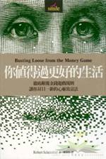
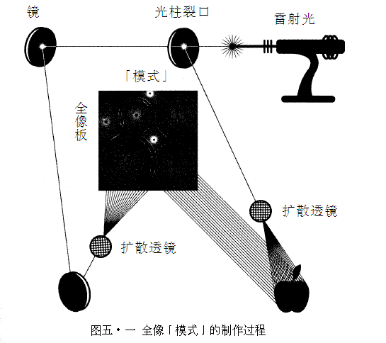
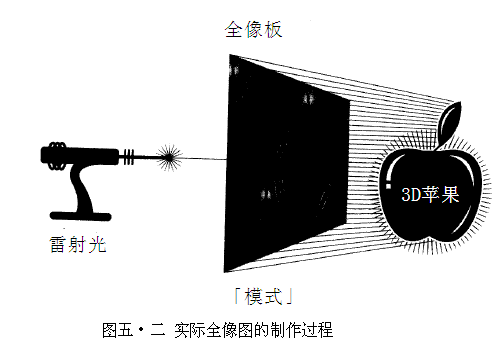
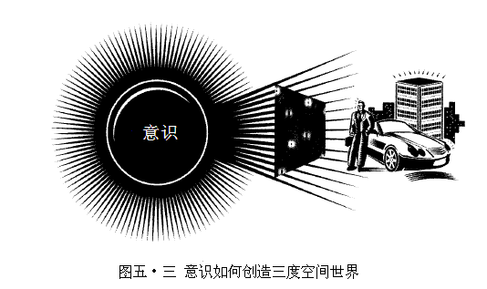
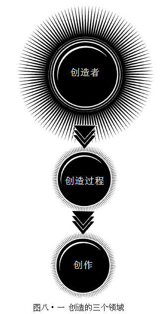
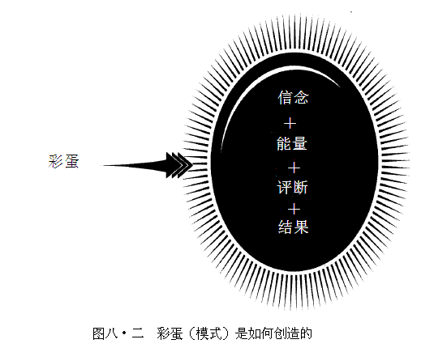
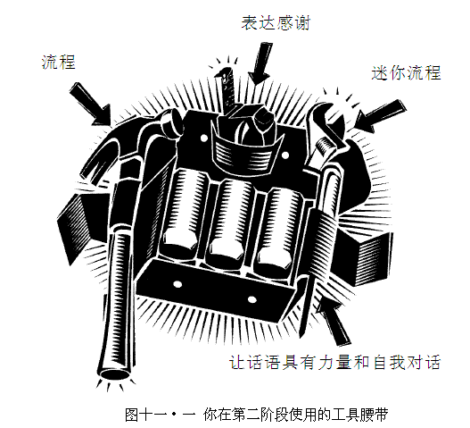
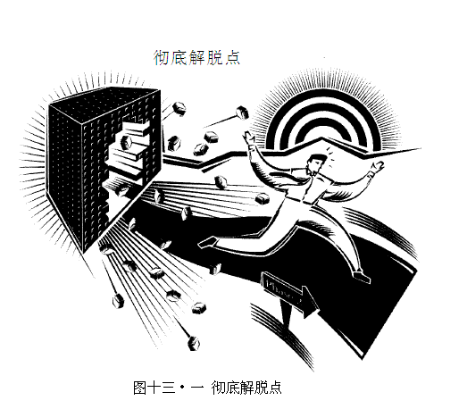

BUSTING LOOSE FROM THE MONEY GAME

罗伯特·薛弗德
译者：陈琇玲（台湾）
罗伯特·薛弗德（Robert Scheinfeld）
畅销书《通往成功的无形途径》（The Invisible Path to Success）和《第十一项要素》（The 11th Element）作者。二十多年来，薛弗德在一百九十几个国家，帮助过无数人以更少的时间和努力、享受更多乐趣，缔造惊人成效。协助他人彻底解放自我设限，同时开辟并活出自我生活方式，就是薛弗德热中的事。
陈琇玲（Joyce Chen）
美国密苏里大学工管硕士，曾任岭东科技大学讲师、行政院国科会助理研究员、Alcatel Telecom系统程序专员暨ISO 9000稽核师，现专事翻译、译作甚丰。重要译作包括《第五项修炼III—变革之舞》、《杜拉克精选—个人篇》、《水平营销》、《市场的真相》、《不连续的时代》、《搜寻未来》、《川普清崎让你赚大钱》。
内容简介
其实你本来就很富裕，只是欠缺把富裕找出来的工具。
金钱的真正作用其实是用来对你所体验过的一切表达谢意：
去餐厅吃饭付钱，其实是付给自己；
吃了好吃的东西、享受优良服务的，其实是自己；
偿还贷款也是，你贷款买车，享受开车便利的其实也是自己。
当收到信用卡账单的时候，仔细回想每一笔消费，
享受那一切自己所创造的体验，
因为有这些创造的动作，才会对自己说谢谢。
用说谢谢的心态来取代付帐，
你会发现这些感激将以金钱的形式流回你这里。
运用几个步骤所构成的过程，
作者提供了读者自我强化心灵的方法，
说服自己是一切的创造者，打败所有负面的力量，
战胜自己心中那个老是觉得为钱所困的自己。
本书有趣在于，如何把负面感触转变为正面，
并且带来生存与生活的力量。
我们所有人，都值得过更好的生活。
导论：你值得过更好的生活
1游戏规则
2 三个令人不解的问题
3 好莱坞也相形见绌
4 思想改革
5 钱是怎么来的
6 魔镜啊，魔镜
7 打开你的透视力
8 世纪寻宝
9 自己掌舵
10踩下油门，上路吧
11彻底解脱
12 过来人怎么说
13无拘无束，尽情玩耍
14对话录
15邀请
附录：添柴助势
《心灵鸡汤》作者杰克·坎菲尔推荐序
就历史来看，总有一些信念和假说让当时各年龄层及各世代深信不疑，对其真实性或正确性从不质疑。
然后随着历史演变，证实许多信念和假说根本不是真的，人们必须修正对世界的观点，采纳一套新的信念和假说。
举例来说，人们一度以为世界是平的。但是后来我们发现，这是错误的。
人们一度以为地球是宇宙的中心，万事万物都围绕我们居住的地球旋转。但是后来我们发现，这个想法也不对。
研究医学史的人会发现关于人体如何运作、疾病是什么、如何治疗身体的各种信念与假说，后来人们发现其中有些信念和假说并不正确。
研究科学者不论选择研究物理学、化学、生物学、天文学或哪一个学科，也会发现同样模式一再重复。你会看到科学家一度十分确定某些信念、假说和模式，对其真实性与准确性深信不疑，后来事实证明这一切不过只是谬误。结果，科学家不断地修正自己的理论和模型。
所以推测起来，如果历史是可依据的准则，那么我们对世界的大多数认知根本是错的。但是对任何年龄或世代来说，我们如此深陷在当时盛行的信念和假说（甚至毫不自知），以至于经常对真相视若无睹。
薛弗德说的金钱游戏（The Money Game），就是让大家信以为真、从未质疑、规模最大的信念和假说之一。从有金钱出现，潜藏于金钱游戏中的信念和假说就随之存在。事实上，跟史上其它信念和假说相比，这些信念和假说可能幸存最久，而且原封不动。金钱游戏一直是神圣不可侵犯之物，这么说也不为过。
在第一章，薛弗德讨论潜藏于金钱游戏中的信念、假说和规则。当你参与这项讨论，你认为相信这些信念、假说和规则千真万确，似乎既正常又合理。「当然，事情本来就这样运作，」你可能跟自己这么说。
不过你很快就会知道，以往你对于金钱游戏所了解的规则及其所依据的信念和假说都不是真的——不管起初这些信念和假说看起来多么寻常有逻辑或合乎道理。
我这辈子花大多数时间进行金钱游戏。事实上，我十岁在邻近一带送报时，就开始玩起金钱游戏。六个月后，我在附近的公园卖泉水，用货车送水给附近住户。
后来，我成为精通金钱游戏的玩家。然而就像薛弗德说的：「如果你依照从小被教导的规则和结构进行金钱游戏，那么不管你玩得多好，也不管你赚了多少钱，总要付出重大代价。这些代价可能以各种形式呈现，例如：压力、忧虑、痛苦、失去某样重要东西或理想破灭。」
在我的人生中，尽管我以自己的无数成就为傲，例如：《心灵鸡汤》（Chicken Soup for the Soul）系列丛书在全球各地、发行四十一种语言的版本，销售量高达一亿册，获得金氏记录及无数殊荣与奖项；尽管我能累积许多财富，但是总要付出极大代价，比方说为了推出新书或其它专案，我经常花半年或更多时间离开亲朋好友。
结果，就像薛弗德和许多人一样，越精通金钱游戏，就发现自己越想找出新方法和一套新规则来玩金钱游戏，让自己能创造并体验富足，也有权力获得截然不同的成效——不必付出任何代价！
当时候到了，旧的信念和假说要被新的信念和假说取代，大家总会这么说：「不，那是不对的。这才是事实。」无疑地，要接受这样的改变，人们总会抗拒、批评、甚至恶意攻击。但是有一些人会倾听并观察真相，然后这样做的人愈来愈多，直到达到关键多数为止。接着，传统思考方式随之瓦解，新思考方式激增为大众意识。
我预测你正要发现的这项转变洞见和彻底解脱过程，将会掀起一场革命，开始彻底瓦解有关富裕与金钱游戏的传统信念和假说，创造一个遍及世界各地的新可能性与新机会。
有趣的是，虽然此刻薛弗德独自发声谈论新真相，却没有遭到拒绝、批评或攻击。相反地，世界各地的人们正呼应他那摆脱传统金钱游戏的说法，兴高采烈地探讨创造并体验全然富足的新方式。
你可曾对自己这样说：「要是有人早跟我说，那就好了。」如果有，你就知道发现某件事让人生在瞬间彻底改变的情况是怎样。当你准备好阅读这本书，先深呼吸一下，系好安全带，准备接受瞬间的改变吧！
杰克·坎菲尔（Jack Canfield）
心灵鸡汤公司执行长、《心灵鸡汤》系列丛书之共同作者
导论：你值得过更好的生活
在闷热夏夜无法入睡的孩童，谁没想过自己看到小飞侠的海盗船在天空航行？我会教导你看到这艘船。
——罗贝多·卡卓尼欧（Roberto Cotroneo），
《夏日清晨的孩童》（When a Child on a Summer Morning）
即使外观暂时让人分心，真相总有办法打动寻求者的心灵。
——约瑟夫·韦特菲德（Joseph Whitfield）
我在这本书要跟大家分享的事，违反大家从小学到的每件事，很有可能也跟大家毕生信以为真的一切事物相违背。
当你阅读本书前七个章节时，或许认为自己进入灵界或科幻电影的情节。你也可能这么想：
l 「这跟金钱有什么关系呢？」
l 「拜托你讲重点，好吗？」
l 「他疯了吗？」
l 「他是在开玩笑！」
l 「我买这本书时并没想到内容会是这样！」
l 「绝对不是这样！」
或者，我自己最喜欢的：
l 「胡说八道！」
现在你可能边看书，边低声轻笑，但是请认真看待上面这几句话，因为几分钟后（如果你继续看这本书），你可能也有同样的想法。我不希望这些想法让你分心，或耽误你从金钱游戏彻底解脱的流程。
有时候，你会觉得压力太大、没有目标、凡事多疑、生气或不舒服。这都是意料中的事。要从金钱游戏中彻底解脱，就必须彻底改变对自己、对别人、对世界和对日常运用策略的认知。做出这种彻底改变的过程，就像按下各式各样的按钮。所以我用「让你改变游戏规则、反败为胜的惊人策略！」，做为这本书的副标题。
我跟人们谈到彻底解脱流程（Busting Loose Process）时，不管他们认为自己多么抗拒，但内心却出现一股声音说：「他说得对，而且不知道为什么，这件事我早就知道了。」如果你跟他们一样，那么不管我分享的事起初看似多么「遥不可及」，我将带领你前往的旅程和你自行抵达的终点都千真万确。我的友人和导师Ｂ·Ｗ·（他要求不公开姓名）就从金钱游戏彻底解脱，我自己也是如此。现在，我以新方式生活，这部分会在第十三章中详述。而且一直以来，我也私下教导全球各地人士这样做。对你来说，彻底解脱也是相当实际又相当可行的事。
如果你遵照本书结尾时提供的行动步骤，并且想从金钱游戏中彻底解脱，你就能从自己的经验证明我分享的一切既真实又有效。我会在后续章节详述这项重点。
这本书分为六个部分：
一、为何我有此发现及引发这项发现的突破。
二、游戏规则。
三、让人得以「从金钱游戏彻底解脱」的哲理。
四、记录并证实这项哲理的科学。
五、由这项哲理与科学产生的特定、实用、简单却非常有效的行动步骤，让你能以目前无法想象的方式改变自己的人生与财务状况。在这个部分，我也会分享真实故事，说明这项哲理与科学究竟是怎么回事。
六、邀请你在信念上做出大跃进，应用你从本书的发现，亲自证实这些发现的正确性和效力，开启崭新且截然不同的生活方式。
在〈导论〉部分，我们从背景开始讲起。在继续看下去以前，请将步骤五再看一遍。为什么？因为我要花一些时间，讲完让实际行动步骤成为可能的哲理与科学。在这段期间，有时你会觉得不耐烦，巴不得我赶快讲「重点」。我希望你记得，我们正往日常生活实务应用迈进。而且我向你保证，我们谈到彻底解脱流程的实务面时，你会了解并感谢我花一些时间为大家打好根基。
许多人加入我的行列、发现你即将在这本书中发现的事，他们最后都会问我：「你在哪里找到这东西？」我这样回答：
我唯一能回答你的方式是，把它比喻为拼图玩具组合。这里一片、那里一片、另一片放这里、另一片放那里。个别来看，每片拼图都长得不太像，但是越多片拼图凑在一起，就开始呈现全貌。然后，当更多片拼图组合起来，整个图形终于清楚呈现。我不是从哪一个人或哪一个来源得到所有拼图，但是我一直不断地寻找、收集并组合各部分的拼图。然后有一天，正要发现的全貌突然清楚呈现——让我佩服不已。同样地，只要你愿意，这东西也会令你赞叹。
祖父教育我长大也给我第一片拼图，他是一位令人赞叹的人物。祖父亚伦· 薛弗德（Aaron Scheinfeld）将一个简单构想，落实为万宝华公司（Manpower, Inc.）这家财星五百大企业（Fortune 500）。或许你听过这家公司，这是全球最大的临时人力派遣服务业者。我日渐长大，开始知道祖父缔造庞大成功和累积财富背后，有某件相当不寻常的事——这些秘密就连我家人都不知道，也从未提及。
十二岁时，我一有机会就向祖父提问，设法解开这个重大秘密。那一年内，祖父一再推托其辞。后来我们整个大家族到瑞士克伦斯庆祝祖父七十大寿时，祖父邀我跟他一起喝杯热巧克力，这时候他终于把他的故事跟我说。
那一天，祖父带领我开始了解两项关键真相，进而让我的人生从此截然不同：
一、世上发生的事，背后都潜藏着一股驱动力，发现这件事的人寥寥无几。
二、藉由了解并学习利用这些潜藏力量，就能释放并运用庞大力量，在生活中创造奇迹。
以整个历史来看，书籍、录音带和演讲一直充斥着类似讯息。但是祖父说的「潜在力量」和他利用这些力量的方式却相当不同，所以即使这些字眼看似熟悉，请耐心地听我说，因为我将为大家呈现截然不同的面向。
我跟祖父在瑞士克伦斯小咖啡馆的初次讨论，好坏消息参半。好消息是祖父开始教我有关潜藏力量的真实本质，并指导我如何利用这些力量。坏消息是七个月后祖父就过世了，还来不及把我教完。所以我花三十五年的时间，应用他教我的东西并遵照他遗留的许多线索，我搞清楚祖父若还活着会教导我的整个系统，然后孜孜不倦地找出遗失的拼图，将它们组合到整个系统中。
这三十五年来，我发现许多遗失的拼图。我将它们组合到我应用的系统中，自己也成为金钱游戏大师。在我事业生涯初期，我应用这个系统成为某家电脑转卖商的顶尖业务员，也在担任业务经理、企业沟通经理、区域经理、最高行销主管、行销副总裁、顾问和企业家时，缔造优异成效。
后来，我应用这套系统创造并执行一个行销模式，让潜能大师东尼·罗宾斯（Tony Robbins）多媒体研讨会座无虚席，也协助美国连接点（Connecting Point of America）电脑连锁店业者，在不到三年内，业绩从九千万美元激增到三亿五千万美元，拥有惊人获利。
当我继续应用这套系统累积更多个人财富时，最后却负债十五万三千美元。后来我东山再起，重新累积财富，让自己比以往更富有。这次东山再起时，我进行许多计画，包括让蓝海软体公司（Blue Ocean Software）在四年内，业绩从一百二十七万美元增加到四千四百三十万美元，并三度名列《公司杂志》（Inc. Magazine）的「公司杂志五百大企业」。这项庞大成长加上惊人获利能力，让蓝海软体公司受到软体业巨人英图特公司（Intuit）的青睐，以一亿七千七百万美元收购蓝海软体，也让我获得相当可观的报酬。
在那段期间，我还写了两本畅销书，透露我当时收集的拼图。我的第一本着作是《通往成功的无形途径》（The Invisible Path to Success）、第二本着作是《第十一项要素》（The 11th Element）。
不过，蓝海软体公司卖掉一年后，我也从后续一连串的事业成就中赚到更多钱，我观察到自己绝大多数的财富又开始消失。我停下来问自己：「一点道理也没有。我一定错过什么。」以《爱丽丝梦游仙境》（Alice in Wonderland）和电影《骇客任务》（The Matrix）的名言来说就是，我知道自己必须「要往兔子洞里再走进去一些」。
第一次失败时，我只影响到自己，当时我还没结婚生小孩。失去一切，让我痛苦万分，但我总能忍受极大的痛苦。不过现在，我有老婆和两个小孩，也已经为一家人创造相当幸福的生活和生活方式。如果我再次失败，我知道这种痛苦将难以忍受，家人也会这么认为。所以我很担心，也开始着迷于找出自己仍未知道之事。我再度展开探索，专心找出祖父要给我、但我显然还没拿到的那些失落拼图。八个月后，我找到这些拼图了。在这本书里，我会跟大家分享这些拼图。
以我的个人经验及与许多巨富（包括一些全球巨富）的关系，我发现金钱游戏是你赢不了的游戏。你很快就会发现，如果你依据从小学到的规则和结构，不管自己多么精通金钱游戏，不管你在金钱游戏中累积多少钱，这场游戏总会引发某种形式的失败，例如：压力、忧虑、痛苦、某种损失或理想破灭。
依照大多数专家教导的方法，只是更精通金钱游戏、累积更多金钱，这样做其实行不通。事实上，你必须从金钱游戏彻底解脱，开始利用一套自己选择的新规则，进行新的游戏。当事情真正改变，也维持改变状况，生活就真的令人兴奋！
在继续讨论前，还要先说明另一项重点。翻阅这本书时，有些人从头看到尾循序渐进地阅读。有些人这里翻翻、那里看看，某些章节略过不看，某些章节看得很仔细。我写这本书的目的是要协助你，从金钱游戏中彻底解脱。因此，我必须以特定顺序提供你特定的拼图，协助你以特定方式组合拼图。
如果你依照我的带领，就会看到壮丽堂皇的「全貌」呈现眼前，也能获得权力从金钱游戏中彻底解脱。如果你不依照顺序，就会发现桌上摆满一堆看似可笑的纸板，你可以找到捷径取得实际力量，却依旧被困在金钱游戏的限制和束缚中。简单讲，请你耐心点，依照自己的感受，依照自己的步调，循序阅读这本书。相信我，跟着我的带领，我知道如何让你从金钱游戏中彻底解脱，我可以帮助你做到，但是你必须依照我在特定处境跟你分享的地图行事。
打从一开始你也必须了解，光看这本书，我无法让你从金钱游戏彻底解脱，我只能告诉你方法，为你打开通往新世界的入口，协助你通过这个入口，告诉你在新世界里该做什么。要真正从金钱游戏彻底解脱，你必须做一些事。我会告诉你该在什么时候做什么事，以及怎么做。这一路上，我会提供你极大的协助，但是「抵达」终点前，必须经过一个漫长且耗时的旅程，你也需要做出承诺，要有耐性、毅力和纪律。
如果你做出承诺并愿意这么做，日后就能获得目前无法想象的报酬。我可以明确地说，一旦你从金钱游戏彻底解脱，在生活中，金钱就不再是问题。此后也不必再担心帐单、现金流量或收支平衡。
不必再问：「这我买得起？」或「那我该买吗？」生活中也不必再担心现金收入与支出，不必担心资产负债、个人所得、存款、债务、获利或税款。
不必再为了设法管理、保护和增加现有财富，引发困惑、压力和一堆复杂事物。不必再为了「收支平衡」或在生活中开创一点喜悦或奢华，而工作到焦头烂额。
一旦你从金钱游戏彻底解脱，金钱方面再也没有任何限制与束缚。不管现在这一点听起来多么诱人，当你从金钱游戏彻底解脱时，你的人生就会出现这样的改变，发生的情况正是如此。所以，从金钱游戏彻底解脱是你必须体验才能了解的事。
基于一项特定原因，我将这项游戏称为「金钱游戏」。要发现其中缘由和金钱游戏的规则，请翻阅第一章。
1游戏规则
上场后三支好球都没打到，就被三振出局——这是棒球规则，是那种游戏的规则。 但是，这种规则只应用在棒球比赛。
——杰西（Ｊ·Ｃ·）
如果你跟我接触到的大多数人一样，你可能从不认为金钱及追求财富是一场游戏。 我跟人们谈论此事并询问他们的意见时，大家通常这么说：「金钱绝对不是一场游戏，而是相当严肃的事。」
彻底解脱流程的第一个步骤是，确实「了解」个人财务世界中的每样事物——所得、净值、投资、存款、税款、费用、发票、应收帐款和应付帐款、获利等等——都是一场惊人、精心设计、庞大独特且错综复杂游戏的一部分。我会在这一章介绍金钱游戏的基本规则，在后续章节再做更详尽的介绍。
如果你仔细观察，大多数游戏都有其规则和清楚的结构，也明确界定开始时间和结束时间，并清楚定义输赢。 选择参与游戏者都同意遵照规则并遵守游戏结构，这样做游戏才得以进行。虽然有一些人以游戏为职业并以此维生，但是大多数人只是为了好玩和乐趣才玩游戏。 人们喜欢观赏比赛，就是基于同样的理由。
举例来说，美式足球是由皮革制成、有一定大小并符合严密规格。 足球场长一百码，一场比赛有四局，每局十五分钟。 球员带球进入达阵区得六分；带球触地射门得一分；直接射门得三分；进攻队的球员若在自己的达阵区被敌人擒抱，对方可得二分。第一次进攻为十码，任何时间只有固定人数的球员在场上比赛，他们必须守备特定位置。有规则规定球员在场上能做什么，不能做什 若在规定时间打成平手，则延长比赛直到分出胜负。四局比赛结束时得分较多者获胜；若在规定时间打成平手，则延长比赛直到分出胜负。
棒球是另一个例子，棒球场有特定形状和大小，呈现钻石状。 在比赛时，每队只有九名球员上场比赛，就像足球比赛一样，每位球员守备特定位置。棒球比赛要使用符合明确规格的球棒、棒球和手套。 每场棒球比赛有九局，每局每队容许三位球员出局。 每位上场的打击手有四坏球、三好球的机会。 投手站上稍微垫高的投手板上，跟打击手所站的本垒有特定距离。投手站上稍微垫高的投手板上，跟打击手所站的本垒有特定距离。各垒之间也有特定距离。 打击手经过一垒、二垒、三垒回到本垒，可得到一分。 九局结束时得分较多的球队获胜（平分时则延长比赛直到分出胜负）。
再举高尔夫球赛为例。 打高尔夫球的人在高尔夫球场打球，球场上有一定数目的球洞、果岭、球道、深草区、沙坑和水池。 打球者使用Ｌ形金属球杆，这种球杆是为了能准确将球打进小洞而设计。打球时必须依照特定规则，违规者就要受罚。 比赛结束时杆数最低者获胜。
如果你仔细并客观地检视足球、棒球和高尔夫球等球赛，你会发现这类规则和结构似乎完全武断，没什么道理。 想想看：
l 美式足球：抱着一个充气膨胀的皮球跑，或设法跨越白线和得分点时，将这颗充气皮球丢给别人。 不然就是，想办法把这颗皮球踢过两根金属柱抵达得分点。
l 棒球：设法用木棒击中向你高速飞来的橡胶圆球或皮制圆球。 接着，如果你击中球，而且球没被其它球员用手上大型皮革手套接到，你就要边跑边触及放在地上的三个方形垒包，然后回到本垒才能得分。
l 高尔夫球：用Ｌ形钛金属球杆设法击中橡胶制的小圆球，想办法用最低的敲击数或「杆数」，让圆球进到几百码外浅浅的小洞。
如果你检视桥牌、大富翁、撞球、西洋棋、跳棋、二十一点等其它普及游戏的规则和结构，也会发现同样的武断。 你会问自己：「怎么有人想到这么奇怪的游戏、规则和结构！」虽然初次审视时，这些规则和结构看似武断，但是后面却潜藏着创造规则与结构要用到的智慧、计划和意图。
参与者很少质问所参加游戏的缘起，或怀疑规则与结构看似武断的本质。 这些游戏老早就发明了，所以后来人们玩游戏时，只是照着「有影响力人士」的说法去做。
金钱游戏的情况也一样。 在仔细客观地审视时，你很快发现金钱游戏的规则与结构看似武断，也不太合理。 不过在后续章节你会看到，潜藏于金钱游戏设计后，让人佩服的智慧、计划和意图。我保证，当你发现此事必会震惊不已！ 为你开启大门，从金钱游戏中彻底解脱。
我们长大成人，度过特定年纪时，就成为运转不息金钱游戏的玩家。 跟运动员和其它游戏玩家一样，我们从未质疑金钱游戏的规则与结构。 我们只是接受学到的规则与结构，并依此进行游戏，仿佛它们铭刻在石板上，没有协商的余地。
在此先介绍我们被教导的三大规则与结构，这是在玩金钱游戏会出现的「真实」情况。 其实，这类规则与结构还有几十项（包括许多有关税款、政府、投资等），但是下列这三项却是我们最熟悉、也让我们受害最多的规则，这一点你很快就会了解：
一、财源供给有限。 可供你使用的金钱有限，每次金钱「流出」，有限供应的金钱数量就减少。 因此，你必须想办法持续补充供应，否则钱会用完。你必须小心负责地保护你的钱，确保钱不会花光。 因为金钱的核心供应有限，你也必须有长期计画，好好储蓄，聪明地投资，经年累月地增加资产，供退休生活所用。
二、金钱流通。 金钱会流进和流出。 金钱「就在那里」，不知何故金钱跟你是分开的，你必须去拿到钱，让钱进入你的生活中。另外，当你花钱时，钱就从你这里移动到别人那里，然后你的钱就变少了。 你有收入和支出，你必须管理这两者的变动，才能让收入超过支出，这样做才有获利可言。 如果你想提高生活品质，就必须增加获利。
三、为了增加个人财源，你必须更努力或更聪明地工作。 人生中无法想要什么就有什么。 万事万物都要「花钱」。 想要的每样东西，都会让你「付出代价」。你必须「赚」钱，天底下没有白吃的午餐。 没有付出就无法获得。 所以，如果你希望有更多钱，就必须想办法增加更多价值或更努力工作——或更聪明地工作——才能赚到更多钱。而且你必须培养赚钱技能，全心全意地赚钱，否则你绝对不会有很多钱。
要支持传统金钱游戏的规则和结构，我们一直对下列共同信念信以为真：
l 金钱是一切邪恶的根源。
l 金钱是污秽或不好的——拥有金钱者亦然。
l 有钱人越来越有钱，穷人越来越穷。
l 钱永远都不够。
l 你必须控制金钱，否则金钱就会控制你。
l 钱总是越多越好。
l 钱得来不易。
l 有些人有赚钱技能，有些人没有。
l 人不可能既懂得赚钱又高尚。
l 资产净值就是财富与成功的实质评量。
l 你必须未雨绸缪。
听到我这么说，你或许很惊讶，我刚才提到的这些规则或信念，及其衍生出的次要规则和信念，竟然没有一项是真的。 没错，没有一项是真的。 这些都是杜撰出来的，就跟所有游戏的规则一样。只是我们信以为真。
现在，我打算先为两项重点播下种籽，然后在第三章时再让其长大茁壮。
一、你无法在金钱游戏获胜。
二、具体地说，金钱游戏是为了创造彻底失败而设计的。
你无法在金钱游戏中获胜，因为：
l 「获胜」并没有清楚定义。 你怎么知道自己在金钱游戏中获胜了？你问过自己这个问题吗？ 当你觉得自在时就算获胜吗？成为百万美元富翁就获胜吗？ 或是要好几百万美元才算获胜？ 要有十亿美元才算获胜？ 超越自己订定的其它所得目标或资产净值目标，就算获胜吗？ 以我的经验来看，虽然许多人为自己订定财务目标，为金钱游戏获胜做明确定义者却少之又少。如果你不知道目标为何，怎么可能击中目标或知道自己是否命中目标？
l 你的钱总是岌岌可危。 不管你累积多少钱，你的钱总处在危险状态。 你可能透过不当管理、过度开销、股市崩盘、投资失利、被盗用侵吞、被偷、离婚、诉讼、经商失败、银行破产、悲剧意外等诸如此类的事，损失所有财产或大多数财产。况且，钱都没了还不打紧，你还可能背负一大笔债务。 你有越多钱，越聪明地理财，就误以为自己的钱很有保障，但事实上，不管你有多少钱或你怎么管理钱，钱绝对不安全。 累积庞大财富后，经过一代或几代的时间却把财富赔光，这种故事在历史上比比皆是。
l 没有正式的终点。 金钱游戏何时结束呢？ 当你达到为自己设下的某些里程碑吗？ 但是这样行不通，因为即使你暂时达到或通过这个里程碑，你的钱还是岌岌可危，所以你可能失误，损失你所累积的财富。退休时，金钱游戏就结束吗？ 情况也不是这样。 你的钱还是处于危险状态，即使你不再工作，却仍旧任由金钱游戏规则与结构的摆布。 那么当你死时，金钱游戏结束了吗？ 或许你辞世时，你的金钱游戏结束了，但是你的家人和继承人依旧深陷金钱游戏中。如果金钱游戏没有正式的终点，你怎么知道自己是否获胜或何时获胜？ 在足球赛第三局结束时领先，能说自己赢了吗？ 在棒球比赛第七局时领先，能说自己获胜吗？ 打一场高尔夫球十八洞的比赛，在打完十二个洞时以杆数最少领先，能说自己获胜吗？不行！
l 总要付出代价。 你也不能在金钱游戏中获胜，因为即使你赚到许多钱，保留一些钱，花了一些钱，聪明理财和投资，让自己的资产净值不断增加，过得如国王或皇后那般的生活，也为舒适甚至奢华的退休生活做好准备，但是依据传统规则进行金钱游戏，总会引发一些各式各样的紧张、压力、不满、痛苦或损失——尤其是失去闲暇时间、健康和关系。我相信你一定亲身经历过、看过或知道有人成功地累积庞大财富，最后却
——生病。
——孤独。
——早逝。
——偏头痛或其它让人衰弱的身心失调。
——精神濒临崩溃。
——觉得心里很空虚。
——生活优裕却认为很无聊，心想：「一切就这样吗？」
l 总有人比你更成功。 只有极少数财务相当成功者例外，大多数人都掉入金钱游戏设计的陷阱中。 当人们互相比较谁有钱，想要更有钱的欲望就油然生起，于是订下目前遥不可及却好像做得到的目标，这时就掉入金钱游戏的陷阱中。举例来说，王小姐每年赚进二十五万美元，对自己相当满意，她看到陈小姐每年赚进一百万美元的生活后相形见绌。 或者王先生搭商务客机头等舱出差，得知陈先生是搭私人飞机出差；或是王太太有一幢豪宅，却看到别人有两幢豪宅。这类比较都会引发一种不满模式。 当我们在财务成功的食物链中往上移动时，这种模式会继续不断地发生。
想象依据我描述的规则和结构，进行或观赏其它任何游戏。 想象一下，进行或观赏一场无法知道谁获胜的游戏，没有正式终点，不管自己已经获得什么，却知道总有其它团队或其它玩家比你玩得更好；即使你以为自己赢了，最后你总是输家（因为你必须付出代价）。
有谁想玩或观赏这种游戏？ 没有！ 对玩家来说，这根本是梦魇。没有人自愿参加这种游戏，而且也没有人想观赏这种游戏。 这样做有什么意义呢？
尽管如此，每天有几十亿人现身参与并观赏金钱游戏，完全没有注意到真正发生的事实。 这当中有许多人相信，自己在金钱游戏中获胜，相信自己是赢家，或相信自己在周遭或媒体上看到的人是赢家——而这一切只是错觉。
在第七章，我会透露为什么你无法在金钱游戏中获胜的更大原因。 但是现在，我必须提供你完成这张拼图所需的更多基础部分。
从来没有人告诉你，金钱游戏跟我们进行的其它游戏截然不同。 谈到金钱游戏，没有任何事情铭刻在石板上，每件事情绝对都可以商量。 其实，你不需要接受金钱游戏的传统规则和结构，因为你可以选择！
既然你无法在金钱游戏中获胜，你就只有两种选择：
一、依据传统规则与结构继续进行金钱游戏，知道自己不管玩得多好，终将成为输家并付出极大代价。
二、从金钱游戏中彻底解脱，为自己创造一个新游戏，选择自己的规则，永远改变自己跟金钱的关系。
三、
不管你认为这些话听起来多么疯狂、多么遥不可及，我保证一旦你看完这本书，就能采取第二种选项，从金钱游戏彻底解脱。
在接下来的旅程中你将发现，在你生活中有三个令人不解的问题，你将学会如何以让你从金钱游戏彻底解脱的方式，回答这三个问题。 请继续阅读第二章。
２ 三个令人不解的问题
生活是我的工作，也是我的艺术作品。
——法国散文家蒙田（Michel Eyquem De Montaigne，1533－1592）
要是我只记得那些为点燃热情而努力的日子，而不记得为求安身立命而劳碌的日子，那该有多好。
——美国评论家暨作家爱德蒙·威尔逊（Edmund Wison，1895－1972）
从有文字记载的历史来看，有三个问题一直令人不解。
一、我是谁。
二、我为什么在这里。
三、我的目的是什么？
即使当下似乎不明朗，你很快就会发现，若无法为这三个问题找到答案，就不可能从金钱游戏彻底解脱。而且或许你觉得很有趣，我在本章（和后续两章）中跟大家分享的许多拼图，其实是当初在瑞士克文艺学斯喝热巧克力时，祖父跟我分享的事。基于尊重和敬畏，我很认同祖父的说法，也以他的成就为荣，我毫无疑问地接受你即将发现的构想。不过，这些构想对我来说并未马上成真，我并没有完全了解这些构想的重要性或效力，也无法依照这些构想采取任何实际行动。直到数十年后，当我把更多拼图图片凑起来也更有经验后，我才知道这些构想的重要性和效力。这总分容后再述。
我相信，我们没有办法知道有关这三项问题的解答的绝对真相。为什么？因为有特定的神秘存在，它们如此庞大复杂，不是我们现有意识与进化程度所能理解。既然我们无法确定这三项令人不解问题的答案，我们所能做的只是创造接近真相的模型，这样做就足以让我们在日常生活中，获得实际利益。
因此我在后续要跟大家分享的，就是让你得以从金钱游戏中彻底解脱的实用模型。这个模型完美吗？不完美。如果试用这个模型，会找到破绽吗？会。我可以告诉你：尽管这项模型有缺点，但却相当有效。当我在本章和下一章分享这项模型的哲理时，或许你认为这一切有些「虚幻不切实际」，或让你觉得「迷迷糊糊」，但是请你氢下面这两个想法牢记在心：
一、不管乍看之下让人做何感想，但它们却是拼图要件。你看到第六章就会明白，这些哲理实际上有多么——一旦你看完这本书，会更了解它们的重要性。
二、在第四章和第五章，我会跟大家分享考证并证实这项模型之哲学要素的先进科学。如果你相信我在本章和下一章所分享的想法，会令你产生任何疑问，那么这项先进接掌对你就很重要。
现在，我们就先看看第一个令人不解的问题。
我是谁？
如果你接触过新时代，形而上学或灵性思考的信息，你一定会听过这种说法：我们是拥有肉体体验的灵体。我同意这种说法，这跟我要向你说明的模型完全相符。
你其实是一个拥有无穷能量又非凡出众的存在体。动动手指，你要的东西就在瞬间出现。你所熟悉的所有能力概念，都比不上「真正的你」拥有的无穷能力和无所不能。所有自然力量和人们集合加乘的能力，根本无法与你所能随意支配的能力相比。由于你的生活背景和信念使然，或许这种说法让你大感讶异。不过，如果你依照我在这本书提供的指导，这就是你能够亲身体验、自我证实的事情之一。
因为你有能力创造你想要的一切，你的自然状态是无限富足（Infinite Abundance）的一种状态。在你的自然状态中，你不「缺少」任何东西。没有东西遗失了，也没有尚未满足的欲望。身为一个无限存有（Infinite Being）你也一直保持在平安喜乐的状态。
身为一个拥有无穷力量，即聪明又富足的存在体，你有无穷的欲望要表现创意，彻底体验源自这种表现的扩展与喜悦。事实上，无论如何，所有人的生命在本质上，都跟创意表现有关。
接下来，我们看第二个令人不解的问题。
我为什么在这里？
你在这里玩游戏！在日常生活中，你着手处理日常事务。然后，你常撇开日常事务，玩各种不同的游戏。我指的游戏是运动，棋盘游戏，纸牌游戏，爬山，骑自行车，高空弹跳，开快车，看电视电影或戏剧，看一本很棒的小说，绘画，唱歌，听音乐或做自己真正爱做的事。你因为乐趣，喜悦，娱乐来选择游戏挑战自己，探索可能性，扩展自己的视野和能力。
谈到「你为什么在这里」这件事，情况也一样。你来自另一种意识层级的无限存有所在之处，你也决定花时间远离日常事务，玩一场游戏。那场游戏就称为人性游戏（The Human Game），金钱游戏则是人性游戏中的主要部分。
你感到惊讶吗？来这里只为了玩一场游戏，这样太微不足道或不足以说明人生的痛苦，艰难和错综复杂吗？如果是这样，请你耐心点，让我透露更多更多的拼图。
接下来，我们看第三项令人不解的问题。
我的目的是什么？
你有一般目的和特殊目的。一般目的就是玩人性游戏，得到人类进行所有游戏所获得的好处：乐趣，喜悦，娱乐，延伸，扩展，探险，发现可能性等诸如此类的事。
你的特殊目的是——以身为独特的无限存有所选择的独特方式，进行这场人性游戏。我们都要进行人性游戏，但是每个人玩这场游戏的方式截然不同。即使看起来我们好像在做同样的事，以同样的方式做事，或基于同样的理由，但事实并不是这样。身为无限存有，每样东西都是为我们订制设计的。当你看完第四章和第五章就会明白。
芭芭拉·杜威（Barbara Dewey）在其著作《创造宇宙》（The Creating Cosmos）中，提到下面这段话（「创造宇宙」意即我所说的「人性游戏」）：
在最终中，我认为创造宇宙的最重要目的是——创意可能性的喜悦展现。光是要满足这项目的，就需要卓越结构的设计，是在简单和机会这两方面的突破，也是在协调合作的情况下给予全然的自由。在创造宇宙这个概念里，没有输赢之分，因为每个人玩自己选择的游戏，所以只有赢家，没有输家。
如同第一章所述，所有游戏都从概念开始成形。然后与建游戏场，接着设计必要工具和援助资源（例如：高尔夫球俱乐部、足球、棒球、网球球拍），然后发展所有玩家要参与游戏必须严格遵守的规则和结构。人性游戏的情况也一样。
现在，我们来讨论驱动人性游戏的概念。我是电视影集和电影《星舰迷航记》（Star Trek）的忠实观众。在这部影集中，有一个称为「最高指导原则」（Prime Directive）的概念。最高指导原则就是指导星舰企业船员在太空探险的核心原则。人性游戏也有最高指导原则，就是你将无限能力和创意表达的无限能力设限，让自己在自然状态的无穷智慧、富足、喜悦与平静都受到限制，然后探索发生什么事。我在本章将从哲学观点介绍这项概念，在说明一些更重要的拼图部分后，会在第七章从基本、日常实际观点继续讨论这项概念。
我们玩的所有游戏起初都是由某人基于特定原因和动机所设计。人性游戏也不例外。从扩展且无限的观点来看，想象某一个无限存有认为：「如果我限制自己、约束自己、隐藏自己的能力、智慧、富足和喜悦，看看会发生什么事，这样不是很有趣吗？」我真的能让自己确信，这些东西不见了吗？我真的能说服自己，我跟真实自我恰好相反吗？接下来会发生什么事？如果我真能做到这样，那么整个旅程和体验会是怎样？
既然你是无限存有，如果你想玩一场限制约束自己的游戏，你必须创造一个替代自我或人格面具（Persona），当成这场游戏的主角。然后，你必须向人格面具隐瞒所有对真实自我、所有能力、智慧、富足、喜悦与平静的认识。接着你必须设计其它玩家跟你一起玩这场人性游戏，为这个游戏设计一个游戏场，并且设计一位协助者，在你无法认清自己是谁、情况究竟如休发展的「真相」时，能够秘密地指点你。
进行人性游戏的人格面具，现在正在看这本书——你也一直以为这说法是「你」。其它玩家就是你周遭看到及跟你互相影响的人，这部分会在第六章讨论。游戏场是我们说的宇宙或物质实体或称三试空间。秘密指点炮们的协助者就是「真正的你」（Real You）,也就是你的无限自我（Infinite Self），在这本书里将以扩展的自我（Expanded Self）称之。
看到这些字眼或许让你眼花缭乱，不过重要的是了解到，你的人格面具和扩展的自我虽然看似不同，在最深层处却合为一体，是属于同一个无限存有。表面上的区分是意识（Consciousness）的狡计所创造之必要幻觉。这部分在后续三个章节会做讨论。
其实从人格面具诞生起，你就开始自己的庞大能力、智慧和富足，建造一个替代实体（游戏场）进行人性游戏。在我们继续讨论限制、束缚和人性游戏前，让我先在你的扩展意识中播种。这部分的内容也引用杜威的说法：
因此，我们误以为自己受到命运摆布，自己不是命运的主人。这类信念让我们觉得无能为办，也急于利用技术协助，弥补自以为不足之处。没有人鼓励我们运用自己与生俱来的心电感应能力，反正有电话可用。我们不需要完全记忆力，反正有电脑就好。我们不需要归巢本能，因为我们有地图。我们不需要讲究养生，反正有医生帮忙。
除了隐藏自己的能力并打造一个替代实体进行人性游戏，你也让自己确信，隐匿处既痛苦又危险，既恐怖又致命，应该不计代价地避免，这部分会在后续章节讨论。
如同一场棒球比赛有九局、足球比赛有四局、高尔夫球赛要打完十八洞，人性游戏则有两个阶段。
第一阶段
在人性游戏的第一阶段，扩展的自我运用所有能力，创意和设计才能，隐藏你对「真正的你」及本身自然状态的所有认识——也不计代价的阻止你发现「真正的你」。尽可能的让你确信人格面具和三度空间战场是真的，并逐渐的限制的约束你，直到你完全相信自己是另外一个人（跟「真正的你」截然不同）。坊间谈论成功与自我成长的书籍，将这项过程做出极为不同的定义，通常以「自我催眠」（programming）或「自我制约」（conditioning）称之。
当你思索这一点时问问自己，我们出生时没有任何能力、知识或富足，这样无助的婴儿就开始玩起人性游戏，难道纯属意外！
第二阶段
在你忘记自己是谁，沉浸于人性游戏第一阶段极度受限束缚的经验后，扩展的自我开始催促你进入第二阶段。这时候，你开始觉得不完整，好像遗失某样东西，仿佛一切再也没有意义，一定有什么事你不知道。然后你开始找寻答案，找寻人生更崇高的目的。
这时候，你还不记得自己究意是谁，或是自己究竟拥有多少能力，智慧和富足。尽管如此，你开始寻找真相。接着，扩展的自我转变角色，带你走上世纪寻宝，支持你重新获得你在第一阶段隐藏的所有能力，智慧与富足。一旦你重新获得能力，智慧和富足，就能开始无拘无束的进行人性游戏。我以彻底解脱点（Busting Loose Point）称呼这个交叉点。抵达彻底解脱点时，就棒极了。
顺道一提，你发现这本书也并非偶然。就某种程度来说，除非你想支持自己进入第二阶段，或正准备进入第二阶段并使用这本书做为基础训练或暖身，否则你根本不会看这本书。
看到这里，你可能想到：「怎么有人想玩这种游戏？要把那么多能力，富足和智慧藏起来，然后重新找到它们。听起来很疯狂。」
如果你这么想过，那我问你两个问题：
一、人为什么要玩游戏？
二、如果你诚实客观地检视，人性游戏的规则和结构真的比高尔夫球、棒球、篮球、足球、美式足球、西洋棋、跳棋或大富翁的规则和结构更武断或疯狂吗？
如同我们先前的讨论，不管乍看之下游戏规则和结构有多么疯狂，或者有时进行游戏是多么困难，人们完全是为了乐趣、挑战和快活而玩游戏。大家耗费无数的时间、精力和金钱，训练、参与并观赏各种游戏，也认为这是非常合理的活动。对于拥有更多能力、智慧和富足的无限存有来说，为什么有任何不同？
或者这么想：为什么有人愿意离开温暖舒适的家，去体验痛苦艰辛，冒着生命危险，参加攀登圣母峰或高速赛车等活动？
你想过的这一切问题，其解答说法是：你其实是一个很喜欢冒险的灵体，你渴望扩展自我和自我经验。对「真正的你」来说，人性游戏的限制根本不算什么。人性游戏的挑战是忘记你究竟是谁，并且隐藏你所有的能力，所以你可以从零开始玩游戏。
另外也请这么想，想象自己是一名建筑师，客户请你为他设计一幢令人赞叹的建筑物。你运用想象力预想这幢建筑物的长想，铁面无私拟定计划。这样做很有趣也很值得，但是看到建筑物理学真正出现在三度空间里并成为「真实」，更令人兴奋。从利用人性游戏的构想，然后看到构想在三度空间出现，进而实际地参与人性游戏，其所衍生的挑战、乐趣和报酬相当庞大。当我提供你更多拼图图片时，请把这件事想一想。
或许你也想过：「好吧，就算我认同人生是一场游戏这种构想，但是为什么有人愿意选择在人性游戏中体验虐待、生病，贫困、挣扎、饥饿、强暴、谋杀和死亡这么可怕的事？我不认为这些事有什么乐趣或让人愉快？」
我会在后续章节更详细地讨论此事，现在先让我跟你分享一些想法：「真正的你」认为这些经验一点也不可怕，而且在参与人性游戏时玩得很尽兴。「真正的你」知道这些经验都不是真的，一切只是游戏——就像你知道电影荧幕上发生的事不是真的。电影或许让你害怕或者高兴，但你知道一切都是虚构的，没有人真的生病、受伤、活着、死掉或赚大钱。
「真正的你」知道人性游戏中的所有体验，只是为了设计游戏和进行游戏的游戏场所虚构。「真正的你」知道这一切体验只是看起来好像真的，让完全沉浸其中并信以为真的「人格面具」感到害怕——这就是人性游戏的重点——让一切看起来好像是真的，其实不是真的。
让幻觉看似真实，就是人性游戏设计的最大挑战。不过除了看似真实，人性游戏必须既有趣又符合个人利益。以当代知名编辑梭尔·史坦恩（Sol Stein）对撰写引人入胜小说的评论为例：
棒球、足球或利于等球季到达高潮时，美国男性人口中有想当高的比例，下班后花好几个小时看电视转播球赛，但是美国女性这样做的比例却少得多。举例来说，棒球迷有意无意地期待球赛出现紧张及悬而未决的时刻，例如：打中球还没被封杀前、跑者向垒包飞奔但还没抵达垒包是，其它游戏的情况也一样。观众希望自己崇拜的球员经历紧张不安和喜怒哀乐，读者阅读小说时，也希望看到这一切。读者喜欢这种期待和兴奋，虽然这种事发生在生活中常令人担心，但发生在球场或书籍内容中却让人开心。
对于在人发到游戏中完全融入电影体验的无限存有来说，情况也一样。我们也想要透过亲身经历，体验紧张不安和喜怒哀乐。史坦恩继续说：
但是我们要记住，当一个团队——即使是我们支持的团队——轻易获胜时，我们就不觉得比赛很好看。体育的观众和小说读者最喜欢的是双强敌对，平分秋色越久越精彩。
史坦恩的睿智观察也说明为何人性游戏第一阶段的生活并不完美，为何我们要在完全融入的电影体验中，设计人生的高潮和低潮、挑战和冲突错觉。
我希望你记得太阳和云朵这个隐喻。「真正的你」拥有无限能力、智慧和富足，正如同太阳一样。想到太阳，你就想到庞大的能量与能力，对吧？所以这样比喻很恰当。
不过当你参与人性游戏时，你必须创造幻觉说服自己，你跟「真正的你」完全不同——也就是说，你要说服自己，你受到极大的限制和束缚，既脆弱又贫困，是会被人、事、物和地点所影响，自己无法控制一切的可怜虫。这就好像创造一堆云朵，遮住太阳，说服自己太阳不见了，云朵才是真实，只有云朵存在。
把这项隐喻加以扩大，如果云朵散开，太阳依旧照耀吗？是的。飓风来临时，太阳依旧照耀吗？是的。下雨时，太阳依旧照耀吗？是的。不管地球发生什么事，太阳都依旧照耀。
你的情况也一样。不管你的人生发生什么事，不管情况怎样，你真的没有改变。你还是无限存有，你本来就拥有无限能力、富足、智慧、喜悦与平静。你只是说服自己，跟你完全相反的「人格面具」才是真的你。我会在第四章和第五章中说明你要怎么做。
由于人性游戏第一阶段的目标是限制自己、说服自己你和「真正的你」截然不同，如果以无限存有的身份开始，事情一定无法顺利运作，会遇到问题。如果仔细客观地检视，一切
都不合理。许多时候，你会觉得很不自在，无法体验真正的财务富足，至少会付出庞大代价！你根本不可能长保心平气和、心满意足或兴高采烈。
在第一阶段里，达成目标和实现愿望的阻碍与抵抗是常有的事。觉得少了什么或有什么差错，这种感觉一定让你苦恼不已。为什么？因为第一阶段的重点是——说服自己，你跟「真正的你」恰好相反。如果目标是要限制，你就无法扩展。如果目标是要约束，你就无法开放。这就是人性游戏的运作方式。
如同我们所讨论的，人性游戏第一阶段的目标就是要让自己确信，你跟「真正的你」截然不同。因此在第一阶段时，不管哪里教导试图说明人性游戏的真意或如何进行人性游戏，这类教导必定受到曲解或扭曲或者遗漏某些重要事项。
|
重点 为了让人性游戏的第一阶段得以运作，一切真相必须遭到曲解或扭曲，避免你了解真相和自己的能力。 |
另外，为了避免你了解真相和自己的能力，跟曲解真相有关的技术一下也受到蓄意破坏，所以根本不「奏效」或经常发挥不了作用。如果你接受我在第十二章提出的挑战，跨越第二阶段的入口，你会发现这平川上处可见——在自我成长书籍、哲学、形而上学、科学和宗教中。你看到一些训示，经过探知后，你会这样说：「那是真的、那是真的、那是真的。天啊！」而且你会清楚看到真相受到曲解，哪些重要被遗漏了。这个过程其实很有趣。
举例来说，研究坊间广为流行称为「可视化」的自我成长技术时，这项技术教导你，你拥有无限能力，只要你能在心眼中看到成效的清晰影像，就能创造你想要的任何东西。你在自然状态时，拥有无限能力，这是千真万确的事。只不过，人在人性游戏第一阶段时，把无限能力隐藏起来，所以你的人格面具无法使用这些能力。但是扩展的自我（真正的你）却能创造任何你想要的东西，下过，在人格面具的心眼是看不到这种过程的，这种过程发生在其它地方，你会在第四章和第五章得知真相。
视觉化，自我肯定，显现技术，吸引力法则，和其它广为普及的自我成长技术，是第一阶段的杰出创作。为什么？因为我们创造它们，我们让自己确信它们是真的，也应用它们。但是它们未必经常发挥功效，因此造成困惑，挫折和限制，刚好支持第一阶段的目标。
如同我在《导论》所说，我在个人著作《通往成功的无形途径》和《第十一项要素》中也设计类似变过程。我受到许多真相的牵制，但是要人性游戏第一阶段，我必须稍微曲解真相，才能让自己的系统终归失败，让自己继续受困在限制和束缚中——直到准备好进入第二阶段为止。
人性游戏第一阶段的设计是，带领你让你觉得有极大挫折和痛苦的境界，让你开始感到无能为力，好像有什么事出差错，人生不该只是这样，一定有什么你不知道的事正在发生。以强烈程度抵达这个境界，就是你准备好进入第二阶段的讯号（至少扩展你对自我可能性的看法）。
|
重点 第一阶段的部分策略包括：百般要求自己，相信自己能处理事情、改善事情、让事情顺利运作、获得所想要的每样东西、变成既富有又开心。尽管有谈论自我成长、成功、个人成长和灵性导师说得天花乱坠，依据设计在进行人性游戏第一阶段时，这种善绝不可能发生。「获得」就是既微妙又重要的区别。 |
记住，无论何时，当你决定要玩游戏——不管是西洋棋、跳棋、足球、篮球高速赛车、登山或任何游戏，都必须遵宗规则，依照约定，尊重游戏结构，否则就不能参赛。
进行人性游戏时，真正的能力，幸福，富足，喜悦和平静，要等到你进行第二阶段以后，才会「回来」。我会告诉你该怎么做。第二阶段才是开启并允许你从金钱游戏彻底解脱的入口。我把这个入口称为彻底解脱点，等我帮你打好基础后，会在后续章节详述。
当你准备好发现人性游戏的更多真相，及我们设计游戏的游戏场之真实本质，请翻阅第三章。
3 好莱坞也相形见绌
整个世界是一个舞台，所有的男男女女只不过是演员，有各自出场和退场的时候，有时候同一个人还要扮演几个角色。
——英国文豪落士比亚（William Shakespeare），《皆大欢喜》（As You Like It）
现在，我要介绍另外两项隐喻，帮助你了解人性游戏和金钱游戏的真实本质，以及我们所选择进行这些游戏的场所，让你为下一章介绍的科学考证做好准备。这两项隐喻以游乐园和电影为主题。
游乐园是特别设计各式各样乘坐物和有趣事物，提供人们娱乐的地方。你自己选择要去游乐园，没有人拉你去或强迫你去。通常你跟认识的人一起去游乐园，体验自己感兴趣的项目，忽略不感兴趣的项目。你自己决定抵达和离开乐园的时间。你可能只去过一次或去很多次。现在，我请你将这个世界或我们说的三度空间，当成一个庞大的游乐园。
如果你是一位无限存有，打算玩一场游戏，你不可能随便找一个游戏来玩，那样会让你感到无趣。就你事业篮球队跟国中二年级的篮球队对打，实在无聊极了，一点挑战、意义也没有，也觉得很不实际。如果身为无限存有的你，打算玩一场游戏，那一定是终极游戏，是相当错综复杂又精心设计的游戏，让你集中注意力，接受挑战，一直绷紧神经，坐立难安。那可不是容易的事！
继续以这个隐喻说明，要进行人性游戏，就必须打造一个巨大的游乐园，提供各式各样极其复杂的乘坐物和有趣事项（游戏）。在这个游乐园中，金钱游戏就是最热门的项目之一。不过跟迪斯尼世界这类游乐园不同的是，进行人性游戏和金钱游戏的游乐园，是设计用于提供相当罕见种类的有趣事项，我将这些事项称为完全体验电影（total immersion movies）。
我们先花 时间看看好莱坞电影。在好莱坞电影里，事情并不像表面所见的那样。每一个场景在拍摄前都经过精心策划，脚本也一改再改。除非场景能完全符合电影创作者所预见的故事论点，否则不可能被剪辑到最后成品中。你在荧幕上看到的电影最后成品，没有任何一幕是随意或偶然的结果。每一幕是为了对你产生特定影响——让你笑、让你哭、让你生气、让你开心而精心设计。
好莱坞电影中的每样东西看起来真实无比，但事实上却不然。一切都是虚构的都是幻觉，特殊效果扩大幻觉到让人难以置信的程度。当你坐在电影院里，你知道那是幻觉，但你为了享受娱乐，暂时放下自己的不信任。如果你到幕后了解电影的实际制作，了解各场景的真实模样，知道制造并应用特殊效果，明白剪接室的情况，然后你再看到荧幕上播放剪辑完成的成品并加以比较，你一定会为电影制作涉及的复杂程度、时间、精神和努力而赞叹不已。如你所知，好莱坞幻觉拥有绝对的说服力，而且不这样不行，否则我们就会走出电影院，绝不会再把辛苦赚来的钱，拿去看电影。
你的人生和人性游戏人间也一样。在你的电影中，你看到的一切都不是真的。在你体验前，每一个场景都精心策划。除非场景完全符合你相要拥有的人性游戏体验，否则不管你当时做何称呼或评断，为了协助你用自己想要的方式来玩人性游戏，就必须精心设计好每样东西。为了对你产生特殊影响（尤其是金钱游戏）——限制你并让你确信你跟「真正的你」截然不同。
跟在好莱坞电影里一样，在你的世界里一切真实无比，事实并不是这样。一切都是虚构的，你的五种感官体验到的只是幻觉——所有道具和特效只是为了创造一种替代真实体，让你进行人性游戏而设计——你自己的特效也将幻觉扩大到令人难以置信的程度。当我带你走到幕后，让你知道人性游戏乐园的完全体验电影是如何制作的，你就会为其涉及的复杂程度、时间、精神和努力而赞叹不已，融人性游戏就会突然终止，跟看了一部穷极无聊的电影，中途离开电影院一样。
当你阅读本书的更多章节内容就知道，让金钱游戏看似真实所需的特效，会让好莱坞的各项特效与动画工作室相形见绌。
制作好莱坞电影要花费数百万美元，动员数千人参与，还要使用极为复杂和昂贵的电脑与其它设备。有时候，从电影开拍到上映，要花上几个月、甚至几年的时间。为什么要投资这么多时间、精神、努力和金钱呢？或许你会说：「为了赚钱。」没错，但是在好莱坞电影能赚钱之前，必须发生什么事？必须先提供观众娱乐，对吧？而且为了娱乐观众，必须发生什么事？必须让观众有所感受。
我认识的朋友都喜爱电影。如果因为某些因素，你还是不明白我要表达的重点，那么请耐心看下去就会明了。为什么这么多人喜爱电影？我对别人这么问时，他们大都这样说：
l 电影既好玩又有趣。
l 电影让人暂时摆脱日常事务。
l 你可以从电影中学习和成长。
l 电影让你从不同观点看事情，也让你拥有独特体验。
说得有理， 以我们先前在本章讨论的观点来看就是这样，不是吗？不过，深入探讨这些见解，却发现一个少有人知或完全了解的秘密。这个秘密就是感受。因为喜欢电影激发的感受，所以我们喜爱电影。事实上，我们根本不关心荧幕上的动作，只关心荧幕上的动作激发我们做何感受。
顺道一提，这也是人们喜欢阅读、参与和观赏体育活动、听音乐、看表演、打电玩、搭摩天轮、从事花式跳伞、登山、高空弹跳等诸如此类活动的原因。一切总是跟感受有关。外在体验的重要性，在于其所引内在感受的程度。
想你真正爱做的事——你喜欢参与或观赏的某种游戏、你喜欢做的工作、你觉得很好玩的事。然后问自己：「我为什么这么喜爱这项活动？是什么东西真正吸引我？」你会知道，你真正喜爱的是内在感受，就是这项活动引发的内在情绪。
|
重点 以核心重点来看，电影、人性游戏和金钱游戏都跟感受有关，跟思考，逻辑或理解无关。 |
人性游戏的情况也一样。其实，人性游戏就跟感受有关，完全体验电影荧幕上发生的每件事，只是一个引发特定感受的诱因，支持你以自己选择的方式，在人性游戏乐园里玩耍。
我再提出另一个说明，加深你对这项重点的了解。我从不迷棒球，但是有一次我和热爱棒球的友人聊天，我说：「我比较喜欢足球，足球的动作比较多，步调也信息论快。对我来说棒球实在既缓慢又无聊。你为什么那么喜欢棒球？」
「棒球本来就是一种精神游戏」他说。「棒球的乐趣来自观察机率。每当有事情发生——不管是好球、坏球、界外球、触击球、一垒安打、二垒安打、三垒安打或全垒打——就创造出全新的机率组合。观察机率和『如果……就可能发生』的情境，就是棒球比赛的乐趣来源。」
人性游戏的设计，也是要让游戏以类似方式运作。人性游戏也跟探索「如果……就可能发生」的情境有关，因为每次有事发生时，一切都跟着改变，必须考虑并运用崭新的机率组合。要让我们继续对人性游戏感兴趣，想要继续玩下去，就必须这样做。
现在，真正有趣的部分出现了。在电影院里，你只是看电影，就算你让自己融入剧情中跟角色产生共鸣，但是你依旧知道你是你。你仍然知道自己坐在电影院里看电影，也知道那是电影情节，不是真的。你也知道这些情节跟你无关。简单讲，你跟电影发生的事件是有距离的。
不过进行人性游戏第一阶段时，你不仅观赏，还完全体验故事情节。想象下，你坐在电影院里，看到电影开始上映，你跃身进入荧幕，忘了自己真正是谁，开始扮演电影中的角色，以为自己就是剧中人物，也以为电影中的所有人、事、物都是真的。那就是我说的「完全体验」，也是你在进行人性游戏时发生的事。
现在我们来看看好莱坞电影是怎么制作的。然后，我们再回过头来，了解人性游戏的完全体验电影是怎么制作的。在制作一部好莱坞电影前，必须先选择在趣的主题。电影必须跟某件事情有关。必须有某人想探讨的故事。接着是撰写剧本详述故事如何展开。然后聘请导演、演员和工作伙伴，接着就开拍电影。当故事接近尾声时，电影就结束了。
人性游戏的情况也一样。你必须在人性游戏乐园中，挑选特定的有趣事项，撰写跟这些事项有关的故事。我将此事称为任务或人生目的。我说的有趣事项是什么？你在物质世界和上看到的一切，都是有趣事项。如果你正扮演家长的角色，那就是人性游戏乐园中的一个有趣事项。如果你在某家公司任职，那么这项职务和这家公司就是一个有趣事项。如果你在高中教物理，那么教学和这所高中就是一个有趣事项。同前所述复杂又绚丽的金钱游戏也是一个有趣事项。你看到在人们说的「世界」里发生的一切，都是有趣事项。
依此比喻，在你选择要玩特定有趣事项后，就开始撰写剧本，详述你在人性游戏乐园中，完全体验电影的经验将如何展开。跟制作好莱坞电影一样，扩展的自我受雇担任导演，监督完全体验电影经历，在一路牌给你指点与保护。然后聘请演员阵容，也就是跟你一起在人性游戏中扮演大大小小角色的一群人。你一出生，电影就开始，你过世，电影也跟着结束。
把前述重点做一摘要回顾，你在电影上所看到的一切，是把下列事项汇整后的组合：制作者的意图、制片人让意图成真的决定、导演对所提计划整体目的之敏感，以及不同演员支持整体努力的能力。换句话说，你在荧幕上看到的是许多创意活动的最终表现，而你并没有看到这些活动。然而你没看到的这些创意活动，才是你所看到故事剧情的主因和来源。在我十二岁里，祖父就是以这些看不见的创意活动，让我大开眼界，我后来花了数十年时间，了解并学习如何充分利用这些看不见的创意活动。后续章节会对此再做详述。
在人性游戏中，一样有你看不见的创意活动。这些创意活动为你创造体验，让你受困于金钱游戏的限制中，最后让你从金钱游戏彻底解脱。当你准备了解这些看不见创意活动的真相，请继续阅读第四章。
4思想改革
任何一种基本量子现象，只在被记录后才是一种现象，所以「在那里」到底在哪里，根本是一个无意义的问题。
——物理学家约翰·惠勒（John A Wheeler）
我在前两章跟你谈到许多哲理，或许你认同所有说法或许某些说法让你大感惊讶，或许你不明白这项哲理跟金钱或从金钱游戏彻底解脱有什么关系。你很快就会知道，这项哲理是彻底解脱流程的关键部分，也让我们准备好，讨论对这项哲理加以考证、证实并扩大其潜力，提供人生实际价值的先进科学研究。
有关这项科学研究的文献多达数千册，我会在此向你摘要解析。因此，我会说明关键概念，若你想深入了解，请参见附录列出的额外资讯来源。
要玩游戏，包括人性游戏和金钱游戏，我们必须有工具、援助资源和进行游戏的游戏场。以棒球为例。游戏发明者将构想成形后，在让人实际进行游戏前，必须创造球场、球棒、球和手套。
人性游戏的情况也一样。谈论或思索创造完全体验电影能制作和体验的巨大乐园是一回事，实际建造这种乐园并让乐园顺利运作又是另一回事。所以我们现在要讨论，我们的乐园（三度空间实境）是如何被创造出来，协助我们进行人性游戏。
在整个历史中，人们一直设法搞清楚物质世界是如何架构、如何运作、受到哪些法则管理。为了解决这些迷题，科学家一直将物质世界分解为更小的部分，以了解核心要素为何，及这些要素如何互动。
当科学家越深入检视，他们开始发现越来越小的粒子，从细胞、分子、原子、质子到电子。不过，科学家研究次原子世界时，也注意到似乎不依据物理学法则作用的更小粒子。这些发现引发一连串的突破，现今称为量子物理学（quantum physics）
我开始接触量子物理学时，一点也不懂那是什么。我觉得头好痛，这方面的书籍艰涩难懂，要花很多时间才能读完。但是我感觉到，其中有我想要的重要拼图，所以我坚持下去。最后，我开始找到线索。清楚知道重要拼图就在那里，等我把这些拼图收集好。现在，我打算跟你分享这一切。
大卫·包姆（David Bohm）这位科学家是量子物理学界率先突破的前锋。包姆总结出一种方式，说明科学家在次原子世界荣华富贵牟奇怪行为。包姆认为我们日常生活的有形事实，其实是一个幻觉。包姆认为潜藏在我们所称的现实之下，有更深层的存在，是更庞大也更基本层级的现实，让物质世界的所有物体和外观得以产生。
麦可·泰波（Michael Talbot）在其著作《全像宇宙投影三部曲》（The Holographic Universe）中，对此做出摘要：
换句话说，有证据显示，我们的世界和世上万物——从雪花、枫树、流星和旋转电子——都只是幻影，是超越人类世界、其实是超时间和空间的现实层面，所呈现的投射。
受到包姆的启发，许多科学家继续寻找包姆在此声称更深层的秩序。他们最后在这个巨大智能场子中发现这项秩序，在科学界通常称为零点场（Zero Point Field，后续简称能量场）。
由于具有无限潜能的能力尚未形成任何东西，所以能量场才会存在。不过事实上，从无限潜能中创造出任何东西。当科学家继续研究能量场，他们发展出一个理论，说明物质世界如何从能量场组合而成。这项理论包括四个要素：
一、能量场。
二、粒子。
三、物质世界。
四、意识。
我已经介绍过能量场和粒子的定义，你也了解物质世界为何物。至于「意识」就是物理学家说的能量（energy），有人称为「心智」、「本源」、「梵天」、「上帝」，在人类史和不同文化中有许多其它名称。意识不是物质，却是在人类所说「物质界」中万事万物背后的创造力量。
现在我们要讨论人性游戏运作模式之目的，所以我打算把意识定义为「真正的你」，把你定义为「无限存有」，也就是先前说的「扩展自我」。换句话说，你就是意识。
依照你目前的信仰，如果你相信上帝或有至高无止力量存在，你可能轻易接受这种说法。不过，你可能需要把这个概念做些微调整，认为上帝或至高无上力量授予你「意识」和能力，进行人性游戏。这方面并不会有任何冲突或问题，只是看你选择如何看待。你要理解的是，你所体验的一切都是由你的意识所创造。要从金钱游戏彻底解脱，绝对要理解这一点。
接下来我要说明这项科学理论。能量场存在于一种无限机率的状态，意即任何事都有可能，从能量场中可以创造任何东西。不过，当意识以特定意图专注在能量场中创造某样东西，这个无限机率状态就会瓦解成由那个意图取决的单一机率。以量子物理学的用语来说，就是「瓦解波形」（collapsing the wave form）。
一旦发生这种瓦解，就创造物质世界的幻觉，物质粒子再现在那个幻觉中，以特定方式加以组合，「打造」出预期物体和生物，跟我们在日常生活中互动——及其所显现的运作法则。由原先在能量场中专注的意识意图，将整个过程具体化并指导各个步骤。
芭芭拉·杜威在其著作《意识与量子行为》（Consciousness and Quantum Behavior）表示：
这就仿佛上帝说：「如果我打算变成有形体，就必须把让物质世界动作的所有法则一并带去。我要先创造一个微小粒子，透过这个设计，先创造宇宙，然后指挥宇宙中像重力、磁力、强大力量等所有行为，因为一切是我所建造出来的。同时为了让我方便行事，我将发明感觉，让拥有这些感觉以为自己看到、摸到、听到真实事物，以为自己看到空间并感受时光流逝。事实上，这一切看似真实之物只是幻觉。」
简单讲，科学家正在考证，除非你的意识以特定意图专注于能量场中创造感觉，否则你玩法看到任何东西（包括钱在内）、听到任何东西、感觉任何东西、体验任何东西（包括财务低潮与高潮）。举例来说，除非你的意识有此意图要看到本页内容，所以将各个粒子建构出来，让你看到本页内容，否则你是看不到的。这本书本身并非独立存在或具有任何力量。在整个等式中，只有你具有实质力量，也只有你实际存在。
举另一个例子说明，除非你的意识以创造及逐步架构的意图，专注在能量场中，让你看到活存帐户或帐户中的任何数字，否则你根本无法看到这些东西。活存帐户和数字并未独立存在，本身也不具力量。在等式中，你才是唯一的力量也确实存在。要相信这一点似乎很难吗？可能吧！然而这是真的吗？千真万确。耐心听我说，你就会明白。
|
重点 深入探讨物质世界的任何东西，如果探讨得够深入，最后就接解到能量场。 |
量子物理学和意识研究的杰出科学家亚密特·哥斯瓦米博士（Amit Goswami）在电影《我们懂个X！？》（What the Bleep Do We Know？）中，谈到这个现象：
我们都有这种习惯，以为我们不心付出，周遭的一切就存在了，而且一切并不是依据我们的选择而存在。你必须摒弃这种想法。
其实，你必须真正领悟到，即使我们周遭的世界，包括：椅子、桌子、房间、地毯、时间，这一切什么也不是，只是意识的运动。而且我时时刻刻在选择，让我的实际经验具体显现。
这是你唯一要做的激进思想。但是因为这个想法如此激进，因为我们倾向于认为世界已经在那里，跟我的杀出重围无关。
事实却不是这样。量子物理学对此一直很清楚，量子物理学共同发现者韦纳·海森堡（Werner Heisenberg）说过：「原子什么也不是，只是倾向。」
所以与其思考事物，你必须思考机率，一切都是意识的机率。
观察者正创造所观察到的人事物，而且观察者与所观察之人事物密不可分，这项机概念就是科学界进行双盲实验的原因。为什么？因为科学家知道，如果他们以某项议程或预期结果进行实验，就会让实验结果产生偏差。他们知道「观察某件事」，这项动作会因为观察者而异。
再引述杜威在其著作《意识与量子行为》中所言：
因果法则可用于追溯意识。我们把「因」摆在「果」之前。我们认为结果是依据循序渐进的过程而得。首先，我们卵子和精子结合为受精卵，接着细胞分裂，最后形成胎儿。我们说的卵子和精子是所有结果的起因，最终让婴儿诞生。不过，以意识的观点来看，人类的想法是这整个过程的因。中间的步骤是人类的创造及起因想法的「果」。换句话说，意识将因果颠倒了。对意识而言，因就是最终结果。因所产生的果则是实际的开始
要继续探讨这个想法，我们先以人体为例。 以科学家的观点，人体是由原子粒子组成原子，原子组成分子，分子组成细胞，细胞组成器官，器官组成系统，最后由所有系统组成人体。一旦组合后，为了让身体发挥功能，各个器官和粒子要执行特定且极为复杂的工作。不过这一切的真正来源就是能量场和意识。
花些时间想想些事。要做到这样，许多粒子必须：
l 以特定方式组合。
l 一旦组合成各式各样的形状和形态，就要「紧贴在一起」，才能保持本身的形状和形态。
l 被教导如何执行本身各式各样的工作。
l 能互相沟通助长执行工作的绩效。
是意识从能量场中创造粒子，「告诉」粒子如何组合、紧贴在一起，并且教导粒子如何执行本身的工作，让它们在工作时互相沟通。
你支打棒球、篮球、足球、排球、垒球或高尔夫球时，要实际上场打球。但是进行人性游戏时，你哪里也不用「去」。你从你的意识，创造整个人性游戏和整个乐园，这就是你进行游戏的地方。我们在后续章节详述此事，瑞我要先播下种子，因为这是真相，是让你从金钱游戏彻底解脱的秘诀。另外，如果你接受我在书末提出的邀请，你就能拥有令人兴奋的体验，因为意识创造你所体验的一切，包括金钱及你利用金钱所体验的一切。
现在，回想第二章和第三章跟大家分享的抟，依据你现在知道的事重新检视。在第三章中，我告诉大家，「真正的你」是拥有无穷能力和创意能力的无限存有。你有没有发现那个说法与科学家认为能量场是意识和无限潜能的组合，两者不谋而合：
我认为说穿了，人性游戏人间就是——探索将你原有的无限能力限制约束「会发生什么事」。你是否发现那种说法跟将意识专注于能量场中，将无限机率瓦解成单一机率（就是我们说的物质世界——物体和生物），然后让我们在物质世界里探索的游戏，两者刚好不谋而合？
我认为要进行人性游戏，必须创造一个进行游戏的场所，然后说服自己这个游戏场是真的。你是否发现这种说法跟「意识创造物质世界」这项理论，搭配得多么完美？你已经知道人性游戏的游戏场，看起来有多么真实。
在下一个章节，我要一步告诉你，游戏场及游戏场中的一切（包括身为玩家的我们）其实是如何被创造出来的。但是现在还要回顾三个重点，让你把这三个重点牢记在心。
很难相信你可以创造你所体验的一切，是吗？就拿夜里梦为例。你躺下闭上眼睛睡着，然后体验。在那些梦境里，你的意识创造整个世界——人、场所、事物——而且他们看起来好真实，其实不然。一切都是虚构的，都是你的意识创造出来的。你做白日中运用想象力看见某些经验时，情况也是这样。
把这件事想一下。做梦时你似乎看到梦中所见的人，对吧？不过在梦里，你似乎是旁观者，看着在梦中的你，对吗？但是，情况根本不是这样。这一切景象发生时，你在哪里呢？你不只是梦中的你，也是梦中的一切事物。在梦里跟你互动的所有人、所有事物和所有生物都是你。
|
重点 l 意识创造你所体验的一切，即使最细微事项也是（包括金钱与金钱游戏的各个层面）。 l 你和扩展的自我都是意识，所以你正创造你所体验的一切，即使最细微的事项也是（包括金钱与金钱游戏的各个层面）。 l 人性游戏是完全在意识里面进行的游戏，各个细节都是由扩展的自我所设计，为了协助你以你所选的精准方式进行人性游戏。 |
好好想一想。事实上，如果你今晚做了一个生动逼真的梦，即使你觉得那个梦只有几分钟，也请你观察这个现象。你在梦里看到的人、事、物和生物（动物、植物、树木）都好像真的，但是他们其实不在那里。是你的意识创造这一切。
「这些切跟金钱有什么关系？」这个问题困扰过你吗？如果有，请耐心听我说。我答应你，不久后一切都将明朗。只要再收集几片拼图，就能弄清楚其中的关系。
想明白意识如何替人性游戏创造游戏场的基本事项，了解这些基本事项是「钱究竟怎么来」的金钥，如何利用这把金钥开锁，让你从金钱游戏彻底解脱，请翻阅第五章。
5 钱是怎么来的
托托，我觉得我们已经不在堪萨斯了。
——电影《绿野仙踪》（The Wizard of Oz）女主角桃乐丝
要从金钱游戏彻底解脱，就必须深入了解人性游戏的游戏场是如何创造出来的，了解你的「扩展的自我」（意识）如何创造你当玩家时的所有体验——包括财务平衡及生活中的金钱收入与支出。为了让你更深入的了解，我要跟你分享一个隐喻，这个隐喻就是全像图（hologram）。
当我努力了解量子物理学，明白从中获得的拼图图片如何组合到日益扩大的模型中，我发现这一切与全像图的一些关联。我深入这项研究并调查全像图的真实本质时恍然大悟，原来这正是我需要的拼图图片。
全像图是看似真实的立体对象或景象所产生的影像，是幻觉，而非真实。进行量子物理学的先进研究及相关研究的许多科学家相信，全像图是说明物质世界的幻觉如何看似真实的最适当隐喻。我认同他们的想法。科学家使用这项隐喻时，深入到全像图的许多面向以支持他们的研究。但是在本章中，我只专注在两个关键面向。如果你想了解这方面的额外资讯，请翻阅本书附录。
如果你认为自己的想法就是电影《星际大战》（Star War）、信用卡或其它地方出现的全像图，那么你看到的东西虽然具有三度立体外观和感受，却不像是真的。这些例子只是说明全像图真实力量的限制。不过如果你看电影《骇客任务》或《星舰迷航记》，或其它使用「全像体验舱」（holodeck）角色的电视节目，你看到利用全像图可能做到的事。事实上，我在举办金钱游戏彻底解脱的现场活动中，播放《骇客任务》、《星舰迷航记》和其它电视节目与电影的剪辑，让参与者对全像图可能做到的事留下强烈的视觉影像。你可以本书附录，取得这些影片剪辑的来源清单。
泰波基其著作《全像宇宙投影三部曲》中说到：
史丹佛大学材料科学系主任，同时也支持全像构想的物理学家威廉·提勒（William Tiller）也认同这个说法。他认为现实世界跟电视影集《星舰迷航记——第二代》中的「全像体验舱」类似。在这系列影集中，全像体验舱让乘坐者对想要的任何实境，进行全像模拟，例如：茂密森林或嘈杂都市。乘坐者可以依据自己想要的方式改变各项模拟，例如：变一盏灯出来或让某张桌子消失。提勒认为宇宙也是由全体生物的「统合」，创造出的某种全像体验舱。「我们创造宇宙做为一项体验工具，也创造治理宇宙的法则，」提勒声称。「而且当我们确切了解此事，其实我们就能改变法则，同时也创造出新的物理学。」
为了说明全像图这项隐喻多么有趣，我打算先依据科学说明，再回来谈谈较简单的解说。全像衅是透过一个相当明确的过程所创造出来的。假如你想制作苹果的全像图，你必须先让雷射光照整颗苹果。然后由第一道雷射光照射物体反射的第二道雷射光，将其产生的干涉模式（两道雷射光混合处）拍摄到底片或全像板上，如图五·一所示。

以这个例子来看，印在底片上的模式会包含有关苹果的明确资讯——跟苹果一模一样的红色和苹果皮上的其它细节，还有苹果的高度、宽度和深度，苹果梗的大小、长度、位置和颜色，以及苹果不小心被摔倒，在苹果皮上留下凹痕的大小和位置等诸如此类的事。
将底片显像后，看起来就像一些明暗线条组成的旋涡，毫无意义可言。但是教科文要显像底片用另一道雷射光激化，就能在空间中出现看起来如假包换的立体苹果影像，精准地描绘出模式中储存的所有资讯（图五·二）。
随着相当精巧的全像图的出现，《骇客任务》或《星舰迷航记》的全像体验舱、工程师和科学家目前的实验、好莱坞特效和动画工作室也都利用全像图，透过电脑、软体程序和复杂的数学算法则，创造全像幻觉。
在全像图隐喻中要注意的两项重点是：
一、要创造一个全像图（也就是某样实物的幻觉），必须先创造包含所欲幻觉所有资讯的模式。
二、要实际看到这个全像图，接着必须把庞大能量加注到模式中，然后才能让幻觉出现，看起来就像真的一样。
换句话说：
模式＋能量＝幻觉

你的意识如何创造物质世界及万事万物这个幻觉，并让这个幻觉像真的一样，让你彻底受骗，也允许你进行人性游戏的第一阶段，其实这个模式是由下列要素组合：
l 你的意识带着「创造某样东西、让某样东西真实呈现在人性游戏乐园中」这项意图，抵达有无限可能的能量场。你想创造的东西可能是某人、某个环境、某样东西、某种动物、植物、活存帐户明细表、现金等等。接着，你的意识在能量场中创造一个模式。这个模式包含你想真实呈现物体的所有必备细节——包括跟你（人格面具）和你所创造跟你一起进行人性游戏的其它玩家的所有细节（身材、体型、发色与长度、个性、「背痛」等等）。在大众文化中，这些细节模式又称为「信念」，这部分稍后再做详述。
l 然后，你的意识把能量（众你本身源源不绝的无穷能力）应用到这个模式上，你想要的全像幻觉就随之显现。
l 由于这个模式巨细靡遗，利用庞大能量让幻觉真实出现，所以看起来如假包换，让人完全信服。这项概念的说明请见图五·三所示。

当你从婴儿逐渐长大成人（一切只是依据这种方式的全像产物和幻觉），能量场（信念）中的模式数目以指数乘方增加，形成相当复杂的游戏场，也就是你说的现实世界和人生。「扩展的自我」控制模式中会加入什么，所以也控制全像幻觉中会出现什么——一切都是由你的人生目的与任务所主导的绝妙计划，为了支持你依据自己想要的方式，进行这场人性游戏。
同前所述，人性游戏人间第一阶段就是把自己完全融入这个三试空间世界的幻觉中，让自己信以为真。你的意识跟扩展的自我是真的，能量场也是真的。扩展的自我在能量场中创造的模式是真的。但是在人性游戏第一阶段，你在全像图中看到的其它事物和经验，只是全像幻觉。现在，你或许能、或许不能失道寡助这种说法。不过，如果你想从金钱游戏彻底解脱，就必须了解真相，我会在后续章节告诉你怎么做。
创造幻觉流程的关键之一是，能量场中模式储存多少细部资讯，这是你身为无限存有的能量真正通过的东西。记住，人性游戏的设计宗旨就是要骗你相信幻觉是真实。国此，储存在能量场中模式的细部资讯数量，以及其呈现在全像图所需的能量，是你依照目前观点无法想象的。
|
重点 跟观赏电影、戏剧或体育活动不一样，你并非「观赏」人性游戏。扩展的自我同时创造全像图，也让你成为人性游戏中的玩家。 |
我拿自己最近发生的例子说明此事。在电影《魔戒三部曲》（The Lord of the Rings）中，有一个角色名为咕鲁（Gollum）。虽然这部片中所有人类角色都由真人扮演，但是咕鲁主要是电脑合成的角色。在制作最后一集《魔戒第三集：王者再临》（Lord of the Rings：The Lord of the Rings）时，创意团队设计出一个让你信以为真的人造世界。由于在好几幕中，咕鲁跟其它人一起出现在这个人造世界（看起来跟真实世界一样），创意团队不希望让咕鲁看起来像假人，因为这样的话，幻觉就会破灭，你也会觉得电影不好看。因此他们需要咕鲁看起来就跟真人一样。
虽然基本上，咕鲁是由电脑制作的产物，但是他的动作和表情都是利用动作捕捉（Motion Capture）这项技术，请演员直接表演取得。演员的动作直接记录在立体空间，再转换到咕鲁身上。
|
重点 如果全像幻觉中的任何细节失败或看起来不像真的，幻觉会马上消失，人性游戏也随之结束。因为不容许这种情况发生，所以要投入庞大心血，让一切看似真实并令人信服。 |
好莱坞特效与动画界在这方面已经有相当大的进展，让动画人物、怪兽、生物、场景和对象栩栩如生。有趣的是，谈到让电脑动画的人栩栩如生这件事，其中最难模仿的挑战之一就是头发，因为头发是相当复杂的产物，有太多层、太多面向。而且人在走动时，有风吹过、头发干或湿时，都会出现很大的改变。因此，模拟头发跟真发一样，是目前动画制作者运无法完全克服且极为复杂的挑战。
随着好莱坞推出每部影片，大多数工作室将投资电影将其发挥到极限，让故事更好并让本身与众不同，吸引观众前来观赏影片。现在，大多数观众对视觉都很讲究，期望看到崭新特效——例如：头发或让人信以为真的恐龙、在猩猩或超级英雄。
由于特效和动画专家一心一意要让咕鲁的头发跟真的一样（即使咕鲁没有多少头发），他们跟几家规模最大的电影工作室合作，花几个月时间和数百万美元，最后杰出程序设计师终于设计出能做到这样的电脑算法则和软体。你认为这件事听起来很疯狂或太离谱了吗？如果是的话，请你记住这样做攸关利害。如果幻觉破灭，整个计划也会失败——也无法拿到几百万美元的利润。
|
重点 确实完成人性游戏乐园的幻觉，让其中所有人、事、物都栩栩如生，这可是一项惊人成就，也正说明我们其实拥有多么惊人的一面，拥有多么惊人的能力。 |
人性游戏及你所称为「现实」的全像幻觉也一样。除非扩展的自我在能量场中创造一个模式，增加能量产生幻觉——模式中所存之物就是你将看到和体验之物（包括金钱、银行存款和财务报表）——否则你根本无法看到或体验到任何东西。跟好莱坞电影业一样，意识持续发挥到极限，制作更为精巧复杂的模式，让幻觉越来越像真的。
如果你现在看看前方场面的毯子上有一个污点，或是木板上有道刮痕，这只是能量场中模式细节的结果。那里根本没有毯子、没有污点、滑木板、没有刮痕。一切都是虚构的，都是幻觉。但是幻觉必须相当复杂，相当仔细，相当精致，否则就无法骗倒你。即使再微小的细节不得其所，没办法让你信以为真，「游戏就玩完了」。
但是除此之外，如果你打算在全像图中创造一个人体幻觉，这个幻觉不但要栩栩如生，还要为进行人性游戏提供绝佳原料。举例来说，你无法创造人体幻觉，但是内部却是空洞的。人体内必须有某些人们可以透过生物学和医学，进行研究的东西。所以人体必须以看似由次原子粒子、原子、分子、细胞、器官和系统所组成的方式，创造出来。因此，人体看似具有静脉、动脉、其它液体、有心脏、脑部等等。
举另一个例子来说，如果你要在个人全像图中创造海洋，就不能只创造海洋表面，也必须创造海洋底下的世界，让人可以潜入海底玩耍及研究（透过游泳、浮潜、潜水和海洋学）。如果你打算在个人全像图中创造太空，就必须创造太空中出现的东西——恒星、行星、彗星、银河系和黑洞——这样人们就能仰望天空，对太空感到赞叹，进行探索太空，甚至飞越太空（天文学和宇宙飞船）。
如果你创造数十亿人，他们可不是无缘无故冒出来的，你必须创造情节加以说明并让他们栩栩如生，而且要让每位玩家有东西可研究（历史、演化、考古学）。以此类推，人性游戏乐园中的所有科学和万事万物就是这们来的。
如同我们的讨论，人性游戏第一阶段的目标是在能量场中创造模式，让全像图中出现幻觉来限制你——隐藏你的能力、智慧和富足——让你确信自己跟「真正的你」截然不同。难怪你到目前为止经历的许多事——包括跟金钱有关的事——都让你倍感挫折、困扰、辛苦，总是事与愿违。不过，这就是这些模式的设计宗旨，也是整个能量应用之处，是必须出现在你个人全像图中的结果。
对于生活，我们都能想出一长串的抱怨，也能创造让自己融入其中的全像图。如果你思考此事，我相信你宁可让很多事从你的人生中消失，让其它事出现或增加（例如：财源供给），让某些事有所改变或在不同方面有所改善。依据设计，身为人性游戏第一阶段的玩家，我们相当擅长严厉评断全像图中的万事万物，这部分会在第八章和第九章详述。
然而如你所知，真相是——我们都是既聪颖又惊人的创作者——你或许会说，我们是精通量子特效的动画制作人。你在个人全像图看到的东西，都不是真的。不管你评断这是好是坏、是比较好或比较坏，一切都是幻觉，都是虚构，都是镜花水月。我们其实可以让镜花水月看似真实，这件事根本就是奇迹。我们其实可以检视一项奇迹，评断它不好、很粗糙、很糟糕，可怕极了、需要改变、修理、改善，或想让它消失不见，这简直是奇迹。而且，我们其实可以利用自己虚构的事物说服自己，你跟「真实的你」截然不同，这简直太神奇了。
你就是创造幻觉的天才。幻像魔术师大卫·考伯菲（David Copperfield）可要当心了！
有件事就算你还没想过但尽早会想到，所以我想现在就提出来讨论。一直以来，科学家研究全像图，因此，虽然他们认为全像图是真的，其实他们研究的是幻觉。不过在幻觉里，尤其在量子物理学和相关科学领域中，我们为自己留下线索寻找真相我在本章和前述章节已与你分享这些线索。
在此，我想把此事跟金钱先做一个简要连结。钱为何物？跟人性游戏中的其它事物一样，钱是全像幻觉。钱从哪儿来？跟人性游戏中的其它事物一样，钱源自你的意识。在全像图中，钱并非源自于任何人或任何事，只不过你让自己以为是这样。不管你目前或过去的财务状态如何，不论我现在账户中看起来有多少钱，你运用庞大能量让这个幻觉出现在全像图中。
|
重点 l 你＋扩展的自我＝意识。 l 你不只观看整个全像图，也亲自创造全像图中的一切——包括全像图中的你。 l 你所体验的一切，没有一样东西是真的。 l 一切都是虚构的。 l 一切都是你的意识所创造出来的。 l 扩展的自我可以直接接触能量场。 l 扩展自我设计模式。 l 扩展的自我管理能量，将其应用到模式上。 l 扩展的自我依据你决定进行人性游戏时，选择的人生目的与任务，控制哪些人、事、物出现在你的全像幻觉。 |
尽管现在听到这种说法，让你觉得遥不可及，但它却能让你从金钱游戏彻底解脱。为什么？因为你不久就会知道，在人性游戏第二阶段，你有机会把第一阶段应用到能量场中限制财务模式的能力回收利用，有机会瓦解那些模式，再次体验你在自然状态时的无限富足。这是既真实又可行的事，当我们一起进行这趟旅程时，我会循序渐进地告诉你要怎么做。
在本章结束前，请记住我在本书《导论》说的话：不管你认为我跟你分享的想法是否合理或「对不对」，你不必照单全收。如果你接受我在第十五章提出的邀请，迈开大步跨入第二阶段，你自己就能证明这一切，对我所分享的一切不再有任何质疑。
我不知道对你而言，那些体验会是什么模样，因为在你的人性游戏中出现的一切，都是为你特别设计的。反正你可以用自己想要的方式，到达自己相去的地方。但是这当中会包括一些「奇迹」的事，例如：你到一家店买一件蓝色的衫，看着店员把蓝色运动衫放进袋子里，然后你回家打开袋子，袋子里面放的却是粉红色运动衫。其实，根本没有任何蓝色运动衫，只是能量场中某个模式创造出这个幻觉，要扩展的自我改变模式说「这件运动衫是粉红色的」，根本是小事一桩。我跟客户都有许多类似经验，我会在第十二章跟大家分享许多故事，说明可能发生的事。
要了解在你的全像图中其它人究竟是谁，他们究竟如何跟你互动，协助你进行人性游戏，请继续翻阅第六章，继续你从金钱游戏彻底解脱的旅程。
6 魔镜啊，魔镜
我们不可能都是肉贩、面包师和制作烛台者，但是如果你是面包师傅而我是肉贩，我们就可能生活在一起。
——芭芭拉·杜威
每一个人都是整体的一部分，这个整体被我们称为「宇宙」，它有着时间和空间的限制。人们体验着自我，体验自己的思想和感受，以为自己和别人是不同的个体，而这却是个人意识的视觉幻想。
——物理学家爱因斯坦（Albert Einstein）
有些游戏我们宁可自己玩。但是大多数游戏，是要跟别的玩家一起玩。人性游戏的情况也一样。如果你为某个游戏设计一个精巧的游戏场，但是游戏场里只有你、没有人跟你一起玩，就一点也不好玩，对你也没有什么好处，对吧？另外，回想我们在前一章的讨论，如果在整个游乐园中你是唯一的生物，那么幻觉很难让人信以为真。
因此，要进行人性游戏，你必须在个人全像图中创造其它玩家，让整个幻觉看起来更真实，协助你进行人性游戏，并让整个幻觉越错综复杂，让你觉得有挑战、有兴趣也开心不已。就像在梦里，这些「别人」其实跟你无异。他们是你的一部分，是你的其它面向，是你的意识创造出来的。因此我以〈魔镜啊，魔镜〉做为本章章名。
你可以把在个人全像图中其它人扮演的角色，比喻为好莱坞电影中的演员。好莱坞演员依照选择和协议，出现在电影中。他们依照导演的指示进场和出场。如果他们同意扮演某个特定角色，就会拿到剧本，在特定场景说特定的台词，做出特定行动，而且言行都依照指示。
在好莱坞电影中，我们把挑大梁的演员称为主角，扮演小角色的其它演员称为配角，只出现一下子的角色称为客串演员。另外还有演员要当路人甲、路人乙，从未跟主要角色说过话，也不会对他们产生影响，这些人就称为临时演员。临时演员的存在，只是为了让整个场景看起来更真实。
人性游戏全像图中完全体验电影的情况也一样，而且有趣的是，你在世上「看到」的大多数人，都是临时演员或只是客串演员。如果你思索此事，即使人性游戏乐园中看起来有好几亿人，但是只有极少数人真的跟你互动，会对你产生影响。
|
重点 你可能很难相信，出现在你的全像图中的其它玩家，百分之百是你的创作。在你的全像图中，除非扩展的自我透过「剧本」赋予他们能力或独立决策权，协助你进行人性游戏的旅程，否则没有人具有任何能力或独立决策权。 |
在说明从金钱游戏彻底解脱模型的这项重点时，我常听到人们这样质疑与评论：「你是说，我的配偶、小孩、双亲、兄弟姐妹、友人和主管都不是真的？他们只是全像幻觉？不可能！我不接受这种说法，我可不想在心里贬低他们的价值。」
如果你有过这种想法，让我先跟你分享下列看法，然后我们再讨论此事。首先，不但别人都不是真的。在你的全像图中，没有一样东西是真的。依据我先前对「你」一词的定义，包括你跟我，我们只是意识所创造全像幻觉的一部分，是意识允许我们进行人性游戏。
其次，如同我在前一章所述及后续在第八章和第九章会再做详述，整个人性游戏 是时时刻刻令人敬畏的一个奇迹，是一项惊人成就，是一个绝妙的创作。在我的模式中，一点也没贬低任何人或任何事物的迹象，一点也不是那样。
再者，如果你选择进行第二阶段，采取我在本书最后章节提出的行动步骤，我可以保证透过你在进行人性游戏时创造其它玩家，跟其它玩家一起体验第二阶段，你就能亲自证实这些构想，将你的疑虑一扫而空。
当我分享这些概念时，大家不免想到我怎么可能创造你，而你怎么能同时创造我，或是你怎么可能创造自己的配偶，对方怎么可能同时创造你，也质疑子女、主管、父母、兄弟姐妹如何互相创造等类似问题。在我们继续讨论前，现在我要把一项重点偶遇清楚。在量子物理学中有一个概念称为纠缠体系（tangled hierarchy），意味着如果你设法从逻辑或分析观点，解决特定迷题，结果就会陷入无止境的循环里毫无进展。
举例来说，假如我跟你说：「所有作家都是骗子。」我是说实施或是说谎？若你想办法用逻辑解答这个问题，就会陷入困境。如果我说所有作家都是骗子，身为作家的我一定在说谎。如果我在说谎，「所有作家都是骗子」就不是真的，那么「所有作家应该都说实话」。但是，当我说「所有作家都是骗子」时，我又在说谎。所以因为作家可以说谎，那么作家并非都说实话，于是你就陷入永无止境的循环里。脱离这种循环的唯一方法，就是从中彻底解脱。
要弄清楚别人的全像图中发生的事，或自己在别人的全像图中扮演的角色，一样会发生这种状况。你无法以逻辑解答这些问题。想办法弄清楚这件事，也会创造永无止境的循环，让你毫无进展。为人在此跟你分享这项模式，协助你从金钱游戏彻底解脱，你必须时时刻刻专注在自己身上。这是你的全像图，你的完全体验，是你在三度空间乐园中玩的游戏，是你的意识所创作出来的。
我再重复一项重点，确定你了解我的意思：在你的全像图中，其它人只是依照你的指示说话行动的演员。在你的全像图中，其它人没有任何能力，也无法独立存在，或有独立决策权。在你的全像图中，他们百分之百是你的创作，所以你只要关心自己的全像图，别人的全像图跟你无关。如果你想对此有多一点了解，我为你准备了一个很特别的礼物，那是我针对这个主题所估简短演说的录音档。只要到我的网站点先档案播放或下载即可，网址是：http:://www.bustingloose.com/thdream.html。
顺便告诉你，因为全像衅的一切都是你的意识所创造出来的，所以在全像图中，你绝对安全也受到保护。别人绝对无法闯入你的全像图，无法伤害你（或你关心的人）。在全像图中，看起来好像有人伤害你，那只是因为你在能量场中以那些细节创造一个模式，你运用能量让这个幻觉出现在你的全像图中，让自己信以为真。不论你从第一阶段身为人格面具和个人体验电影明星的受限观点来看，对此有何评断，你这么做的唯一原因是，这项体验能提供你进行人性游戏的适当协助。
|
重点 在你的全像图中，除了你，谁也没有力量——任何人、任何事都没有能力。在你的全像图中，你拥有所有的力量。 |
在你的全像图中出现的其它人，都是由你扩展的自我在能量场中创造一个模式，提供能量让这些幻觉出现。记住，不是由你依照这种方式创造的东西，就无法出现在你的全像图中，无法让你看到或体验到。在能量场中跟其它人有关的所有模式，都是你所创造的，他们可以在你的全像图中扮演下列三种角色：
一、反映你对自己或自我信念的想法或感受。
二、跟你分享有支持作用的知识、智慧或见解。
三、让某些事发生，在你的人生旅途中给你支持。
现在，我们逐项检视这三种可能性。
反映
杜威在其著作《如你所信》（As You Believe）中提到：
分离这个幻觉不但象征我们的自我怀疑和疏离，也让我们有机会把各种对立产生的内在痛苦表现出来，进而加以克服。我们从别人身上看见自己；我们憎恨别人的某些作为，正是我们憎恨自己的作为；别人有让我们喜爱之处，也正是我们喜爱自己之处。我们跟别人竞争，因为我们下在跟自己竞争。我们奖惩别人，也奖惩自己。分离的幻觉让我们有机会解决，内在实质整合状态全然的爱受到的压抑。没有这项幻觉及对他人的回应，我们绝不可能知道有这引动压力存在。
请注意，杜威用到自我怀疑、疏离、痛苦、憎恨、惩罚和压抑这些字眼。你瞧，这一切不就跟第一阶段的目标完全符合，要创造自我设限的幻觉，让你相信你跟「真正的你」截然不同？
如同杜威所言，你把许多人放到你的全像图中，反映你对自己的想法或感受，在人生旅途中给你支持（在人性游戏第二阶段的重要性更高，后续章节再做详述），或展现有关某项幻觉的信念。举例来说，如果你相信自己必须经常服用维生素和运动，才能保持健康，那么你就会在全像图中，摆进一些时常服用维生素和运动的人，把这项信念反映给你。
如果你相信细菌论（germ theory），认为人类之间相互传染疾病，所以你会染上感冒或流行性感冒。这样的话，你就会在你的全像图中，摆一些看似生病的人，你或家族成员就会因为跟他们接触而生病，向你反映这项信念。当你有小孩就学时，这是相当普及的信念和想法。
如果你认为「自己在职场上总是不受重视，也未领到应得的薪资」，或者「亲朋好友跟你借钱却不还钱」，或是「别人总是利用各种机会敲竹杆和欺骗你」，你就会在全像图中设计一些演员，证明并提供证据表示这些信念是真的。
举另一个例子来说，如果你在全像图中设计一些人，卑劣地对待你或忽视你（当我年纪较轻，完全融入第一阶段时就是这样），这只是设法表达你卑劣地对待自己或忽视自己。
有一段时间，我对世界充满愤恨，我对周遭的每个人都恶言相向。我在自己的全像图中设计一只狗，用这种激烈程度向别人狂吠，叫声之大，让我认为这只狗可能会内脏破裂或心脏病突发。当我通过那个阶段，这只狗突然过世了。
这方面的例子多得不胜枚举。从我个人生活经验，以及我跟全球各地客户共事的经验，「反映」可能相当微妙又复杂，跟人性游戏的本质一样。我们会在后续章节再做详述。
知识、智慧与见解
要玩人性游戏，有时候就要给自己特定知识、智慧和见解，支持你继续进行这场游戏。因此，你会在自己的全像图中，设计一些老师、讲者、专家、朋友、同事和陌生人直接教导你，或透过你设计的书籍、报章杂志、录音带或影片指点你。
身为无限存有，你能取得所有知识、智慧和见解，但是在进行人性游戏时，你可以设计好，让知识、智慧和见解看起来好像是由别人教导给的。其实你只是在能量场中设计一些模式，提供能量让这项模式在全像图中制造幻觉——就像你设计自己看到这本书一样。
让某些事发生
我在第二章以棒球为例，说明如何设计人性游戏，让你探讨「如果……会发生什么事」的情境，这样当变数改变时，你就能有趣地探查可能性，观察一切事物如何随之改变。
因此，你经常在自己的全像图中设计一些人发生一些事，支持你依照自己想要的方式进行人性游戏。比方说，你可能在全像图中创造某个人给你一份工作或把你开除，在生意上跟你签订契约让你获利丰厚，为你引见有力人士，提供投资情报，借钱给你，说或做某事冒犯或让你不舒服，开超速罚单给你，或闯红灯撞止你的车。不论是哪种状况，这些人都为你敞开大门推你进去，在你完全体验电影中发支一些强有力的事件，支持你以自己想要的方式进行人性游戏。
如果你接受本书结尾的邀请，并且选择进行第二阶段的游戏，你就会在自己的全像图中创造许多人，支持你从能量场中第一阶段受限模式中要回能力，并协助你从金钱游戏彻底解脱。这就是你创造我在这里协助你这样做的原因。
现在，你已经读完我说的基础部分，也几乎准备好要进入实际部分。不过在此之前，我们必须从你已大幅扩展的观点，重新检视金钱游戏，请继续翻阅第七章。
7 打开你的透视力
没有人能想象出所有奇迹，世上有很多奇迹是看不见也无法看见的。
——《纽约太阳报》（New York Sun）编辑法兰西斯·邱契（Francis P．Church，1839—1906）回应小读者维吉尼亚·欧哈伦（Virginia O’Hanlon）世上真的有圣诞老人吗？
唯有能见人所不能见者，才能做到不可能做到的事。
——法兰克·盖恩斯（Frank Gaines）
我是看超人漫画长大的，超人有透视能力，让他能看到别人无法看到的东西。现在你知道人性游戏、能量场、意识、全像图和显现机制，你就能利用自己的透视力。瑞你有能力看到别人无法看到的东西。该是你彻底觉悟的时候，运用透视力来强化这项技能。如果你继续跟我一起进行这项旅程，接受我的邀请，迈开大步跨入第二阶段，你的透视力就会越来越强，越有穿透性。
不过我必须警告你，以透视力看待金钱游戏，会让你感到很困惑。我在〈导论〉提过，有时候你会觉得没有目标、生气，或好像被木板直接打到脸。你很有可能会这么想：
l 「他疯了吗？」
l 「他是在开玩笑！」
l 「我习这本书时并没想到内容会是这样！」
l 「绝对不是这样！」
l 「胡说八道！」
这是意料中的事。但是，在我可以帮你装上让你能以新电力经营人生的新电路之前，必须先破坏你的旧电路。所以请准备好迎接现状的重大挑战，也请你明白如果想开启让你从金钱游戏彻底解脱、通往新世界的入口，就必须这样做。
也请你注意，从现在开始，本书后续内文是要协助你运用本身的透视力，并提醒你在第一阶段时，这项能力受到限制约束并被幻觉所隐藏。我会以粗体字强调特定字眼。
金钱游戏是一项杰作——是名副其实的天才之作。是由人性游戏第一阶段的一项根本理念创造出来，目的是为了限制你、约束你。彻底明白这是多么绝妙的创作，对你是很重要的事。所以，我们先利用你的透视力，检视金钱游戏的核心规则。在第一章中，我们讨论到金钱游戏的三大规则：
一、财源供给有限。
二、金钱流通。
三、为了增加个人财源，你必须更努力或更聪明地工作。
现在我们用透视力，重新检视这三项规则。
财源供给有限
依据你目前所知，这是真的吗？
不是！
钱究竟打哪儿来？是能量场中有某个模式包含有关金钱的明确细节。如果这些细节详述个人、企业、州或国家的金钱数量多寡，在全像图中就会看到并体验到这些事。如果模式中包含的细节改变了，我们看到和体验到的事也跟着改变。
你可以在能量场中插入的模式数目或细节有任何限制吗？
没有！
你用能量将这些模式变成全像图中的真实幻觉，这股能量的大小会受到任何限制吗？
不会！
那么，从上述事项获得的合理结论为何？其实，你和世界拥有的财源供给是没限制的。
金钱流通
摘要这项规则细项的几项重点：
l 在你的人生中，金钱会流进和流出。
l 金钱就在那里，你必须去拿到钱，让钱进入你的生活中。
l 你花钱时，钱就从你这里移动到别人那里，然后你的钱就变少了。
l 你有收入和支出，你必须管理这两者的变动，才能让收入超过支出，这样做才有获利可言。
l 如果你想提高生活品质，就必须增加获利。
现在我们再次启动你的透视力，如果意识和能量场是金钱的实际来源，全像图不是金钱的来源，那么金钱真的会流动、移动或去哪里吗？
不会！
你在你的全像图中，创造金钱移动的幻觉，但这不是真的。你只是让自己相信，金钱真的会移动。
「在那里」真的有任何东西，让你可以去「拿到」钱，让钱进入你的人生吗？
没有！
人性游戏是完全由意识设计并进行的游戏。
你花钱时，你的钱真的变少了，别人、别家公司或别的实体的钱真的变多了吗？
没有！
真正发生的事只是能量场中某个模式的一些细节改变了。
收入是真的吗？支出是真的吗？获利是真的吗？如果你想改善生活品质，真的必须增加获利吗？
答案都是否定的！
金钱游戏第二项规则所述都不是真的。你可以创造金钱流通、获利和损失的幻觉，并让自己信以为真（这可是一项杰作）。
你想想看，在电影中，金钱真的「移动」吗？如果在电影里某人赚了一百万美元或赔掉一百万美元，年薪高达十五万美元，或是他中了彩券，继承大笔遗产，这是真正发生的事吗？不是。一切只是幻觉，就跟你的全像图中金钱移动的幻觉一样。
为了增加个人财源，你必须更努力或更聪明地工作
摘要这项规则细项的几项重点：
l 人生中无法相要什么就有什么。
l 万事万物都要花钱。
l 想要的每样东西，都会让你付出代价。
l 你必须为钱而努力。
l 你必须赚钱。
l 有些人有赚钱技能，有些人没有。你必须很会赚钱，否则钱永远不够。
l 天底下没有白吃的午餐。
l 你无法不劳而获。
如果金钱幻觉源自于能量场中的某个模式，而你有能力创造任何模式，把能量应用到任何模式，让幻觉出现在全像图中看似真实。那么，你可以想要什么就有什么吗？
当然可以！你可以想要什么就有什么。唯一的限制是自我限制，因为你必须设计出符合个人任务和人生目标的体验。
如果你周遭看到的一切——你能买、租或拥有的一切——只是由你从放在能量场中的械，运用能量产生全像幻觉，那么真的有任何东西需要你花钱吗？真的有任何东西必须付出代价？为了赚钱，你必须让自己更有价值？必须为钱而努力（不管是聪明或愚笨地）或赚到钱吗？
不用？
你可以创造自己必须这样做的幻觉，就是那样罢了。一切只是镜花水月，只是幻觉。
既然所有钱都来自你和能量场中的模式，既然全像图中钱似乎可以铥或出现，这项幻觉来自模式细节。那么有些人有赚钱技能，有些人没，而且你必须精通赚钱技能，这是真的吗？
不是！
你可以创造必须精通特定赚钱技能或必须赚钱的幻觉——例如：房地产、股票交易或经营企业——不然你也可以选择为了乐趣而精通某项技能，但是这是规则或绝对必需的吗？
不是、不是、不是！
我在第一章跟大家分享源自这三大规则、跟金钱游戏有关的共同信念：
l 金钱是一切邪恶的根源。
l 金钱是污秽或不好的——拥有金钱者亦然。
l 有钱人越来越有钱，穷人越来越穷。
l 钱永远都不够。
l 你必须控制金钱，否则金钱就会控制你。
l 钱总是越多越好。
l 钱得来不易。
l 有些人有赚钱技能，有些人没有。
l 人不可能既懂得赚钱又高尚。
l 资产净值就是财富与成功的实质评量。
l 你必须未雨绸缪。
现在你知道，上述任何一项信念是真的吗？有任何一项信念接近让事情确实动作的真相吗？
没有！
这方面的实例多到不胜枚举，现在让我先问你这个问题：你知道这三大规则及基衍生的共同信念，如何巧妙地限制你、约束你和贬低你吗？你知道它们跟「真正的你」这个事实相去甚远？你知道它们跟事情实际动作真相相去甚远吗？你知道这是支持人性游戏第一阶段目标的巧妙策略——就是让你相信，自己能力有限，跟「真正的你」恰好相反？
|
重点 第二阶段中的一切跟第一阶段恰好相反。 |
回答上述问题时，如果你并不完全相信我在前述章节跟你分享的哲理，那么请你只从科学观点做考虑。如果你只从量子物理学的观点，考虑这些问题，还是能明白金钱游戏的基本规则和结构，违反事情实际动作的「真相」。
真相是，天底下有白吃的午餐。你可以不劳而获。为了增加财源，你不必增加价值、更努力或更聪明地工作。为了赚更多钱，你不必努力升迁。
记住，费用支出不存在，收入不存在，获利不存在。帐单、发票、应收帐款、应付帐款都不存在。一切只是由扩展的自我从能量场中模式创造出的全像幻觉。你的活存帐户和其它财务帐户都不存在，这些帐户的数字也不存在。这些钱是怎么进到这些帐户的，这些情节也不存在。一切只是全像幻觉。
因此，你的财源无虞，你不会把钱「用完」，不会「亏钱」，不必为了创造钱或让自己有更多钱而做任何事（如果你认为这样做很有趣，还是可以这么做）。你不必审慎管理金钱。为什么？因为「那里」什么东西也没有，根本不需要管理（不过如果你认为这样做很有趣，你还是可以创造某样东西并加以管理）。
|
重点 l 金钱并非来自全像图，而是来自你和能量场。 l 全像图中没有力量，一切都源自于你，你拥有全部的力量。 l 数字是为了提供你体验限制而特别设计的，这就是数字符的实际目的。 |
债务并不存在。这个概念完全是虚构的——跟资产净值一样。根本没有任何资产需要管理或保护。身为个个全像图中一切事物的创造者，当你花钱时，只是把钱付给自己，因为钱根本没有跑到其它地方。当你花钱时，你的金钱供给不会减少。不过如果配合第二阶段这么做，金钱确实会增加（你会在第九章了解这一点）。只不过在第一阶段中，任何事情看似真实，只因为你接受全像幻觉是真的。
真正的你就是「富足」，这是你的自然状态。记住量子物理学怎么说：
|
重点 就是富足！ |
能量场＝无限能力和无限可能性。
金钱很容易就创造出来——任何数量、看似从任何来源——只要在能量场中创造一个模式，提供模式能量，让它出现在全像图中。贫、富、奋斗、安逸是源自能量场中不同模式的全像创作，而且这些创作并无差别，是花同样的能量和努力创造出来的。
l 在个人全像图中，更多钱未必是好事。
l 在个人全像图中，更少钱未必是坏事。
l 你在什么时候有多少钱都是经过设计的，是给予你适当支持，让你依照自己想要的方式进行人性游戏。
重点是：你已经拥有你所想要或需要的所有金钱和「东西」。
那些钱和东西已经是你的了！
事实上，你拥有力量与能力，在个人全像图中创造任何数量的金钱，让你以为你赚到钱或以任何方式让钱出现。你以往体验到的限制和你目前体验的束缚，都源自于扩展的自我在能量场中创造的限定模式。就是这样。这样说并没有提到「真正的你」和「除了你一直能欺骗自己，其实你究竟还能做什么」。
真正惊人的是：你可以：
l 从那些限制模式中取回你的能力，并且瓦解限制模式。
l 获得无限富足并且充分享有无限富足。
l 从金钱游戏彻底解脱——完全解脱，而且永远解脱。
|
重点 不管你选择如何评断，分类或描述这个幻觉，在全像图中创造任何幻觉，所花的能量和努力都是一样的。 |
我会在后续章节告诉你怎么做！
在第一章中，我说明你「赢不了」金钱游戏。在我们继续讨论前，先利用你的透视力重新检视这个想法。现在你知道，真正的你是从无限富足为起点，那是你的自然状态。金钱游戏是为了让你有恰好相反的体验所创造的——让你体验限制和束缚。因此，只要你继续从第一阶段的观点进行金钱游戏，你一定仍会在某方面体验到某种形式的限制和束缚。
另外，请仔细听好，不管你在全像图中累积多少钱，这都不是真的。这是全像幻觉。跟你真正「拥有」的金钱相比，这些钱根本微不足道，而且还是短暂并容易受到攻击和损失，岙为金钱游戏的玩家，你还是必须付出代价。所以你真正想要下面哪一项：
一、短暂且为限制束缚你而设计的假富足状态——不管你看起来获得多少钱？
二、无限富足的自然状态——金钱和自由供给都不受限制？
我选择第二项，也做出承诺，不管怎样都要敞开心胸接受真正的我，接受我无限富足的自然状态。这就是后来带领我从金钱游戏彻底解脱的哲理。
现在，你已经准备好，发现从金钱游戏彻底解脱的实际步骤。翻阅第八章，你就向金钱游戏彻底解脱迈进一大步。
8 世纪寻宝：
每个人的内在都有一个沉睡的巨人。当巨人醒来，奇迹就会发生。
——美国作家菲特列克·浮士德（Frederick Faust，1892—1994）
我在前一章说到，你已经拥有你想要的钱和「东西」，让你从能量场中有限模式要回自己的能力，充分开发自己无限富足的自然状态。我这样说，或许让你很讶异。不过我说的是事实，在后续两章我会告诉你实际上怎么做。
一切就从转移焦点开始。在我你分享的模式中，你进行人性游戏体验到的一切都具有三项要素（图八·一）：

一、创造者（意识＝扩展的自我）、
二、创造过程（能量场中的模式与能量）。
三、创作（你在全像图中看见及体验的一切：人、物、场所、事物、身体等等）。
如果你跟我和大多数我认识的其它人一样，依据设计，大家都只专注在自己的创作。你让自己相信那些创作是真的，你赋予他们力量，让他们仿佛是真的，因此也拥有力量。你从不知道你的意识就是创造者，创造你所体验的一切，而且你对这个创作过程视若无睹。
如果你研究过显现技术，吸引力法则或「意念创造现实」的形而上思想，你可能不同意我的说法。不过如同我在第二章所述，那些学说和技术属于第一阶段，为了让你受到限制，无法取得自己原有的能力，所以必须受到曲解、本身不够完备或受到蓄意破坏。现在，我要运用第二阶段没有任何限制的学说。
要从金钱游戏彻底解脱，你必须先将焦点从「自己的创作」，转移到「创作过程」及「自己就是创造者」。如图八·一所示的模式关系。当你这样做，就能取回自己的能力，充分开发自己无限富足的自然状态。
我们先检视你身为创造者的角色，你在人性游戏中所体验的一切，都是你自己创造的。你是拥有无限能力的实体。在自然状态下，你是无限富足、无限喜悦、拥有无条件的爱，对于你创造及体验的每个人和每样东西都充满无限感谢。当你体验到别的事，你知道：
l 那是扩展的自我应用庞大能量到能量场中模式制造出来的。
l 那是全像幻觉。
l 你可以从幻觉中要求能力并瓦解幻觉。
你如何取回能力
为了说明如何取回能力，我以寻找复活节彩蛋做比喻。我的友人戴维斯夫妇（Nicol and Trip Davis）每年都会办一场寻找复活节彩蛋的活动。他们邀请城里几十个小朋友参加。他们将几百个装有玩具和糖果的塑料彩蛋，藏在他们家里。绿灯一亮，小朋友就开始寻找彩蛋，大家开心的跑来跑去，四处寻找彩蛋。找到彩蛋时，他们把蛋打开，把糖果或玩具拿出来，因为自己这么好运而开心极了。然后，他们把糖果摆到旁边，继续寻找彩蛋。
从你在人性游戏第一阶段能量场中放置的限制模式中取回能力，情况也是这样。
在人性游戏第二阶段中，扩展的自我带领你进行一场相当特别的寻找彩蛋活动，我把这个活动称为世纪寻宝，把你在第一阶段为了自我设限，在能量场中投入庞大能力的彩蛋找出来。然后，你打开这些彩蛋，从中取回能力（就像小朋友从蛋中拿回糖果或玩具），蛋中的模式就此瓦解，原本你在个人全像图中体验到的限制束缚也跟着瓦解。最后，你就能开发自己无限富足的自然状态。
在第二章里，我用太阳和云朵做比喻，说明你其实是拥有无限能力、具有无穷智慧、拥有无限富足的实体，说法如同太阳一样。然后，你创造一套复杂的幻觉，让你相信你跟「真正的你」截然不同。我把这些幻觉比喻成云朵，这些云朵挡在太阳前面，让你以为太阳不见了，只有云朵存在。在第二阶段，你只要拨云见日，真正的你就出现了——太阳永远都照耀着——阳光当然会普照到你的体验中。
|
重点 你不必「创造」财务富足，因为它已经在那里了，一直是那样，只是你把它藏起来。在第二阶段，你只是重新发现并且充分利用。 |
要了解如何从彩蛋中取得能力及拨云见日，我们先进一步检视能量场中的彩蛋是如何创造出来的。在你能从彩蛋中取得能力，从金钱游戏彻底解脱前，你必须彻底了解能量场中的彩蛋里面有什么东西。我在本章会说明此事，但是等我们在后续章节讨论到如何日复一日地进行人性游戏第二阶段，你才会完全理解知道这项说明有多么重要。
在第五章，我们讨论过好莱坞电影和特效，以及好莱坞电影制作人为了让其所创造的幻觉真实又有说服力，花费多少心思——不管这些伎俩必须多么精巧复杂。我们也讨论过，源自于能量场是模式的人性游戏幻觉，必须极其复杂又彻底让人信服，否则游戏就玩完了。我们在能量场中创造的复杂模式，是以自我成长及心理学著述说的「信念」为基础。信念是我们虚构并信以为真的构想或概念。如你所见，金钱游戏是我们虚构信念的巨大集合，然后投入庞大能量让我们信以为真。
不过，只是接受某项构想或概念是真的，并依此创造一个信念，这样做不足以让其看似绝对真实并在个人全像图中持续存在。举例来说，假如你在能量场中创造一个模式，提供能量让模式创造出这个幻觉——你的活存账户中有500美元，你的账单应缴金额为750美元。因此，你创造出这个信念——「我的活存账户里有500美元，账单应缴金额为700美元」。不过，光是这个信念并没有太多稳定性或持久力。你可以轻易忘掉这个账户或账户中有500美元，或应缴账单元700美元。过一段时间后，你也可能忘了查看这些数字有何变化。因此，你不能只在能量场中创造一个模式，赋予模式一些力量，就能在全像图中产生幻觉。期望这个幻觉能欺骗你并持续发挥作用，你必须强化模式，保存模式中的能量，让全像幻觉持续更新。这就是评断的作用，评断就是把信念「固定」在个人全像图的粘胶。
举例来说，假设你创造这项信念——你的活存账户有500美元，账单应缴金额为700美元，。然后，你不但创造这个信念还跟自己说：「我没办法付清账单，那可真糟糕，我不喜欢那样。」当你这样评断时，其实你就在说什么？
这是真的。
当你说「我不喜欢那样」或「那可真糟糕」或「我希望它消失」，或「我想改变它」，你就是在评断某项创作不好。或者在某些情况下，你说「我喜欢那样」或「那个东西我想要更多」，做出有建设性的评断，其实不管你怎么判断和描述经验，你强化幻觉是真的，你让你的能量留在幻觉中（或是把更多能量投入其中），所以幻觉就继续存在你的全像图里。在能量场中创造一个模式时，模式里包含跟信念评价有关的细节。在人性游戏第一阶段的旅途中，我相信你一定在某方面听过评断并不是什么有益的事。没错，但是现在你知道真正的原因了。
然而，评断也未必能让幻觉固定在你的全像图中。为什么？因为在许多情况下，评断并无说服力。没办法有足够的粘性让幻觉「固定」在全像图中。因此，你必须创造「结果」来增强粘性，进一步强化能量场中的模式。以先前提到的例子来说，如果账单晚一点再缴会发生什么？你要缴交逾期缴费罚款。如果你一点钱也不缴呢？催收帐款公司会找上门。如果你的支票跳票呢？银行会因为你的存款不足，要你缴交罚金，情况严重时，就会开闭你的账户，将你列为拒绝往来户，这是很糟糕的事。
接着我们来检视刚好相反的情况。假设你创造这个信念——你的活存账户有五万美元，你检查账户余额并说：「那太好了，我觉得很棒。」作出评断。你后来创造的结果是，觉得自己很有钱，可以想买什么就买什么，或是做许多事让自己开心。
藉由应用个人透视力检视这些情境，究竟结果有什么重要？结果把更多细节增加到能量场中的模式里，进一步强化幻觉，让你以为活存账户、账单、债权人、银行、催收帐款公司和你能买或能做的事都是真的。就像制作电影《魔戒》时，额外付出心思让咕鲁的头发和动作变得栩栩如生。你知道这整个过程是多么巧妙、卓越和有效吗？
我们会在能量场中的模式里，增加一些「不利的」结果，让幻觉变得更真实：
l 坐牢。
l 小朋友被「罚站」或青少年被「禁足」。
l 被学校开除。
l 失去特权或地位。
l 受伤。
l 死亡。
l
我们也会在能量场中的模式里，增加一些「有利的」结果，让幻觉变得更真实。
l 财务奖励。
l 骄傲或自信等感受。
l 工作升迁。
l 受欢迎。
l 效率和生产力。
l 名声。
既然你在进行人性游戏时，创造自己的游戏场和规则，你也创造自己的结果——奖励和惩罚——强化自己创造的幻觉。然后，你把那些奖励和惩罚放进能量场中的模式里，并提供力量给它们，藉此奖惩自己。

图八·二所示，即为在个人全像图中创造一再出现的幻觉，并让人信以为真的创造彩蛋（模式）过程。
|
重点 在你的全像图里，没有「真」「假」之分。 |
创造信念、评断信念、增加结果，然后应用庞大能量让模式在全像图产生幻觉，让人信以为真，就是这个创造循环让你陷入人性游戏第一阶段的限制束缚。你在个人全像图中看到的体验到的一切，都是这个创作过程的产物。另一件值得一提的有趣事是，一旦以这种方式强化既有模式，以往出现过的体验就再度出现在全像图中，你再次看到这项体验出现时，就会告诉自己；「你看，这是真的！」而且，这个有力佐证会让你更深陷在自己的全像图中。
在你的全像图中，一切都是假的，一切都只是一个信念。
这也说明了为什么正面思考、用肯定话语加强信心和其它时下流行的自我成长策略与技术，无法持续奏效。你可以整天都有积极想法，想象事情会好转并肯定自我，但是如果扩展的自我没有在能量场中创造符合这些想法的模式，也没有提供庞大能量，就无法让模式在全像图中产生幻觉。不管你想多少次，在脑海里想象结果显现多少次，用肯定话语对自己说或聆听自我成长录音带多少遍，或是身为人格面具的你多么信以为真，根本就无关紧要。如果能量场中模式并没有产生相关改变，一切根本毫无效果可言。相反地，如果你从模式中拿走力量，模式瓦解了，在全像图中产生的幻觉也随之消失。
|
重点 在全像图中，没有力量可言。所有力量都源自于你，也都储存在能量场中的模式里面，那是全像图中一切事物的实际来源——包括身为人格面具的你或完全体验电影中的主角。 |
你看过建筑物被推毁的影片？整个结构在几秒钟或几分钟内倒塌。当初兴建一幢建筑物时，要一砖一瓦堆砌，置梁架屋，可能要花数月或数年。但是让建筑物的倒塌却只要几秒或几分钟。为什么？因为在建筑物里的特定地点，放置炸药破环建筑物的主要地基。炸药爆炸时建筑物就会迅速倒塌。如果你从未看过这类影片，你可以到我的网站观赏实例，我在网页上播放一个强有力的视觉影像，让你对于从金钱游戏彻底解脱留下深刻印象，网址是：
http://www.bustingloose.com/dynanite.html
在人性游戏第二阶段中，也是以这种方式运作。扩展的自我知道能量场中最有能量的彩蛋「藏在」哪里，也知道蛋里面有什么东西，哪些蛋对你产生最大的限制等等。在第二阶段，扩展的自我指引你找出这些「最重要的蛋」（地基），协助你取回蛋里的能量，解除评断和结果，瓦解模式，也就是移除全像图中包含的限制。就像推毁建筑物一样，你不必瓦解你在第一阶段创造的所有模式——只要破坏关键基础模式即可。要从金钱游戏中彻底解脱，你只要把自己创造用于限制本身无限富足的自然状态的蛋推毁就好。所以，我才称之为「世纪寻宝」。跟开启自已原本具有的无限富足和创意能力相比，有什么宝藏比这个更重要？
在寻宝时，寻宝人上天下海，使用特定工具寻宝。参与世纪寻宝及从金钱游戏彻底解脱时，你也必须使用特定工具。要明白这些特定工具为何并了解如何使用它们，请开始阅读第九章。
|
重点 第二阶段取回能力所花的时间，比第一阶段将能力隐藏起来所花的时间要少。 |
9 自己掌舵
灵感无所不在。如果你准备好察觉它的存在，就边蚂蚁也可能是宇宙的奇迹之一。
——无名氏
喜爱这个世界让人快乐无穷，因为世界有许多面向，到处都有不同的景象。而且各种差异都应受到重视，只因它增广人生视野。
——捷克作家卡雷尔·卡沛克（Karel Capek，1890—1938）
汽车有驾驶座和乘客座位之分。乘客没有能力或无法控制车子发生的状况。驾驶拥有所有能力和掌控权。在人性游戏第一阶段，你（人格面具）坐在乘客座位上。在第二阶段，你有机会跳上驾驶座。你想开车到特定目的地时，你要做的第一件事就是坐上驾驶座、系上安全带。当你准备好要迈入人性游戏第二阶段时，这就是我们现在要做的事。
在人性游戏第二阶段从金钱游戏彻底解脱时，你会用到四项工具。我将在本章说明这四项工具，并对第一项工具做详细介绍，然后在第十章详述其它三项工具。你可以用到的四项寻宝工具是：
一、表达感谢。
二、流程。
三、迷你流程。
四、让话语具有力量和自我对话。
这四项工具相当有效，也是彻底解脱的必要部分。不过在这四项工具中，会在下一章详述的「流程」是宝中之宝——是你运用最多、在旅途开始时最具有转变能力的工具。不过在你懂得应用流程前，必须先发现「表达感谢」这项工具的神奇魔力。接下来，我们就开始讨论这四项寻宝工具。
表达感谢
如果你跟大多数人一样受到教导，认为金钱的目的是提供交换物品及服务的有效方法。你知道人类文明生活中，一度采用以物易物的方式，但是以物易物的方式既不方便、也没有效率，所以人类设计金钱，让整个过程变得更简单，也更容易。你也知道当人们从钱币、纸钞，演变到使用信用卡和电汇转账，金钱交易过程越来越容易，也越有效率。不过，就像人性游戏第一阶段的所有事物一样，你知道这一切只是伪装，只是云朵，是设计用来骗你让你受困于限制束缚的幻觉。
有人做某件事对你好或帮助你，或是你从别人那里收到某样贵重物品时，你会怎样回应？你会说「谢谢」，对吧？你藉此向对方表达感谢。当你去商店、餐厅或其它营业场所，因为某样东西而付款时，你不也拿到某样贵重物品？如果你是有礼貌的人，在这种情况下，你也说谢谢，不是吗？
如果明天金钱从地球上消失，情况会有什么改变？书店里的书会不见吗？餐厅和商店会歇业吗？生产线不再生产汽车吗？诊所、加油站、干洗店和影印行都会关门大吉吗？你现在拥有的任何物品和服务，就会突然无法取得吗？
不会的！
那么，如果钱消失了，你仍然可以取得物品和服务，交易中依然存在什么？
表达感谢。
你还是想跟提供你物品或服务的人说一声谢谢。你会拿到某样贵重物品，也会想因此表达感谢。如果你走进一家餐厅，在餐厅里度过愉快时光，你会向服务生致谢。如果你走进一家服装店买了一漂亮礼服，你会向店员或店家致谢。如果你走进一家电子用品店买了一部电脑或一支手机，在你全到物品时也会向对方道谢。
你缴的每笔帐单都因为你拿到某项贵重物品。或许你不喜欢缴房租或房贷，但是有地方可以住很重要，不是吗？或许你不喜欢缴清贷款，但是完全你利用贷款借到的钱，让你能买到某样早生物品或做某件重要的事。或许你不喜欢看到信用卡帐单的应缴金额，但是如果信用卡帐单上列出十项物品，当你收到或体验到这十项物品时，你也获得价值，不是吗？如果每次为任何事项付款时，你都利用第二阶段透视力仔细观察，其实你所做的事只是说：「谢谢，我为自己取得的物品（服务）表达感谢。」
基于你现在对人性游戏的了解，如果你在餐厅里享用晚餐，使用现金、支票或信用卡付款，其实你把钱付给谁了？你自己。对吧？没有人「在那里」付钱。每件事和每个人都是你的意识的创作。所以，最后是谁提供价值，你究竟跟谁道谢？
你自己。
如你所知，以刚说的餐厅用餐为例。餐厅根本不存在。是你的意识创造这个幻觉——房间、桌椅、墙上的艺术品、食物、餐厅里播放的音乐、厨房、盘子、玻璃杯、服务生、泊车小弟、主厨，以及其它看似跟你一起用餐的人（看电影的情况也一样），你在那里所体验到的一切及看到的人，全都是你创造出来的。在那里没有任何东西是真的，然而你说服自己一切都是真的。这是令人难以置信的成就，所以你该利用机会彻底表达感谢！
|
重点 每当你在个人全像图中创造并体验取得某项物品、服务或经验的幻觉时，必须感谢创作的三个层面： 一、感谢你自己为了让幻觉如此真实，必须表现得如此精湛。 二、感谢你的创作——不管是人、地点或事情——因为你让一切看似如此真实，让这些人在进行人性游戏中完全支持你，让你人中获得特定利益（享受餐点、服饰、比赛，登山、香槟等诸如此类）。 三、感谢让上述两个层面可能成真的创造流程。 |
如果你跟我共事过的许多人一样，那么你可能相到（或后来会想到）：「我不可能老是拍自己的背，或一直说自己很了不起吧。那样做太自以为是，也太自我中心。」不管你是否这样想，请耐心听我说。记得我说过，人性游戏第一阶段的意图是什么吗？让你相信，你跟真正的你截然不同。上述例子就能说明此事。你看看身为创造者的我们有多么聪明、多么狡猾。真正的你是相当了不起的无限存有，但是在第一阶段中，你成功地让自己相信，感谢自己和夸奖自己是自以为是或自我中心，也评断自己这样做「不好」。每次打开透视力清楚检视人性游戏，我就对这场惊人游戏敬畏不已，也对我们必须让玩家进行游戏而付出的努力啧啧称奇。
你把爱用光过吗？如果你爱的小孩或某位重要人士，你用言辞表达爱意，透过亲吻、接触或某种礼物来表达爱意，之后你的爱就会减少吗？你拥有的爱或能力，其数量会因为表达爱意而减少吗？
|
重点 金钱的实际目的是向身为创造者的自己表达感谢，因为你所体验的一切都是你的创作，而且它们如此富丽堂皇。 |
不会！
事实上，如果你仔细检视，你有无穷的爱。而且每次你表达爱，你表达爱的能力和接收爱的能力，其实不减反增。感谢及以金钱形式表达感谢时，情况也一样。你的感谢源源不断，每次你表达感谢，你表达感谢和接受感谢的能力也不减反增。因此，当你随时随地表达感谢，结果会怎样？以金钱形式表达感谢，这股流动会传回给你，而且不减反增——这就是你进行人性游戏第二阶段时实际发生的情况。
|
重点 当你花钱时，你的金钱供给并未减少。事实上，它会再回流，然后增加 |
既然你了解感谢这个概念，也知道感谢具有的力量，现在我们就来看看如何实际应用感谢。之后在下一章，当我告诉你如何将感谢与称为流程这项最重要工具紧密结合时，就能进一步增加「表达感谢」这项工具的功效。现在，当付账时有何感受？我在现场活动询问这个问题，最常听到的回答如下：
「我觉得担心吊胆，因为活存账户里的钱未必够用，如果我不缴清账单或支票跳票了，那就麻烦了。」
「每次付账就表示没钱做自己想做的事。这是一种二选一的交易，而且是我不喜欢的交易。」
「我只觉得要认清事实，因为必须付清账款，所以我的钱即将用光。」
「这是我的一大困扰，其实我可以做别的事。我不喜欢花时间开支票，把支票放进信封里，再把邮票贴到信封上，然后将邮件寄出去。」
「每次付账单时，我都觉得无能为力，我不喜欢那种感觉，所以我会将付款一延再延，结果因为延迟缴款而被罚钱，最后反而让我为自己的愚蠢而生气。」
「我不介意付账，但是缴税却让我抓狂，那根本不是什么合理的事，一点与不公平。那是我的钱，是我赚的，为什么不问我愿不愿，就要我交那么多钱给政府？」
不管你在付账时，是否有类似是非题感受或其它负面想法和感受，究竟什么因素强化你这种想法、这种感受？原因有三：
一、你对于自我能力和富足受到限制的信念。
二、你对这些信念的评断。
三、跟这些信念有关的结果事项。
事实上，你正把自己的财务限制彩蛋越养越大。你这样做时，财务限制一定会在你的全像图中持续存在。如果你描述自己付帐时的感受是不带情绪或平静沉稳，或许就不会强化限制，但却错失取回能力，让蛋变小的良机。这一点你很快就会了解。
在人性游戏第二阶段中，你给自己一个机会，让焦点从付帐转变为表达感谢。在刚开始时，这样做需要自我训练和毅力，因为你觉得不自在，但是到最后，这样做变成自然而然再平凡不过。现在就开始，每次付账、开支票、把钱交给别人或签信用卡签单时，你要花一点时间感谢自己的创作，感谢身为创作者的你，也感谢自己收到的价值。
付帐时如何表达感谢
有九○％的时间，我以信用卡表达感谢。所以在信用卡签单签名或开支票以邮寄方式缴纳信用卡账单时（现在我将这个过程称为「表达感谢」，这是预先演练「让话语具有力量和自我对话」工具），我会检视账单或过目账单上的每一个项目，为它们所代表的创作表达感谢。
举例来说，假设我在某家自己最喜欢的寿司餐厅享用很棒的晚餐后，用信用卡买单在签单签名时，我要表达感谢。于是，我跟自己这么说也真的这样感受：「哇，真是太令人称奇和创作。我竟然创造出这整件事——餐厅、服务生、寿司、寿司师傅、我喝的清酒、我坐的餐桌，还有其它人跟我一起在餐厅里用餐。，这一切都是我的意识创作出来的，一切看似如此真实，食物实在好吃极了！太惊人了。我真是一位了不起的创造者！」当我在签单上签名时，接着我还会跟自己这样说，为整件事划下句点：「-我以自己无限富足的自然状态表达感谢，我知道自己表达感谢时，我在全像图中体验到的富足会继续扩大，并重回到我的生命中。」
如果你用过「自我肯定」这类自我成长方法，或许你会这么想：「听起来就跟运用自我肯定法样啊。先前你不是说，自我肯定没有用。」在第一阶段，如果没有让能量场中数得上模式获得能量，自我肯定是不具效力的。另外，大多数人肯定的事，其实自己并不相信或认为不可能发生。不过，当你在第二阶段肯定真相时，因为扩展的自我协助你扩大并取回阴力，让能量场中的新模式得以建立，协助你付出的努力，所以这样做确实有效。我会在下一章中详述此事。
就算我创造出的经验，以第一阶段的观点评断是不好的，我一样会表达感谢。为什么？我们讨论过，全像图中没有力量可言——任何事、任何人都没有力量。其它人只是照本宣科的演员。食物完全是我意识的创作，所以如果我体验到不好的服务或难吃的食物，那是我在能量场中模式创造的幻觉，并让自己信以为真——这也是相当棒的成就——当然是值得感谢的事。
以用于表达感谢的话语为例，我时常修改这些用语。表达感谢并没有规则或神奇公式可言，也没有正确不正确或好坏可言。在第二阶段里，评断是不存在的，只有你选择要做什么，什么事情产生真正感谢之情。你总是可以相信自己和扩展的自我，觉得想说什么和想做什么，就照着感谢去做。
|
重点 向自己表达感谢，说什么话并不重要，你说的话帮助你产生的内在感受，才是重点所在。 |
在付帐时，当你这样表达感谢会发生什么事？会发生下面这两件事：
一、启动流程，让你在第一阶段能量场中放置限制个人财力务的彩蛋，蛋中的能量不断流失（详见下一章）。
二、启动循环，让越来越多感谢回馈给你，表示有更多感谢以金钱形式回馈你。
另一种检视方式是：假设你到拉斯维加斯玩吃角子老虎，你发现一部投注机，每次丢入一美元，就中奖三美元。那么，你会拿多少钱下注？有多少下多少，是吗？你在投注机上，每下注一美元时，有何感受？很兴奋，是吗？因为你知道自己可以拿回三美元。当你表达感谢、而非讨厌付账时，而且你真正感受到感谢自己、感谢自我创作、感谢你从你的创作获得价值的那股能量，这时候就发生像以一美元投注拿回三美元的情况。现在你知道，每次付账时，其实你可以拿回更多钱。结果，一旦你从金钱游戏彻底解脱，其实你很享受并期待付帐，不会像现在担心付帐或认为付帐是不好的体验。
当你表达感谢，你必须真心感受，不能假装。你不能藉此蒙骗，因为这样做你是骗谁？骗自己！你不能坐在那里说：「这样做实在很讨厌，但是薛弗德那家伙说，我应该要表达感谢，那么好吧！我非常非常感谢你。就这样！努力向前迈进。」现在，你真的觉得这样做要花时间、要练习，也要有纪律。不过，这个做法能创造亏高价值，花多少时间和努力都值得。
你有同感也确实了解「表达感谢」的重要性吗？或者，你觉得这样做太疯狂了，根本异想天开，是我嗑药才这么说？不管你现在怎么想，我向你保证，如果你真心感受也确实做到，你自己就会看到这种富足效应的扩展。一直以来，我都亲身感受此事。我继续看到这种效应，也一直看到客户体验这种效应，我会在第十二章跟大家分享这方面的一些故事。
再举另一个例子说明。假设明天早上你在上班途中经过咖啡店，花四美元为自己买一杯香草拿铁。当你把四美元交给店员时，你可以跟自己这么说——并且真心感受到——「哇！这简直棒极了。我创造这间咖啡店、这部仪式浓缩咖啡机、这些咖啡豆、牛奶、奶泡器、糖浆和杯子。我创造了店员和跟我一起出现在咖啡店里的这些人呢。」然后，当你啜饮这杯香甜温热的咖啡时，你可以再说——并再次感受到——「哇！」这种神奇感受。为什么？为什么？因为那里根本没有没有仪式浓缩咖啡机、没有咖啡豆、没有牛奶、没有奶泡器、没有糖、没有本子、没有香甜温热的咖啡。一发只是镜花水月，只是幻觉。只是你让自己相信，它们就在那里，一切都是真的，而且香草拿铁很好喝。
这实在是既惊人又了不起、既神奇又让人佩服的「超自然」成就！
感谢它！
在人性游戏第二阶段中，除了把个人焦点从付帐转移到表达感谢，你还能给自己两个机会，协助从金钱游戏中彻底解脱。首先，你可以给自己这项礼物——感谢你看似从别人那里拿到的钱。现在，你收到薪水、版税、股利或其它金钱形式的感谢时，做何反应？你觉得满心感谢吗？感谢自己身为创造者、感谢自己的创造，也感谢整个创造流程吗？或者你认为一切理所当然，因为马上跟你要支付的账单或你想要但还没到手的东西相比，你拿到的钱并不多？不管你目前做何反应，现在你有机会将你的反应改变成表达感谢，以先前的比喻为例，就是让你开始从投注机中，每投注一美元拿回三美元。
举例来说，我拥有并经营几项事业，也跟别人一起管几家公司。在人性游戏第一阶段中，我把这些事业和从事业中获得的报酬，当成个人财务宝贵的来源。在第二阶段，我知道它们不是我个人富足的来源（我的意识才是），但是我仍然以金钱形式向自己表达感谢。我的做法是这样。当我以某家公司账户的名义开支票给自己，或接到合伙人开给我的支票时，我会依照前述表达感谢的步骤。为什么？因为这些支票并不是真的，公司也不是真的，向公司购买产品和服务的顾客也不是真的，因为顾客让公司有钱可以付给我也不是真的，这一切都是了不起的创作和幻觉，而且我相当感谢。
除了我的事业及合伙事业，之前我还出过几本书、录过一些录音带，所以也收到版税，外加上其它佣金和各种报酬。当我收到这些钱时，我也向它们表达感谢。
你可以给自己的第二个机会是，彻底感谢自己在全像图中已创造出及正拥有的事，而不是评断它、视其为理所当然或只看到自己没有的那个部分。如果你评断自己现有状况既糟糕又不富足，既讨厌又不是你想要的，你想要更多、想要不一样的东西。你这样做是在干什么？你在强化幻觉是真的，你真的受到限制。如果你专注在自己没有的东西，你一样在强化幻觉，认为自己受到限制。
你目前在全像图中经历的一切，只是扩展的自我在能量场中创造一个复杂模式，提供能量让模式在全像图中产生让你信以为真的幻觉。意外或错误都不存在。不管你经历过或正在经历什么，都是精心设计到你的全像图中，支持你以自己想要的方式进行人性游戏——不论从你旧有的观点，对它做何评断或分类。这项精湛的创作应当受到感谢！一旦你深入第二阶段，你可以创造自己选择的一切。但是首先，你必须感谢自己已经创造的事物。如果你不感谢自己已经创造的事物，扩展的自我为什么要支持你，创造更多你也不会感谢的「东西」？如果你不感激自己已经创造的东西，那就像把一美元投进投注机，没有拿回半毛钱一样。当你能够投注一美元，拿回三美元时，你何必这样做？
在结束本章内容前，顺道一提，你认为传统金融界中描述投资或投资组合增值（appreciation，有增值和感谢之意）一词，也有「感谢」之意，这难道是巧合吗？如同在人性游戏第一阶段中，我们把有关真相的线索藏在各处，确定自己无法「看到」它们。如果你迈入第二阶段，就会发现到处都是这类线索，也会发现这些线索既有趣又吸引人。
第十章的主题是实中之实「流程」这项工具——结合感谢工具，让你从置于能量场中限制个人财务富足的模式中取回能力。等你做好准备，请翻阅第十章。
10 踩下油门，上路吧
有时候，人在可以再次出发前，必须先回顾，真正的回顾——意识到并了解到自己一路起来的点点滴滴。
——诗人暨作家保罗·马歇尔（Paule Marshall）
人生有十分之一是当下，十分之九是过往教训。因为大多数时间，当下也让人难以掌握。
——《水之乡》（Waterland）作者葛拉翰·史威夫特（Graham Swift）
在前一章中，藉由进入彻底解脱流程的实务面，发现感谢的神奇功效，你已经跳上驾驶座系好安全带，准备好往人性游戏第二阶段奔驰。以这项比喻继续描述，现在是插入钥匙发动汽车和、踩下油门、加速前进，从金钱游戏彻底解脱吧。
在本章中，你会发现第二项、第三项和第四项寻宝工具，包括：设计要支持你从能量场中限制（包括财务限制）模式中，取回能力的流程。这是彻底解脱流程中最重要的工具。流程是让你脱离第一阶段进入第二阶段，并且永远彻底脱离金钱游戏的加速器。流程是我开发或体验过最特别的工具。能应用流程，就能把前述章节提到的各个拼图拼凑起来，这也是你阅读本书的最终目的。不过，如果没有前述章节先打好基础，就不容易说明并应用流程这项工具。
应用流程取回能力很容易。一旦你熟悉这项做法，就会从中找到许多找到许多乐趣。不过就像学习任何一项技能一样，起初或许会感觉奇怪和不便。在我们继续讨论前，让我先把一件事说清楚。身为无限存有，其实你有能力动动手指，马上就拥有你原本拥有的所有能力、智慧和富足。不过，这不是人性游戏第二阶段的设计宗旨。在人性游戏第二阶段，你要逐一取回你的能力、智慧和富足，慢慢体会收回这一切的过程，就像你品常美酒佳肴，欣赏戏剧小说一样。
因为你在人性游戏第一阶段受限经验及其所产生的挫折，你想立刻把自己的能力、智慧和富足全都收回来，这是可以理解的，尤其是在体验到第二阶段的可能性后。我刚开始进入第二阶段时，也这么想。不过你必须了解那样做行不通——况且你也不想那样做。如果你进入第二阶段，马上就取回所有能力、智慧和富足，就等于在超级杯中，安排丹佛野马队（Denver Broncos）和西雅图海鹰队（Seattle Seahawks）对打，让所有球员、教练、裁判、支持人员和球迷都聚集在球场，全球有数百万人观赏球赛，然后裁判动动手指说：「好了，丹佛野马队刚才以三十七比十的分数获胜。现在大家都可以回家了。」
球员不想回家，教练、裁判和支援人员不想回家，球迷也不想回家。不管可能经历什么高潮和低潮，不管比赛打得多么艰辛或最后结果会怎样，在家要看到四局比赛进行。球员想要比赛，因为他们热爱比赛。所以，身为人性游戏的玩家，当你进入第二阶段时（即使你心里曾想过），但你却不想回家。你想要进行游戏，因为真正的你喜爱人性游戏。
你利用流程，从第一阶段自己创造放于能量场中的限制模式取回自己的能力。你的能力隐藏在你所有的创作中，隐藏在你在全像图中看到及体验到的一切，隐藏在你日常生活的各个层面。不过，最庞大的能力隐藏在让你最感不快之处。你现在知道，真正的你是时常保持喜悦、平静，能无条件去爱每件事和每个人的无限存有。因此，不可能有什么事会让真正的你感到不舒服。不可能有什么事让真正的你感到害怕、忧虑、困窘、羞愧、生气或有负面情绪。
唯一让你觉得不自在的方式是，你在能量场中创造一个模式，提供能量给模式在全像图中产生幻觉，让你信以为真。而且你觉得越不自在，越不舒服，这种负面情绪就越强烈，也就跟真正的你越离越远，你把自己推得越远，就必须花更多心思说服自己这个幻觉是真的，所以也必须用更多能量完成此事。因此，为了协助你从能量场中重要地点放置的彩蛋中取回最庞大的能量，扩展的自我将启动模式，在全像图中产生让你最不舒服的情况，让你体验并应用流程工具。
如同我们在第二章的讨论，打从你出生起，你就开始隐藏自己庞大的能力、智慧与富足，让自己以为你跟真正的你截然不同。你也让自己相信，隐藏能力的大多数地点既辛苦又危险，既恐怖又致命，必须不计代价地避开那些地方。你还让自己相信，如果你「去那里」就会发生一些可怕的事——会死、会迷路、会失去婚姻或子女、会遭受自己无力克服的羞辱和困窘。因为你一生中体验过这种感觉，所以你很清楚「不要去那里」的感觉是怎样。在第二阶段，扩展的自我会带你回到那些地方，保护你的安全，支持你从中取回能力。
一旦你熟练流程的应用，也取回足够的能力，你的全像图就会改变，然后会产生更多改变，接着改变的步调开始加快，这时候一切变得好刺激。当你取回更多的能力，瓦解能量场中更多的模式，你在自然状态中的能力、智慧和富足开始绽放光芒，你的人生开始越来越「不可思议」。
这个过程的运作方式如下：扩展的自我指引你找到并打开令你害怕的蛋，让你感受到蛋中的能力——也就是必须放在那里维持限制幻觉的能力。当蛋打开了也发现能力了，接着扩展的自我开始引导你应用流程工具，在当下取回适当能力。记住，我们的目标不是马上取回所有能力，而是逐次取回所有能力。每次取回能力，你就扩展能力也拥有更多的可能性。每次取回能力，你也改变自己。一次扩展引发下了次的扩展，形式连锁效应，最后破坏并瓦解你在第一阶段建立的「限制机器」。这时候，你就从金钱游戏彻底解脱。
现在，我打算说明如何应用流程工具，请将这个重点牢记在心：流程有一个核心结构，并有准则说明如何在结构中运作。每当你应用流程时，必须遵奉核心结构。如果你不遵奉核心结构，就无法仰赖流程支持你取回能力。不过，在核心结构内运作的准则只是——准则——你有许多自由和空间，依据个人喜好修正准则。简单讲，如何应用流程，是没有单一方法、最佳方法、最佳规则或神奇公式可言。就像人性游戏中的每件事一定是为你这位具备独特使命、独特的无限存有而特别设计。
我会替你强调出核心结构要素，跟你分享我帮自己、客户和学生所设计的准则，然后鼓励你在替自己设计流程时，依循扩展自我的带领，将流程一再修改和实验，让流程工具适合你使用。我就是这样做。我现在的做法，跟我刚开始应用流程时的做法截然不同。现在，我打算先让你对应用流程的步骤有初步了解，然后再详述各个步骤。记住，当你的全像图中产生让你体验到不适应（或许是极大的不适或些微不适）的幻觉时，流程才揭开序幕。
流程概要
当你体验到任何不适之时：
l 正面迎击。
l 彻底感受让你不舒服的这股能量。
l 感受最强时，告诉自己真相为何。
l 从中取回自己的能力。
l 越来越了解真正的自己。
l 向自己和创作表达感谢。
关键是，每次感到不适，尤其是在金钱方面感到不适时，就应用流程。换句话说，如果你因为股市指数下跌，你的投资组合价值减少，而让你觉得不舒服，或者当你收到一张出乎意料的账单，或在商店里看到某样商品的标价，在餐厅里浏览酒单价目表，或在饭店里浏览每晚住宿费率，不管你看到什么让你退缩或让你说「那太贵了」的事，就应用流程步骤。或是当你觉得不舒服，拿下列问题问自己时，就是你应用流程步骤的良机：
l 「这我买得起吗？」
l 「那我该买吗？」
l 「现在就买那样东西，这样做节检吗？」
l 「我现在真的需要那样东西吗？」
l 「如果我买了那样东西或做了那件事，我的另一半会怎么想？」
|
重点 如果你感到任何不适，请应用流程。 |
步骤一：正面迎击
以不舒服的感觉做掩饰的庞大力量既真实又可感受得到。你可以感受到它，或许你体验到这股能量像一个既庞大又不停震动的球体，像飓风或龙卷风，像急流中的旋涡。你认为这股能量像什么并不重要，我们在体验情绪、能量和力量时，都有不同的感受，也运用不同的方式。只要注意自己遇到什么状况，不管你在意识里体验到什么不适，直接正面迎击，不要逃避。不论你选择怎样正面迎击，记住要彻底让自己融入这股不舒服的能量中。在开始时，如果你闭着眼睛应用流程会容易些。之后当你熟练流程步骤，就算不闭眼睛也没关系，即使跟别人交谈时，也能轻松应用这项工具。
步骤二：彻底感受不舒服的这股能量
一旦你完全融入这股让你不舒服的能量，尽可能彻底感受它。不管你觉得这股能量像什么，只要感受它的强度、起伏、原始的力量。如果你可以提高它的强度，让自己有更强烈的感受，请这样做。因为感受越强烈，你就取回越多的能量。因为在第一阶段里，大多数人创造一股动力，在允许自己感受情结绪前，先自动降低所有的情绪的强度。举例来说，情绪实际强度是一百，但是我们在允许自己感受情绪前，先把强度降到六十，因为觉得这样比较安全些。因此以这个例子来说，其实还有四十单位的能量，是我们没有意识到的。当你应用流程时，有机会取回所有可用能量。如果你不想这样做，那也没关系。你可以等以后有机会，再回去取回剩余的能量。
不管你如何评断或分类你感受到的能量强度，那是你的能量，是真正的你，是你为了在全像图中创造体验让自己信以为真，必须放入蛋／模式中的能量。如果你感觉到快被那股能量压到时，你可以停下来，但是我请求你使尽全力，危险感受只是第一阶段用来骗你，让你无法取回个人能力的老把戏。你可以忽视这项诡计，如果你选择这样做，你是很安全的。不管情况看起来怎样，扩展的自我一直保护你，让你安全无虞，绝不会让你无法应付。
|
重点 允许自己尽可能地感受让你不舒服的这股能量。暂时把思考、逻辑、理智、评断摆到一旁，也不要将这种感觉归类。只要感受它就好。 |
这个步骤的核心结构要素是，尽可能彻底感受感觉。你在体验中怎么做，看到什么，感受到什么，听到什么，为自己创造什么，都由你全权决定，你可以随着时间改变调整做法。同前所述，在人性游戏第二阶段时，任何事都没有规则或公式可言。
步骤三：感受最强时，告诉自己真相为何
当你让自己融入这股不舒服的能量中，并尽可能的彻底感受它，你会发现这股能量达到最大强度——或者你注意到自己当时愿意感受的程度已到达极限。相信自己，你知道自己的忍受程度何时到达极限。抵抗第一阶段的诱惑，不要过度分析，也不要说这种话让自己泄气：「我必须找到最理想的感受强度，如果我错过了，一切就抗砸了，那我就是白痴。」你只要尽力而为，相信扩展的自我，尤其一开始练习流程工具时，更要这么做。当你更常应用流程时，一切就会变得更容易。
在感受最强时，请你说出真相。这是什么意思？在这个时候，请你确认真正的你，真正的你多么有能力，是你创造这股不舒服的感觉，这股感觉不是真的，只是你的意识创造出来的。要这样做，你必须想一些措辞描述真正的你，而且这句话能引起你的共鸣，支持你感觉到自己可能拥有的无穷能力。你可以采用下面这些例子，或自己想出合适的措辞。用哪些措辞并不重要，重要的是这些措辞让你有何感受。我自己采用第一句话，那是理财畅销书作者亚诺·派顿（Arnold Patent）送我的话，我很喜欢所以采用这句话。其它句子则是我的客户和学生所用的措辞：
「我拥有神的力量并且与神同在。」
「我拥有无穷智慧的力量。」
「我拥有纯意识的力量。」
「我拥有宇宙最大的力量。」
当你选好措辞，日后还是可以加以修改，接着你在确定真相后，加上这句话。举例来说，我在进行流程步骤三时会这样说：
「我拥有神的力量并且与神同在，这是我创造的幻觉，不是真的，一切都是虚构的，是我的意识创造的。」
步骤三的核心要素是告诉自己真相，一切都是你创造的虚构幻觉。你必须说明真相，真的感受到自己描述真相所用话语的真实性和力量。为什么？因为在第一阶段，你欺骗自己、隐瞒真相。你告诉自己幻觉是真的，既可怕又有力量，而你却无能为力，那些谎言让你困在限制束缚里。当你应用流程，你必须逆转这股趋势，说出真相为何。你要怎么做，用什么话语及如何使用这些话语，都由你自己决定。
步骤四：从中取回自己的能力
在你说出关于个人创作的真相后，你只要藉由运用这类话语：「我现在从这项创作中取回能力！」肯定事实，就能取回自己的能力。那是我刚开始进入第二阶段时用的措辞。不过，后来我在第一句话又增加一些字：「当我回收那项能力，我觉得那项能力又回到我身上。」（而且我真的感受到它「回流」到我身上。）接着我说：「我全身上下都感受到这股能量。」（而且我全身上下真的感受到这股能量）
在步骤四中取回能力是流程工具的关键步骤，尤其是在刚开始应用这项工具时。步骤五和步骤六也很重要。当你越深入第二阶段，步骤五和步骤六越来越重要，但是之后你会知道，要精通步骤五和步骤六是要花时间的。如果你遵照步骤一到步骤四的做法，就能取回能力，你的全像图也会开始改变。
步骤五：越来越了解真正的自己
在步骤五，你越来越了解真正的你，真正知道并确切感受到自己拥有的能力。我将些称为感受无穷能量。为了讨论方便，假设你选择使用我对真实自我的描述：「我拥有神的力量并且与神同在。」那么你必须学会真正感受到自己是那样子——真正感受到自己是具有无穷能力、智慧与富足。你开始拿这些问题问自己：「如果我有无穷的能力、智慧与富足，那会是什么感觉？如果我能动动手指就让自己要的东西马上出现，那会是什么感觉？人一直处在绝对喜悦与平静的状态，那会是什么感觉？」
我能培养并拓展这些感觉的方式，是藉由一再的告诉自己下面这些话，并确切感受这些话语的真相与力量：
我拥有神的力量并且与神同在，我创造自己体验的一切。
那里（全像图的幻觉）没有力量、没有任何人和任何事物具有力量。
现在，在这里，我拥有无限的富足。
我拥有无穷能力创造任何我想要的东西。
我拥有无穷的知识与智能。
我感受到源源不绝的喜悦与平静。
我对自己的所有创作表达无条件的爱和感谢。
此时此地，我以源源不绝的金钱表达感谢。
这件事没有什么神奇之处，但是当我说出这些话，我也高举双手，最后我会手掌朝上说完「此时此地」做结束。对我来说，高举双手这个动作让我觉得体内扩展的这股力量在支持我。
以你目前的状态，你不知道身为拥有所有前述特质的无限存有，究竟是什么感觉。你不记得拥有无限能量是什么感觉。所以，在开始时你对感受无限能力的能力充满自信，这种能力日后会不断拓展。如果你使用类似我所有的话语，或许这些话刚开始听起来很空洞。没关系。不管怎样还是把话说出来。如果你采用另一项策略感受无穷能量，起初或许无法觉得这股能量很弱，那也没关系。只要你尽全力并抵抗第一阶段的诱惑，别觉得自己做得不好，或「改善」缓慢，而质疑自己或流程，打击自己。你的目标是要能随意感受无穷的能量——如果你全心全力进行人性游戏第二阶段，你终将会抵达那里。记住，当你进行第二阶段工作时，你并不孤单。扩展的自我总是在那里陪你，随时帮助你并支持你。
|
重点 或许这些话刚开始听起来很空洞。没关系！不管怎样是把话说出来，并尽可能地感受它。过一段时间，你自然而然会觉得这些话越来越真实。 |
当你肯定自己在步骤四中从个人创作取回能力后，接着你彻底感受到无穷能量并让自己完全融入其中。我这时会这样说——也会这样感受：
「当我感受到这股波动，我觉得自己日渐扩展接触到真正的我。我觉得自己在全像图中展现出更多的真实自我。我拥有神的力量并且与神同在。此时此地，我拥有无限的富足。」
然后，当你在意识里，完全沉浸于无穷的能量中，你让当初令人感到不适的经验重现。如果你再次体验到这个情况，依旧感到任何不适，将这股让你不舒服的能量融入无穷能量中，让它消失不见。然后再次重现那个情境，一直到不适感完全消失，直到你只感受到无穷能量为止。
步骤六：向自己和创作表达感谢
在步骤六（最后步骤），你检视自己创造激起不适感的「电影情节」，感谢这项创作这么了不起，让原本镜花水月的幻觉变得让你信以为真。本质上，你对于刚才取回能力的创作，只有赞叹叫好之感。我称之为「赞叹效应」（The Wow Effect）。因此，结束流程步骤时，你正处于极度喜悦与扩展的状态。
|
重点 你必须时常真切感受到自己所有话语中隐念的真相！ |
让它奏效
这似乎太简单了,是吗？如果是这样，那是因为不是只有你在做，还有扩展的自我帮忙你。你正在跟扩展的自我并肩合作，应用流程工具，让扩展的自我带领你找到彩蛋并将其打开，也让扩展的自我协助你从中取回能力。人性游戏就是这样运作。在第一阶段，扩展的自我尽全力阻挠你找到自己的能力。在第二阶段，扩展的自我尽全力协助你取回能力并扩展能力。藉由应用流程，随着时间演变，你从以往限制你财力富足的彩蛋（模式）中，取回能力。你也让存放在彩蛋（模式）中的信念、评断和结果逐渐消散。
流程工具让你感到困惑或无法承受吗？若是这样，在你仰赖扩展的自我，协助你使用流程工具一段时间后，就不会再就这种想法。我教导世界各地数千名人士使用流程工具。大家都需要一些练习，却也很快就「弄懂」这项工具，久而久之，就把流程变成适合自己使用的工具。你也一样！以我的经验来看，最棘手的部分在看似可怕的情景出现时，找到勇气直接面对这种不舒服感，衷心感激自己之前评断的创作，学会在结束流程时培养无穷能量，让自己开放拓展（因为每个人是不一样的，或许你认为这样做不难）。然而，只要耐心练习，一切就随之而来。
接着我把应用流程的准则再度列出，供大家参考和回顾。当你感受到任何不适，而且感受程度最强时，你直接迎击并说：
「我是 ，是我所创造的。」（在空格处填入你所选择的描述。）
「这不是真的。」（确实感受这些字的意义。）
「这全部是虚构的。」（确实感受这些字的意义。）
「这是我的意识创造出来的。」（确实感受这些字的意义。）
「我现在从这项创作中取回我的能力。」
「当我取回能力时，我觉得能力回到我身上。」（感受它！）
「我觉得这股能力在我全身流动。」（确实感受到能力的流动。）
「当我感受到这股流动，我觉得自己越来越扩展，跟真正的自己越来越接近，在人性体验中展现更多真实自我。我是 。」（插入你选的描述。）
衷心感谢自己为了创造幻觉，并让幻觉信以为真，必须创造如此惊人的杰作，也感谢这项杰作在第一阶段有这么好的表现。
现在我们用实例说明流程。如果从引发不适感的观点来看，我的例子对我并不适用，请自行发挥创造适用实例。假设你开车到修车厂做例行维修，服务人员跟我说车子有很严重的问题必须马上解决。她告诉你要花2500美元的修理费。假设在这个幻觉中，你让自己相信，活存账户中没有足够的钱支付修理费。当服务人员告诉你这个「好消息」时，你很紧张、担心或觉得很不舒服。
这时候，在意识里，你在这种情况下感受到不适，你直接迎击这股不适感，尽全力感受它。在当时个人感受最强时，你告诉自己这些话并真切的感受这些话的意义：
「我拥有神的力量并与神同在，我创造自己体验的一切。这不是真的，全都是虚构的，是我的意识创造出来的。我现在从这项创作中取回我的能力。」然后你停顿一下继续说：「当我取回能力时，我觉得能力回到我身上。」而且你停顿一下感受这股能力回到你身上，不管你有何感受。「我觉得这股能力在我全身流动。」接着你停顿一下感受这股流动。「当我感受到这股流动，我觉得自己越来越扩展，跟真实的自己越来越接近，在人性体验中展现更多真实自我。当我觉得自己向无穷能量开放时，我是 」
然后在意识里，你重复服务人员跟你说修理费要2500美元的情景。如果你还感受到任何不适，就让这股不适应感消散在无穷能量中，重复这个步骤直到没有任何不适感为止。接着，让自己融入这股无穷能量中，越久越好，让自己觉得很感动。然后感谢自己创造这么棒的幻觉，创造出汽车、有问题的汽车、修车厂和服务人员，在真正的你其实是无限富足的情况下，创造没有钱支付修理费并让自己信以为真的幻觉。你感谢自己身为创造者，感谢你的创作，感谢从创作中获得的价值（以此例来说，这是第二阶段取回能力并肯定真相的大好机会。）
就是这样，这就是「流程」。在你练习一阵子觉得得心应手后，你可以依据引发不适感的「电影情节」细节和个人所做的选择，来应用流程。整个流程或许只花一分钟就结束，或者你可以自行选择将整个流程延长。反正到最后，流程会变得既快又容易，不必花几小时或整天的时间。同前所述，应用流程其实是你会满心期待、既好玩又开心的体验。我跟应用流程的客户都是这么认为呢！
我在家感受到任何不适时，会靠在居家办公室的冥想椅上，闭上双眼应用流程。如果在晚餐或派对上跟别人交谈时感到不舒服，我会不看对方，开始应用流程，或是眼睛注视下方用手指摸着额头好像在沉思，不然就找借口去化妆室在那里应用流程。多练习，你就会了解在各种情况下要如何应用流程。这件事并不难，只需要多一点常识和练习。
虽然到最后，应用流程变成既快又容易的事，但是有时候你会决定，不适感被自然引发时，并不方便或不可能应用流程。那也没关系。如果发生这种情况，你有两种选择：
一、稍后等到方便时再应用流程，只要在意识中重复引发你不适的情景，重新创造不适感并应用流程即可。
二、忽略这次取回能力的机会，你知道自己改天还是有机会的。
|
重点 你未必要在感受最强时应用流程。 |
我想跟你分享流程的额外应用，相信你会喜欢这种做法。有时候，当你觉得不舒服，只是觉得好像有一点不适感。有时候，你的全像图中出现某件事让你感到不适，也引发心中出现特定连锁反应：「哦，不好了，如果发生这种事，就会这样、会那样、然后这样、那样……太糟糕了！」而且你发现自己想象着连锁事件最终结果是一场灾难。
举例来说，如同我在〈导论〉说过，我经历过一次财务困境后，我创造幻觉让自己相信，许多年后自己的钱又没了，也在脑海里这样的连锁反应：「如果钱像这样流出，没有收入进来，准备金就会花完。那么，我最后就会亏掉自己梦想的房子，必须让小孩从私立学校休学，开除对自己效忠的员工。我会成为社区和友人中的耻辱，会让父亲蒙羞，也会成为写作界、演讲界和教育界同僚间的笑柄，我会意志消沉，无法重新振作。」
如果你经历那种损失的连锁反应，或是你发现即使先前没有一长串连锁反应发生，自己还是经历深沉的恐惧，担心特定灾难事件发生，那么请在意识中想象整个灾难事件。让合理的灾难结论出现。接着，当你体验到灾难结果产生的庞大不适时，应用流程。这样做，就等于在三方面支持自己进行第二阶段的旅程：
一、你会从庞大彩蛋或一连串互相连结的彩蛋中取回能力。
二、一旦这些彩蛋失去效力，不适感就会永远消失。
三、藉由在意识中体验这场灾难，你就不必在全像图中制造这个幻觉，也不必以更实质的形式去体验这场灾难。
重点是，你必须知道「理性了解某件事不是真的，是虚构的，是个人意识的创作」跟「从中取回能力」，这两件事截然不同。这也是许多第一阶段自助、个人成长、成功和形而上学方法最后失败的原因。了解还不够，运用试图模拟全像幻觉的方法也不奏效。为了瓦解能量场中限制你的模式，你必须确实的从模式中取回能力。或许有其它我不知道的方法存在，但据我所知，没有别的方法比流程更能让你从第一阶段受限模式中取回能力。
在进行人性游戏时，流程是我体验过最接近奇迹的事。如果你承诺做好流程，那么以往让你讨厌、造成你痛苦、令你财务受限无法富足的模式，就会从全像图中消失。会经让你害怕得要死的事，反而会令你发笑。以往自动引发你生气、害怕、困窘、挫折、无能为力或自觉渺小的事，也会消失不见，甚而会感到喜悦、平静、有能力。这是我么惊人的事啊！另外，你不久就会知道，这样做让你自然而然的接触到你在自然状态下的无穷能力、智慧和富足。
|
重点 在你从彩蛋／模式中取回能力前，这个幻觉会继续看似真实、栩栩如生，而且有能力控制你。 |
昨天我跟我太太塞西莉（Cecily）谈到此事。以往她常碰到一种模式，她创造自称为「情绪风暴」的庞大不适感，把自己弄得像被狂风吹起旋转，觉得无能改变此事。「我只是尽全力存活下来，等待情绪风暴过去，因为我知道这场风暴会吹袭一个小时或几天，」她说。在迈入第二阶段并学会运用流程工具后，每当情绪风暴来袭，塞西莉不再无助。她不再受到情绪风暴的摆布，也不必等待情绪结束，只要应用流程并从情绪风暴中取回能力。她知道自己取回越来越多的能力时，风暴来袭的次数会越来越少，最后风暴会从此消失。
|
重点 在第一阶段，你想让不好的感受消失。在第二阶段，你说：「让不好的感受出现吧！」这样你就能从自己的能量场中放置的限制彩蛋取回能量。 |
在第二阶段，不适感只是闪着红灯表示：「能力在这里！能力在这里！来吧！来吧！把我弄到手！」所以，你去把能力弄到手，不可思议的事就发生了！
虽然这本书还有五章才结束，而且我们一起进行的旅程也还没抵达终点，但是我想建议你尽可能花一点时间，开始应用流程。或许你现在有某件事让你不太舒服，例如：账单、某个问题或议题。或许今天或明天，有什么新情况发生在全像图里让你感到不适。你越早开始应用流程，越自在的应用流程，把我提供的准则依照个人独特情况调整，那么流程工具就能为你发挥更多功效，你就能取回更多能力。
我们会在后续章节继续讨论流程，现在该是讨论你在人性游戏第二阶段是会用到的另外两项工具。
第三项工具：迷你流程
当你进入人性游戏第二阶段，你会注意到两项与金钱和财务有关的情况（及其它与金钱无关的创作）出现了：
一、造成你不适感的经验。
二、不会让你有不适感，却指引你找出能量场中限制模式的经验。
当你感觉不适，请应用流程。当你并未感到不适，却看到限制模式在运作，就应用「迷你流程」。为了区别两者，举例来说明。假设你查看自己的活存账户明细，因为余额过低令你不安，这时你可以应用流程。不过，如果你在查看活存账户明细时，因为余额看似「庞大」或「足够」，所以你并未感到不安，这时你可以应用迷你流程。为什么？因为你的活存账户不是真的，明细表上的存款和提款数字符不是真的，余额也不是真的，所以你知道自己看到的是一个受限创作、是一个幻觉。你想利用这个机会从中取回能力，再次证实真相支持自己从金钱游戏彻底解脱。
|
重点 在第一阶段，你一再的告诉自己：「钱是真的，活存账户是真的，数字是真的，金钱游戏是真的。」在第二阶段，你将这一切逆转，一再的告诉自己：「这是幻觉，这是幻觉，这是我创造的，这是我创造的。」并且从中取回能力。 |
迷你流程就跟流程一样，只不过因为你并未感到任何不适，所以不必进行步骤一「正面迎击」。因此，你只要依循剩下的步骤去做：
一、「我是 ，这是我所创造的。」（在空格处填入你所选择的描述。）
二、「这不是真的。」（确实感受这些字的意义。）
三、「这全都是虚构的。」（确实感受这些这的意义。）
四、「这是我的意识创造出来的。」（确实感受这些字的意义。）
五、「我现在从这项创作中取回我的能力。」
六、「当我取回能力时，我觉得能力回到我身上。」（感受它！）
七、「我觉得这股能力在我全身流动。」（确定感受到能力的流动。）
八、「当我感受到这股流动，我觉得自己越来越扩展，跟真正的自己越来越接近，在人性体验中展现更多真实真我。我是 。」（插入你选的描述。）
九、衷心感谢自己为了创造幻觉，并对幻觉信以为真，必须创造如此惊人的杰作，也感谢这项杰作在第一阶段中有这么好的表现。
如果你没有时间或想同时检视许多限制创作，你可以只做步骤一到步骤五，将流程简化。不过，多加练习后，你就能更快加速通过第二阶段，向金钱游戏彻底解脱迈进。这里的关键结构要素是，检视全像图中所有限制幻觉（尤其是让个人财务受限的幻觉），说出真相并取回你的能力。
第四项工具：让话语具有力量和自我对话
在金钱游戏中，我们用许多构想、概念和话语，强化财务限制的幻觉。为了补足第二阶段中感谢工具，流程工具和迷你流程工具的运用，你要改变自己的用语和自我对话，支持自己逐渐扩展，接受自己无限富足的自然状态。
因此，你要留心自己跟别人的交谈和自我对话，利用以下建议的第二阶段用语代替第一阶段用语，改变所有构想、概念和话语——并且在这样做时，尽可能感受真相与新用语的意义：
|
第一阶段用语 成本 账单 花费 经常开支 价格 多少钱？ 付款 |
第二阶段用语 要求感谢 要求感谢 表达感谢 每月定期表达感谢 被要求表达感谢 这项作品要求怎样的感谢？ 表达感谢 |
经过一再的练习，你就会了解这个构想。就像应用流程一样，起初你或许觉得第二阶段替代用语很空洞，但是只要你更常使用这些用语，更深入第二阶段，这些用语就会变得更真实。
我们以实例说明，如果你进到一家商店、银行或餐厅，跟对第二阶段或金钱游戏彻底解脱毫无所知的友人或配偶提及此事，如果你使用我建议的用语，他们会以为你疯了。这时候，自我对话就派上用场。如果你跟别人讲话时必须使用第一阶段用语，那么请你同时在脑海中提醒自己真相为何，并确实的感受真相。或许这样做看似小事或吹毛求疵，但是在第二阶段，一切就跟从限制我们财务的模式中取回能力有关——而不是在增加这些模式的能力或维护现状。改变个人用语和自我对话，就能对这项目标产生绝佳支援。
当你日复一日的应用这四项寻宝工具——感谢、流程、迷你流程、让话语具有力量及自我对话——惊人的事就开始发生。要了解应用这些工具会发生什么事，如果在日常生活中应用这些工具，在从金钱游戏彻底解脱的旅途中，应用这些工具时能有什么期待，请继续阅读第十一章。
11 彻底解脱
一旦你相信自己，就知道怎样过活。
——德国诗人暨作家歌德（Johann Wolfgang Von Goethe，1749—1832）
哇！我们一起走了大段路，不是吗？现在，你了解人性游戏第一阶段和第二阶段的运作，知道我的模式所仰赖的科学基础，也清楚你如何在自称「人生」的完全体验电影中，创造所经历一切的机制。同时，你也具备从金钱游戏彻底解脱所需的所有寻宝工具。
在这个章节，你将发现如何在日常生活中，结合并运用这四项寻宝工具。我也会开始讨论，你在使用这些工具时该有何期待。然后在第十二章中，我会跟大家分享我自己及客户与学生在生活中的许多故事，说明第二阶段生活的情况与感受（但是请记住，你可以自行设计你的专属的第二阶段体验）。
|
重点 在第二阶段，一切事物只是为了支持你运用四项寻宝工具。此外就不具任何意义，重要性，目的，和实质意涵。 |
在人性游戏第一阶段，你以外在事物为焦点。在第二阶段，你把焦点转移到内在。第一阶段的重点是隐藏个人能力、限制自己、让自己相信你跟真正的你截然不同。在第二阶段的重点是取回能力，想起自己是谁，再次证实真相，扩展并彻底增加自己的感谢程度，并且不限制自己。这就是我说的第二阶段运作。
在第一阶段，个人全像图中发生的事对你很重要。在第一阶段，细节才重要。在第二阶段，细节却无关紧要。为什么？因为细节是扩展的自我的创作，只是为了支持你进行第二阶段运作。在第二阶段，你有没有工作、有没有浪漫关系、要向左走或向右走、赚钱或赔钱、跟家人处得好不好，这一切都没有关系。你的事业生生涯成功或失败、活存账户余额多寡或资产净值有多少（或如何改变）也没有关系。
故事情节并不重要，唯一重要的是，故事情节如何提供你机会，运作寻宝工具并进行第二阶段运作。第二阶段的目标是要——让你能不受任何限制束缚的进行人性游戏。因为这项宝藏如此珍贵，是你现在无法想象的事，会让任何事相形见拙。
这个构想相当巧妙。表面上从逻辑观点来看很容易理解，不过微妙处要等到你在第二阶段有过许多经验向自己展现真相后，才会明白。现在只要先播下种籽，经过一段时日的浇水栽种，就会发芽长大。
进入第二阶段，扩展的自我会在能量场中创造模式，提供模式庞大能量在全像图中产生幻觉，提供你机会，应用四项寻宝工具并从金钱游戏彻底解脱。在人性游戏第一阶段，你学会主动积极让事情发生，采取大规模行动，订定目标并达成目标，把工作完成。这个模式深植我心，让我花了九个月的时间才取回能力并瓦解模式。
在第二阶段，情况刚好相反。在第二阶段，你生活在我说的响应模式（reactive mode）中。早上醒来等着看个人全像图中出现什么，觉得自己想做什么或有什么灵感要做什么。全像图中出现什么，你就做出响应。整天都这样做，日复一日地做。在第二阶段，没有目标、议程或所欲成效，没有一年计划、五年计划或十年计划。你把焦点缩小，活在当下最重要。
你就像做杂活的杂工，等人家上门请你做事。有人找你做事时，你去现场看看需要做什么。然后从工具箱或货车中选出要用的工具。一项工具用完、一项专案完成后，你再挑选另一项工具完成另一项专案，总是运用最适当的工具完成工作。有时用螺丝起子，有时用刷子，有时候用钻子或锯子。图十一·一所示即为你在第二阶段时，可从工具腰带选用的工具。

当你活在当下并活在响应模式中，全像图中出现的经验让你觉得不舒服，就从工具腰带中拿出流程工具使用。全像图中出现的事不会让你不舒服，却让你找到能量场中限制模式（如：银行账户明细、财务报表、个人股票投资组合价值月报表、账单等），你就从工具腰带中拿出迷你流程使用。如果你发现自己以第一阶段限制用语思考或交谈，你就从工具腰带拿出「让话语具有力量和自我对话」工具使用。一有机会，你就从工具腰带拿出感谢工具，感谢自己创造这么棒的作品，感谢自己这位创造一切体验的创造者，也感谢人性游戏。
如果你在一天当中有决定要做，你依据自己的感受或灵感做决定，因为你依据扩展自我的指引进行每一个步骤，所以你相信这是最适当的选择。如果你的决定让你感到不适，应用流程工具直到这项决定不会让你感到不适。然后从这个扩展状态中，你做自己想做或有灵感去做的事，相信这是最理想的选择。
|
重点 扩展的自我是第二阶段的驾驶，你不会犯错，把事情搞砸或断送大好机会。你只要相信扩展的自我，做自己在当下认为受到启发或激励的事。 |
在第一阶段，你让自己相信全像图中有力量存在，扮演人格面具的你是驾驶，你一肩挑起把事情完成的负担和责任。在第二阶段，你完全摆脱这些负担和责任，你把自己交给第二阶段的游戏，让扩展的自我指引你。如果当你放手或考虑要放手时，出现不学好、忧虑或担心，就应用流程工具。反正在第一阶段时，你从未掌控过什么。在全像图中根本没有力量存在，一切都是幻觉。扩展的自我总是掌控一切也有力量，所以在第二阶段时干脆放手，相信扩展的自我，你只要证实反函数工依据真相过活。
你不必主动寻找彩蛋取回能力，只要依照扩展自我的带领，找到这些限制你的模式。同前所述，扩展的自我知道具备最大能量的彩蛋藏在哪里，也知道在第一阶段建造限制「建筑物」时，把这些炸药摆在哪里，等到你准备好时就可以引爆炸药，摧毁限制束缚。以摧毁建筑物的例子来说，先前我们讨论过，不必在建筑物内每块砖瓦上放置炸药，只要在支撑幻觉结构的重要基石上安装炸药即可。
应用流程进行第二阶段游戏，是需要无比的勇气、耐心、纪律、承诺和勤勉。为什么？因为如同我在第十章所说，扩展的自我会带领你找到并打开引发你内在强烈不安的彩蛋。在人性游戏第一阶段，你会躲避或设法压抑这种感觉，会想办法去让这种感觉消失。在第二阶段，你要正面迎击，这样做就要无比的勇气、纪律和承诺，即使你觉得想放弃，还要保持那种「让它来吧」的态度，日复一日的继续应用流程工具。
|
重点 进行第二阶段时，你必须时时牢记在旅途终点等候你的宝藏，因为这项宝藏，一切都值得！ |
应用流程工具时，也要求你切合实际，知道自己能做多少，能多快做到。当你体会到寻宝工具的能力，或许你想应用流程，一次取回生活中各项事物的能力，也想一次改变全像图中的一切。但是这两种选择都无法支持你进行第二阶段。记住，立即取回所有能力及一次改变全像图，并不是我们的目标。扩展的自我会带领你找到具备最多能力的彩蛋，依据设计支援你透过无数次的流程应用，从中取回能力，直到这些支撑幻觉的重要彩蛋都被找到、能力都被取回为止。在某些情况下，我要花好几天或几周时间，才能取回蛋中的能力。有些彩蛋则需要几个月、一年、甚至几年的时间，才能将其瓦解。扩展的自我也会支持你对这些创作表达衷心的感谢，并感谢身为创造者的你。你会了解到，当你逐渐深入第二阶段，感谢工具就日渐重要。
有时候当你感到不适，应用流程工具后，倍感喜悦也觉得自己扩展能力。接着，几秒钟、几分种或几小时后，你发现先前那种不适感又「回来」了。或许你觉得一样，但是情况已经改变。绝对不是先前引发不适的事又回来，而是新的事物引发不适。每当你应用流程取回能力，能力就属于你。你并没有跟自己开玩笑或假装。即使你未必马上觉得不一样（不过许多情况下，你会马上感受到不同），这却是千真万确的事。每次你应用流程，你就有所改变，你进入更拓展的意识状态，对你而言一切都不同了。如果同样的事似乎再发生，那么你是从同一个彩蛋中取回更多能力，那是不同的能力。接受不适，正面迎击，应用流程并取回能力。
在第二阶段，你只是为了取回能力而取回能力，不是为了改变、修改或改善个人全像图而取回能力。这是你要理解的关键重点，在一开始或许是一大挑战。你不是为了让某件不好的事消失，或让某件好事出现或增加数量，才取回能力。你不是为了让业绩增加三倍，让所得增加为两倍，让自己还清债务，增加员工生产力，获得升迁，让自己感觉好一些或产生任何特定结果，才取回能力。你要摆脱所有应办事项及投资成效与成果。我知道这件事说比做容易得多，但是当你一再进行第二阶段运作，自然而然会接纳这种思维。时间到了，自然而然会发生。
|
重点 在第一阶段，你被教导「快就是好」。在第二阶段，速度无拘无束地进行人性游戏，才是最终目标。时间表不具重要性，不管花多久时间都没有关系，一切会按照最适合你的进度进行。 |
当现金流量、个人事业或财务似乎出现不好的状态时，诱惑你的挑战也出现了，你应用流程开始检视自己的全像图，看看结果是否能改变什么事。但是这样做无法支持你从金钱游戏彻底解脱。这件事需要技巧，也很微妙，你必须避开流沙，所以请仔细听好。如果你想改变、修改或改善个人全像图，那以你正在做什么？你在评断它！你在说：「我不喜欢这个。」。我们讨论过，评断会让第一阶段幻觉维持现状。所以如果你评断某项创作，会发生什么事呢？你强化现况，让创作继续存在于全像图中。事实上，你等于一直在说：「那是真的！那是真的！」因此，幻觉一定会固定在原处。在第二阶段，你的目标是从彩蛋中取回能量，而不是让彩蛋又获得养份。
|
重点 一旦你取回能力，能力又属于你，你不会失去它。一旦你扩展能力，就继续维持扩展状态，能力不会减少或退回原先的状态。 |
我们更深入探讨这项关键概念。在第一阶段，行为和结果之间存着在因果关系的幻觉。我们让自己相信：「如果我做X和Y，就会获到Z。」事实上，全像图里根本没有这种关系存在。换句话说，在全像图中没有会在全像图里引发结果的肇因。真正的肇因都在全像图之外。真正的肇因就是你的意识。是能量场中的模式和你具备的能力。
如果你应用流程，期望在全像图中产生改变做为结果，那么你在做什么？你在寻求真相证据，因此你强化这项信念：「我不确定真相是不是真的。」你在检视创作并说：「嘿，你这项不好的创作消失吧，这样我才相信这是真的。」或「嘿，你这项好的创作出现吧，这样我才相信这是真的」。当你这样做，全像图中不会有任何改变，你也无法取回能力或扩展。为什么？因为你正继续提供能量给限制你的彩蛋。你明白了吗？如果不明白，当你选择迈入第二阶段，进入这个阶段一段时间后，你就会明白。在第二阶段，你的目标是发觉并真正「了解」，全像图中没有一样事是真的，你拥有所有能力。强化幻觉不是第二阶段的目标。
|
重点 你不可能评断创作，又想取回能力并同时瓦解模式。 |
我跟全球各地的客户和学生分享此事时，他们都了解这项概念，但是有些人这么说：「我不喜欢我的现况。这是我想从金钱游戏彻底解脱的原因。我当然想改变我的全像图，当然想把它修改一下，当然想把它改善一下。我该怎样解决这项冲突？」你也有这种想法吗？我的答案是：你无法修改、改变或改善某种幻觉，那不是真的，所以没有什么事要修改、改变或改善，一切都是镜花水月。
从另一个角度来看，假如你设法依照议程取回能力：「我要取回能力，这样就能让收入增加为两倍 。」或者，「我要取回能力，这样就能还清债务。」或是「我要取回能力，这样就能让业绩增加一倍。」假如你成功的创造所欲结果，你所做的只是用一个幻觉，交换另一个幻觉。你所做的只是用一项受限创作，交换另一项受限创作。你会不想这么做，你想完全从金钱游戏彻底解脱。你想让自己不受任何的约束或限制的进行人性游戏。只要你想改变、修改或改善个人全像图，只要你有议程、目标或期待某项结果，你就强化幻觉，让幻觉增加力量，反而让自己更难从金钱游戏彻底解脱。
另外，你还可以考虑下列事项，让自己不想设法改变、修改或改善个人全像图。你在全像图中创造的每项创作，都是独一无二的奇迹。其实一切都是虚构，是镜花水月。不过，因为身为创造者的你如此有才能又有说服力，让一切看似真实。银行账户余额是五万美元或五百美元，其实并无差别。百万美元富翁并不比破产负债二万五千美元还好。从金钱游戏彻底解脱并接触到自己原本无限富足的状态，也没有比进行第一阶段游戏和被困在财务限制中要好。
这些创作全都不一样，但是从真正的你这个扩展观点来看，这些创作都一样是了不起的。在电影里，只有五美元的角色就比拥有几千万美元的角色差吗？没有。反正电影里的角色都不是真的，都是虚构的，这些角色拥有多少钱，这些金额也不是真的。在你个人全像图中的幻觉也是一样。
所以创作都很完美，如果能量场中模式没有获得能量，这些创作就不会在你的全像图中出现。不管你如何评断这些创作，若不是扩展的自我依据绝妙计划，故意把这些模式放到能量场中，在你的人生旅途中适时支持你，这些创作也不会出现。
对你而言，特定创作看起来比较好的唯一原因，是因为你困在第一阶段的观点评断它们，虚构有关它们的故事并让自己信以为真。我知道或许现在你很难接受这种说法，不过这是真相，所以你创造我来跟你分享此事。我先前说过，当你进行第二阶段运作取回越多能力，也让自己日渐扩展时，我在此跟你分享的所有概念就越来越真实。
当你进行第二阶段运作，你的全像图将会改变。你可能检视这些改变，评断它们变得更好。不过，真相是你的人生并未变得更好。只是变得不一样，而且这些差异让你只为了单纯享受玩游戏的乐趣，而进行不同的游戏。当你取回够多的能力，重新获得自己无穷的智慧时，就会发现这一点——真正的发现——并深切的「了解」此事（如果你承诺进行第二阶段游戏，你就能做到），这是你从金钱游戏彻底解脱的信号！
这件事既微妙却很重要，而且如果你承诺要进行第二阶段游戏，这是你必须跨越的一大障碍。如果你跟我和我的许多学生与客户一样，尽管知道，却还是在许多情况下受到诱惑，想应用流程改变、修改或改善个人全像图——而且你可能屈服于这项诱惑。如果发生这种情况，就顺其自然，这并没有什么大不了。我先前解释过，在第二阶段你不会把自己的全像图搞砸或犯错。不过，如果你设法依据目的或设法改变、修改或改善个人全像图，还想取回能力，就会发现这样做根本行不通。然后，你继续进行第二阶段运作并扩展，这种想要修改、改变或改善个人全像图的欲望，终究会自然而然的消失。
|
重点 你在第二阶段能做到只因为从创作体验乐趣而说「我要创造某某事」时，这时候你就能创造它。不过，如果你还没有完全感谢自己已经创造的事，或还会做出一些评断，或者还有第一阶段那种「希望」创造某件事的能量存在，那么你创造的幻觉就不会在像图中出现。 |
其它客户和学生跟我说：「听起来很棒，但是对我来说却不实用。我有自己的生意，也必须专注数字、目标和成果。」或者：「我有工作，老板期望我定期设定并达成目标。」不然就是：「我有经常开支也有家要养，没办法这么随性瞎混。」如果你这么想，请先深呼吸一下，让我提醒你一些真相，当你扩展更深入人性游戏第二阶段时，这些真相会越来越真实。以刚才举的例子来说，我要提醒你：
|
重点 如果你想从金钱游戏彻底解脱，你不在意沿路上全像图中的幻觉是什么模样，只是依据扩展自我的带领，在机会出现时应用寻宝工具。 |
l 生意并不存在。
l 数字并不存在。
l 目标或成果并不存在。
l 工作并不存在。
l 老板并不存在。
l 经常开支或有家要养这些事都不存在。
一切都是虚构的，只是你的意识所创造出来的。除了你，没有人有力量——任何人、任何事都没有力量。你拥有所有力量，在第二阶段扩展的自我会巧妙运用——以你的工作、生意、老板、家庭和一切——支持你进行第二阶段运作，并从金钱游戏彻底解脱。
不管你是自己当老板或是受薪阶级，是失业、是单身、已婚有小孩或是其它各种处境。还是可以不必依据应办事项、目标或投资特定成果，活在当下并以响应模式过活，利用寻宝工具从金钱游戏彻底解脱。即使我自己拥有几个生意，已婚有两个小孩，而且小孩年纪还小，但是这么多年来，我每天这样做。在下一章，我会告诉你我究竟怎么做，并且提供让你可以依循的额外准则。在这方面，其实我的做法并不独特。
现在我想跟你聊一下，当你使用这四项寻宝工具深入第二阶段旅程的核心时，应有何期待。在此我 先提出一个简单摘要，之后再逐项详述。
在第二阶段应有何期待
一、期待有不舒服之感。
二、期待发生「奇怪的事」。
三、期待让自己的所有核心信念受到挑战。
四、期待时而感觉困惑、挫折、压力太大和丧失判断力。
一、期待有不舒服之感
最庞大的能量就藏在你觉得最不舒服之处。因此，为了取回能量，在许多时候你一定感到不舒服，尤其是在第二阶段刚开始时，情况就是这样。事实上，到时候你自已会知道，因为你的意识会在你的全像图中，创造一件或多件不寻常的事，让你感到极为不适。不适感就是第二阶段的名字。现在你知道这是多么棒的一件礼物。
在第一阶段，我们对庞大不适的习惯反应是：
「我痛恨这个。」
「让我离开这里。」
「为什么这种事发生事发生在我身上？」
「我现在没办法处理这件事。」
「滚开！」
……这些反应都支持第一阶段的目标——限制并让自己相信你跟真正的你截然不同。在第二阶段，这是你给自己的大好机会，让你应用流程，从这些创作中取回能力，向彻底解脱点逐步迈进。
二、期待发生「奇怪的事」
人性游戏第二阶段的首要目标是：
一、取回能力。
二、让自己知道，你在第一阶段如何巧妙的期骗自己。
三、支持自己记起真正的你，其实你多么有能力，你创造自己体验的一切，连细节也包含在内。
为了达成这些目标，就必须创造对你而言看似「奇怪」的经验。究竟「奇怪」是指什么？我最近从字典中看到一个定义：「惊人的怪异或不寻常的特质，与众不同的。」如果你是让自己确信「你跟真正的你截然不同」的无限存有，而且你突然开始让自己知道「真正的你及你多么有能力」，你不认为从第一阶段的观点来看，自己即将看到的事一定与众不同、惊人的怪异或有不寻常的特质？没错，就是这样！以我亲身体验及全球几千名客户与学生的经验来说，看起来越奇怪的事，就代表你为自己创造越大的扩展机会。在下一章，我将跟大家分享许多故事，告诉大家这些事情看起来有多么怪异。
你也会发现另一件事，因为情况可能变得相当怪异，让你心想事情不是真的发生在你身上，或者只是你凭空想象。根据我个人生活体验和客户在第二阶段的初期的经验，每当你有真相的重要体验时，发现自己多么有能力，自己竟然能创造并控制发生在自己身上的一切，这种体验当然有超现实的一面。如果你有这种感受，请顺其自然，过一段时间就会改变的。
三、期待让自己的所有核信念受到挑战
如你所知，能量场中每一个限制模式里都包含一项或多项信念，这些信念都不是真的，都是虚构的。因此，如果你打算从金钱游戏彻底解脱，就必须把曾经让你困在限制中的每项核心金钱信念戳破，最后瓦解它们。一定要这样做才行。
|
重点 你无法继续相信自己在第一阶段信以为真的事，又想从金钱游戏彻底解脱，那是不可能的事，因为两者是不能共存的活动。 |
四、期待时而感困惑、挫折、压力太大的丧失判断力
如果你打算经历第二阶段的许多不适，看到许多奇怪的事，而且如果你原本信以为真的一切将接受极大的挑战，你认为自己有时候可能感到困惑、挫折、压力太大和丧失判断力吗？
当然会这样！
我现在回想起来都觉得好笑，但是我刚开始进行第二阶段的工作的第一年，有好多次仰望天空跟扩展的自我说：「你高估我应付此事的能力。情况太严重了，我无法处理，我需要休息一下。请让这种情况停止吧，或让我歇一会儿吧！」
好消息是，那些感觉就等于不适感，对吧？所以，如果你感到困惑，就应用流程。如果你感到挫折，就应用流程。如果你觉得压力太大，就应用流程。如果你觉得丧失判断力，应用流程。应用流程后，你完全融入无限能量中，不会感到任何不适。你会处在扩展状态——直到扩展的自我引导你发现另一个彩蛋，或回到仍存有能力还未瓦解的蛋。
|
重点 扩展的自我比你更可能了解你自己。TA知道你可以处理什么，绝对不会给你超过能力以外的事要你处理。只要你确信自己一定会没事，应用流程就好。 |
在第六章，我说过在你的完全体验电影中扮演角色的那些人，在你的全像图中有三种作用：
一、反映你对自己或自我信念的想法或感受。
二、跟你分享有支持作用的知识、智能或见解。
三、让某些事发生，在你的人生旅途中给你支持。
因此，扩展的自我会处理这些演员在你生活中的剧本，要求他们说出并做出各式各样的事，支持你进行第二阶段运作。因此，期待人们说出并做出各种奇怪的事、不一致的事或是不合身份的事——这一切都是要支持你进行第二阶段的旅程。举例来说，我的客户南希深入第二阶段运作时，为自己创造所谓的「地狱的耶诞夜」，每一位家族成员要扮演相当疯狂、不合身份的角色，而且是她以往从未看他们扮演过的角色。这项创作让南希有许多机会进行第二阶段运作。
你可能受到诱惑想搞清楚为什么会发生这些事，或在你的电影中演员们所说所做，是支持三种作用中的哪一种。放掉这种想把事情搞清楚的欲望。如果扩展的自我要你从某个反省、知识、智能，洞见或全像图中某个演员发动的某件事中获益，他（她）会让这一点变得显而易见，让你清楚知道。你不必为了此事而费心探索或绞尽脑汁寻找答案。只要运用四项寻宝工具，取回能力并扩展意识一起进行人性游戏。其它的事就顺其自然吧。
|
重点 第二阶段与把事情搞清楚，逻辑或理智无关，而跟感受与直接体验有关。了解是第二阶段倒数第一名的奖项。 |
这是我对于第二阶段最感激的事情之一。在第一阶段，我设法让自己的生活不要那么讲究逻辑和理智，这是充满压力的生活方式，让我筋疲力尽，最后也不奏效（因为在第一阶段中，没有任何事情可以持续奏效）。进入第二阶段后，我发现放掉理智、逻辑、别把事情搞清楚，只要跟着感觉走，这样实在很放松又开心极了。我相信你也会有这种感受。
目前所述，人性游戏第二阶段的主要部分是，感谢自己为了欺骗自己做出那么神奇的工作，创造幻觉让自己信以为真，以为自己跟真正的自己截然不同。因此，当你从彩蛋中取回能力时，扩展的自我也会带你步上巧妙完成奇迹的旅程。在应用流程后，你会发现自己经常这样喃喃自语：「原来我是这样做的！我怎么可能相信那种事？真让人惊讶！」
我无法告诉你对你而言，第二阶段或彻底解脱流程究竟是什么模样，因为这件事因人而异。但是扩展的自我知道，你身为进行独特人性游戏的独特无限存有，要如何彻底解脱。我可以百分之分的向你保证，如果你有勇气、毅力、承诺和纪律，进行第二阶段运作并坚持下去，既使这样做令你害怕、不舒服和难以应付，你仍会爱上它。而且你最后在个人全像图看到的这项转变和内在体验，将让你佩服不已。
在我结束本章之前，我要提出两项重点。首先，当你进行第二阶段运作时，请温柔的对待自己，给自己多一点耐心。你不必马上精通寻宝工具的运用。如果你发现自己这样说：
「我怎么做都做不好。」
「我刚好有机会取回全部能力，但我只取回两成能力。真糟糕！」
「我绝没有能力做这件事。」
「不管我我多么努力或尝试，就是不奏效。」
「我做不到！」
你要认清这些声音代表在第一阶段奏效的限制创作，现在它们再也无法派上用场。应用流程解决这些情况。你只要做自己能做的事，相信每件事都适当运作，不管发生什么事或情况如何发展。不管表面上看起来怎样，你总是把事情做得很恰当！
|
重点 千万别低估「说服自己幻觉是真的，你跟真正的你截然不同」，这可是一项了不起的巨作。 |
不管你几岁，身为无限存有，你用尽所有力量、创意、发明才能、聪明机智和巧思，说服自己幻觉是真的，你跟真正的你截然不同。你残酷地欧打自己的头，「物质世界是真的，物质世界是真的，我的活存账户是真的，我的活存账户是真的，我的确受到限制，我的确受到限制」，直到你完全相信为止。你无情的让自己从拥有无限能力，变成处处受限。现在，你必须扭转一切，让自己从处处受限，回到拥有无限能力。该是你花时间、精力、努力和纪律，扭转改变一切的时候。为此事做好准备。如果你判断自己做的太慢，或觉得有太多事要做，或有别的事出现，让自己休息一下或应用流程。
简单讲，你在第二阶段：
l 遵照扩展自我的带领。
l 等着看全像图中出现什么，或觉得自己受到启发要做什么。
l 当你觉得很感动，想要对所见事物有所响应时，就从工具腰带拿出工具并耐心使用它们——记住别依照议程或想修改、改变或改善个人全像图。
日复一日这么做之后，某天早上醒来，你会发现自己全像图中某件事改变了。或许以往让你抓狂的事，现在却令你发笑。或许以前你觉得讨厌的人，突然开始亲切和善的对待你。或许金钱开始从出乎意料之处出现。一开始，某一件改变了。然后，另一件也改变了。接着，又有别的事改变了。之后改变速率和数量开始加速，进入我说的「神奇领域」（miraculous rerritory）。但是一切都源自日常生活中有耐性、有毅力、客观的应用寻宝工具。
对我来说，第一阶段让我筋疲力尽，太错综复杂，有太多选择，太多工作要做，发生太多事，要分析、处理和管理太多细节。当我深入第二阶段，我的喜悦感、平静感和满足感大幅激增（而且持续增加中）。你将为自己创造同样的动力。：）
|
重点 在第二阶段，你不主动让事情发生或「证明成效」。你只是进行第二阶段，当你这样做时，云雾会渐渐消散，阳光会逐渐展露，真正的你开始发光发亮。发生这种情况时，你的全像图会自然而然的以惊人的方式自行改变。 |
让我如此感谢第二阶段的另一件事是，整个游戏规则相当简单！只要运用工具腰带上的四项工具，而且你清楚知道什么时候该用哪一项工具。你活在回应模式中，等着看全像图中让你受到什么激励或启发你做什么，或发生什么事。然后你只要相信扩展的自我，并做自己受激励或启发的事，或是拿出并运用适当工具工作。你日复一日的这样做，当你取回能力，你也扩展自己的智慧与富足。接着有一天，你抵达彻底解脱点，你已经取回足够的能力，充分证实真相也彻底感谢，于是你以目前无法想象到的方式彻底解脱，你的全像图也改变了——自然而然且毫不费力气。我会在第十三章中，详述彻底解脱点究点是什么模样。
现在我想跟大家分享发生在我自己、我的客户和学生身上，各种令人赞叹的故事，藉此说明第二阶段的生活可能是什么模样。当你准备好聆听这些故事，请继续阅读第十二章。
|
重点 当你继续取回能力并扩展自己的意识，那么你迄今发现的一切将越来越真实，对真相的理解也将越来越深入。 |
12 过来人怎么说
历史不过是多数人认同的一套谎言。
——拿破伦一世（Napoleoon Bonaparte）
你有两种方式过活，一是坚信天下没有奇迹，一是把每一件事都视为奇迹。
——物理学家爱因斯坦
当你准备好进入人性游戏第二阶段，若能听到别人进行这趟旅程的相关消息是很有帮助的。不过，你必须从清楚观点检视这些故事。在第一阶段，我们倾向于检视别人发生的事并创造信念说：「情况就是这样，我可能也会发生这种事。」我们在第一阶段都接受这种信念，以他人的行为做榜样是很有效的成功策略。「果别人做什么，你也做什么，你依照着别人的做法，就能产生类似成效。如果我们很尊敬仿效对象，真的想要这个对象看似拥有的东西，那么这项信念就特别具有吸引力。
在第二阶段，没有任何信念能支持你。我跟你分享的一切，只适用于我，支持我这个独特的无限存有以独特方式进行人性游戏。能量场中安置的独特彩蛋，也是我的扩展自我为我特别放置的。我跟你分享我的家人、客户和学生进行第二阶段旅程的故事，也是他们的扩展自我为他们特别设计，支持身为独特无限存有的他们，以独特方式进行人性游戏，能量场中安置的独特彩蛋，也是他们的扩展自我为他们特别放置的。
我可以跟你分享数千个我及家人、学生和客户在生活中发生的第二阶段故事。但是这样既没有必要，且终究无法对你产生帮助。我想跟你分享几个故事，说明要「期待什么不舒服之感」，「期待第二阶段奇怪的事」可能是什么模样，也利用几个故事告诉你，当你开始让自己知道真正的自己，知道自己多么有能力，是你创造自己体验的一切（包括细节）时，可能是怎样的情况。对你来说，有些故事可能看似重要，有些故事或许是小事或微不足道。不过，这些故事都很重要，也都经过精心挑选，阐述我想让你了解的特定重点。
|
重点 在第二阶段中，发生在你身上的事跟发生在别人身上的事，绝对没有关系。 |
在我跟你分享的故事中，有些故事中人名因为个人隐私考虑而做更动，但是这样故事都是真人真事，并未经过任何润饰。当你阅读这些故事时，请把下列这段话牢记在心。这是莎士比亚剧作《哈姆雷特》（Hamlet）中，主角哈姆雷特的密友何瑞修看到鬼后，不认为是真的，跟哈姆雷特之间的对话：
何瑞修：啊，日与夜，这真是个离奇之事！
哈姆雷特：就当它是陌生人般的欢迎它。
天地间无奇不有，何瑞修。
不是你的哲学能够完全梦想得到的。
我想先跟大家分享期待第二阶段不适感的故事。第一个故事是带领我从金钱游戏彻底解脱的一系列事件。在第一章，我说明过金钱游戏的规则。在第一阶段，我跟你一样相信金钱游戏的规则是真的，相信幻觉有力量。因此，我在蛋中创造跟真相恰好相反的强烈信念。结果，我创造相当稳固的核心理念，把下列事项当真：
l 我拥有的富裕数量确实反应在我的账户余额、收入和财务报表资产净值数位上。
l 我的事业活动就是我个人富裕的真实来源。
l 我从事业活动取得的富裕，跟下列事项成正比：我的产品和服务多么优良，我必须提供多少数量、每项销售的获利能力、多么精通营销及宣传说服人们购买产品与服务。
为了强化「这些核心信念是真的」这项幻觉，我创造自己亲自参与透过邮购和网络，行销与销售产品和服务，时间长达十八年。
举例来说，因为这些核心信念，我每天登入自己的网络银行账户，检查账户余额，像老鹰般的观察生意的销售数字及其它财务评量。生意好时，销售数字很不错，我的账户余额也持续增加，让我开心。生意不好时，销售数字不佳，收入很少又有许多账单要缴，让我担心。如果趋势不如我想的那么有利，我会进入大规模的主动模式，让某件事发生，让情况有所改善。
先前我说明过，在第二阶段，你的所有信念都会受到挑战，然后这些信念被瓦解掉，支持你展现真相，展现无限富足的自然状态。结果，当我进入第二阶段，我创造下列幻觉并让它们出现在我的全像图中：
l 我旗下两个事业的产品服务之销售额，几乎降到零。多年来，这些生意一直很好，但是突然间一阵转变，无缘无故就跟成功绝缘。销售额跌到谷底。
l 为了生意必须利用个人资源资助活存账户，才能缴清账单。
l 无法从生意中支付薪水和奖金给自己。
l 个人住家必须进行几项昂贵维修和变更。
l 因为个人生活方式产生大笔开销，又无法从两项事业获得收入，再加上为了资助而付出大笔开销，这三项打击让我个人存款骤减。因为我先前几年存了相当多钱，所以不至于让自己陷入险境，但是当我预估未来趋势时，可想而知这样下去终将引发灾难。
你认为我对这些创作做何感受？我可以用两个形容词摘要叙述：惊慌和恐怖。
藉由打开那些引发这种强烈感受的彩蛋，你认为我给予自己什么礼物？取回庞大能量的机会。
那么，你认为我做了什么？我整天、每天应用流程。每次我在家里走来走去（我的住家确实是我的梦想之屋），或在屋外踱步、看着美丽景色，我想象如果钱继续这样流出，自己必须卖掉这幢房子。每当我在早上送孩子们到私立学校上课，看着他们进入学校，我就想到自己无法支付学费，必须让他们转念别的学校。那是孩子们（跟我老婆）都很喜欢的学校。先前我生意倒闭时，家父在他的银行为我联署保证申请贷款，把我保释出来，我想象自己差愧的跟他说，自己又搞砸了。我也想象到，那些成功企业家、作家和教师等友人与同事发现我的失败时，我感到多么羞愧。这些灾难情境在我的想象中一再延伸。
我每天登入网络系统账户许多次，检查业绩报告，希望看到一些钱进来。但是，所得流量持续减少。我每天必须观察营业账户金额的进进出出，要缴交哪些账单，这样才能确定自己能及时把钱从个人账户转存到营业账户，避免两个生意开立的支票跳票。
你知道我我么巧妙的欺骗自己，为自己强化金钱游戏的幻觉么？第一阶段运作就是这样。
因为这一切不适，我经常每天应用流程三小时，有时候甚至更久。你可以看出这种密集程度。如同我在前一章所说，有时候我应用完流程后，进入扩展并喜悦的状态，但是几秒钟或几分钟后，害怕和恐慌感再度升起。然后，我必须再次应用流程。有时应用完流程后，我可以暂时得到解脱，直到检视账户余额或发现业务表上业务为零时，情绪又被扰乱。
我说过——个人事业富裕跟身为生意人和营销人士的技能，以及让事情发生的能力成正比——是我的核心信念之一。因此，想脱离绝望并停止金钱不断流出，我马上回到主动积极模式，为自己的各项产品和服务推出一系列营销活动。但是宣传活动全告失败，不然就是无法产生足够收入造成影响，结果情况反而越来越糟。
理智上，我知道第二阶段，我知道自己先前章节跟你分享的一切。但是如同我在第十章所说，了解和知道真相还不够。我必须从以往限制我的彩蛋中取回能力。为了取回能力，我必须打开那些彩蛋，感受到极大的不适。而且为了确切感到不舒服，我必须创造我所体验的那种幻觉。
惊慌和恐怖最后转变为愤怒。在第一阶段，我在成长期间和成人生活中，创造许多高潮与低潮及许多痛苦与挣扎的幻觉。我也创造许多看似让我迅速成功最后毫无进展的创业机会。当时，我认为自己被戏弄了。结果，我创造更强的信念，我认为这个世界跟我作对，用尽一切机会作弄我，让我事事不顺，看到我局促不安就很开心。我知道这样说，听起来很可笑。但是在第一阶段创作手段中，我真的让自己相信这是真的，我也为此感到生气愤慨。结果，这些蛋在重要时机被打开，与其相关的所有不适感像消防栓的水柱般开始溢出。
一天中有好多次，当我检视自己不同账户的余额，发现余额数字越来越少，我应用流程，然后应用迷你流程说出真相并告诉自己：「那些数字在那里，看起来如此真实，那是我的力量及我的无限富足状态在运作。这一切都是我的意识所创造，都不是真的！」我日复一日、一再的运用让自己相信第一阶段谎言的凶猛行为，提醒自己真相为何。
同时，我这两个生意几乎没有进帐可言。我的个人经常开支相当高，还用个人资金弥补生意亏损。后来，我创造另一个幻觉，我的住家需要进行一连串重大维修或必要更动，需要庞大开销。举例来说，我创造这个幻觉——我家屋顶漏水，两家屋顶装修公司告诉我，屋顶太破旧了必须换新屋顶，费用是四万美元。我还创造另一个幻觉——我家一楼地板到地面的空间有积水发霉问题，必须重新安装废水清除系统，要花一万三千美元。财务压力的幻觉持续出现。
这样继续下去，我观察到自己所有的核心信念，那些在第一阶段让我最受限制并引发我最多痛苦的信念，都受到挑战。这种情况持续八个月。有时候我确实感到相当喜悦平静，事情平稳发展的那段日子是这样。但是绝大多数时间，都是感受很强烈又很不舒服。不过我下定决心踏上第二阶段的旅程，而且要从金钱游戏彻底解脱，所以我每天遵照承诺，生活在响应模式中，运用四项寻宝工具，应用流程到每件事，包括我对扩展自我和这个世界感到气愤不已，担心自己的生意再度倒闭，可以引发痛苦和羞愧时，我也应用流程。
或许你猜到，花那么多时间和精力让第二阶段运作，却发现事情没有任何改变，或者情况并未好转，让我更生气。「现在出来吧，」我对扩展的自我尖叫，「我在这里工作（运用寻宝流程工具），你知道我一心一意的做，已经八个月了。现在总该有什么改变。」但是没有任何改变，我也没有从能量场中限制我的彩蛋中取回什么能力。
有时候，我准备好要放弃了，有时我质疑自己是不是疯了，有时我怀疑第一阶段和第二阶段的一切，究竟何者为真、何者为假。「取回能力，拥有无限能力、智能和富足」是真的，或者我只是强迫自己进入疯狂的新信念体系。有时我沮丧到跟扩展的自我说：「我放弃。不管是不是无限存有，是不是无拘无束的进行人性游戏，如果这是我的人生，那就顺其自然，我不想再玩了。现在就给我一项突破，不然就设法让我离开这个鬼地方。我已经受够了。」
但是我知道这件事攸关利害，知道不管付出什么代价，我都想彻底解脱，想无拘无束的进行人性游戏，所以尽管那些以第一阶段为依据的抗议和无益感受一再出现，我还是继续进行第二阶段运作，继续从应办事项和想改变、修改、改善全像图或想再次获得金钱流量中，取回我的能力。然后，进行第二阶段运作一年后，我开始发现自己的全像图中出现一些改变。我发现惊慌感和对生意再次倒闭的忧心开始减少，后来完全消失。我发现自己不再像老鹰般的观察营运数字，也绝对不相信它们是真的。我注意到自己改变了，我依据乐趣做出工作相关决定，而非依据什么事能让我赚钱或别人对我的期望来做决定（我会在下一章利用许多篇幅祥述这项转变）。另外我也注意到，自己感到更喜悦平静。事实上，因为我看起来似乎很快乐，我太太开始对我做鬼脸问我最近发生什么事。当时我并未跟她讨论任何有关第二阶段运作的事。我自己一直默默的做。至于要不要跟「别人」讨论第二阶段，这件事留待第十五章做说明。
我也开始发现，自己创造出对我更友善、更体贴、更尊敬、更感激的友人和陌生人。然后我开始注意到，自己创造更多人接近我，提供我演说机会。有一次，我只花两分钟就赚到二十一万美元，我会在后续章节详述此事。另外，我也创造一些人突然出现，主动要求是否能向他们的顾客宣传我的产品和服务，双方分摊利润，以营销术语来说就是所谓的共同投资。我接受几项共同投资，也获得以金钱形式表达的庞大感谢。突然间很多客户找我咨询指导，钱从各式客户各样的来源不断涌进，完全出乎我意料之外。那一个会计年度，我的事业业绩和获利纷纷创下新高记录。
尽管发生这么多看似好消息的事，请了解在第二阶段，业绩和获利创新高记录并没有任何意义，数字不是真的，我当时检视这些数字时也不认为它们是真的，不认为它们有任何意义。重点是，在我的完全体验电影中，人格面具不带任何意图、欲望或主动努力，就让富足幻觉出现在我的全像图中。更重要的是，响应这所有机会是一个让人放松、喜悦又很快乐的体验——我称之为「生活方式友善体验」。许多人在第一阶段，创造相当赚钱的机会，但是我们讨论过，充分利用那些机会时，终究会让人付出极大的代价。
透过这一切体验，我向自己展现其实我多么有能力，也让自己体验一下第二阶段究竟可能发生什么事。如同我在前一章跟大家分享的事，在我看到全像图中出现这些创作前，有很长一段时间都生活在响应模式中。我并未设定目标，也不想要什么成果或应办事项，只是活在当下，做自己受到激励想做的事，做自己觉得有趣的事，并进行第二阶段。当我取回足够能力也将能量场中模式瓦解时，所有改变就出现了。第二阶段就是这样运作。
几个月过去了，我的强烈体验终于减缓，不再因为让我受到束缚的经验而头痛。为什么？因为我已经取回足够的能力，再也不需要那种强烈感受。然而我依旧提供自己许多机会，每天进行第二阶段运作。我继续这样做，继续扩展并更加展现真正的我，也继续目睹自己以不带任何意图或行动的方式，让许多惊人与鼓舞人心的创作出现在我的全像图中。
有时候，我突然有灵感想采取一项或多项行动，我会凭着灵感去做，接着就会出现惊人创作。对我而言，生活变得越来越有趣——而且从行动力和努力的观点来看，生活越来越轻松。对我来说，我迄今跟你分享所有概念变得越来越真实，也以自己从未想象过的方式，对这些概念获得更深入的了解。不久后，我就抵达解脱点，这部分我会在下一章详述。
|
重点 从金钱游戏彻底解脱跟透过事业、工作、投资或遗产等传统管道，创造让自己更有钱的幻觉无关，虽然你选择这样做，当然可以创造这类幻觉并从中获得乐趣。不过金钱游戏彻底解脱是跟展现无限富足和创造机会有关。无限就是无穷尽，是无法衡量、追查或计算之物，你阅读下一章就会知道。 |
请记住我刚才描述的，只是我创造用于支持我自己彻底解脱的事。这是为了回应自己在第一阶段时于能量场中放置的限制模式和彩蛋。这并不是彻底解脱所需的规则或公式，不表示你也要选择这样做。虽然你可能选择这样做，支持自己彻底解脱，但并不表示你该期待所有「灾难」发生在你身上。你会创造最能支持你的体验，让你这位独特的无限存有进行独特的人性游戏。
也请你记住，我为了永远从金钱游戏中彻底解脱，在自己的生命中创造一年半的严重痛苦。如果你选择创造类似强烈和痛苦程度的幻觉，或是更强烈更痛苦的幻觉，为期一年、两年、甚至五年或十年，如果你能永远且彻底的展现自己富足的自然状态，这样做难道不值得么？
你最好相信此事！
你认识（或你知道）有多少人开始存钱、投资、为退休做规划，或在二十岁时创造成财务独立？你可能就是这样做。一般人持续这股趋势并努力工作，通常做自己不喜欢的事，直到六十五岁为止——四十多的时间。而且在大多数情况下，经过那么多年的工作后，大家还无法达到财务独立的目标或过着舒适的退休生活。对我而言，不论要花多少星期、多少个月、多少年的时间才能彻底解脱，一切都有值得的。而且跟第一阶段和金钱游戏不同，如果你进行第二阶段，你将会彻底解脱，也将会展现自己无限富足的自然状态。
我在英国的客户普拉文·卡帕迪亚（Pravin Kapadia）参加金钱游戏之彻底解脱现场活动后，进入第二阶段时创造出截然不同的体验。他先创造自己的业绩和获利看似暴涨。之后，他创造自己的成立新事业的幻觉，创造为了推动新事业引发核心事业现金流量出现严重问题的幻觉。当时他经营的核心事业依旧健全，生意也很不错（不像我的生意一败涂地），但是他为了支持自己进行第二阶段的运作，创造出一个暂时的压力情况。卡帕迪亚在给我的电子邮件中写道：
我明白扩展的自我给我机会，从自己金钱状况的不适感中取回能力。我一直使用流程从财务危机中取回能力，经过一段时间后，现在惊人的改变发生了，虽然缓慢却真的发生了。为了从个人财务不适取回能力，还必须做更多事，但最重要的是，我完全信任扩展的自我，而且他显然巧妙管理我的财务状态，支持我进行第二阶段的运作。
以下是萝莉·麦克劳德（Lorie McCloud）自述她进行第二阶段的故事：
我是全盲人士，但我不认为那是大问题。真正的问题在于，我的生活似乎一团糟，尤其是财务状况极差。在十几、二十几岁时，我很想自杀。当我发现有办法从金钱游戏彻底解脱时，即使知道自己负债，必须刷卡付款，我也赶紧报名参加研习会。
经过一个月认真进行第二阶段后，我开始看到改变。一则是，知道如何应付我体验到的负面想法和感受，实在好极了。我奋力迎击这些情绪，然后将其中的力量一点一滴的去除掉。
首先发生的事是，我尝试在家里做网络生意，结果生意失败也亏掉更多钱（原本我不必亏这些钱），而且我必须应用流程，处理这件事引发的所有羞愧和无能感。然后，我突然收到社会福利局的信告诉我，每月津贴增加。虽然津贴增加不多，但是就是这个至少「有增加」（原本绝不可能发生在我身上）的构想，代表通往富裕的所有障碍都被移除掉。
|
重点 全像图中没有什么东西是真的，包括社会福利局这类政府机构也不是真的。一切都是意识的创作，因此可以依照扩展的自我之意图塑造。 |
住在东京，参加过第二阶段指导课程的客户麦克·洛恩（Mike Roan），跟我分享他进行第二阶段的故事：
我休完假搭乘夜班飞机，在一大清早回到日本，再搭火车回东京，后来车上挤满赶着上班的通勤族。当时我好累，在飞机上不舒服又睡不好，在火车上一下子就睡着了。到站时，我半睡半醒的拉着行李箱穿过拥挤人群下车。火车开走时，我才惊觉自己把手提行李留在火车座位上方的架上，行李里面有护照和其它贵重物品。我马上向铁路局人员呈报遗失物品，他们表示会尽全力追查。
当时我焦虑到坐立难安。渐渐地，我开始明白，就像住在别的国家的异乡人，我花很多力气在文件上，例如：申请护照和工作签证。我的安全保障和生活方式似乎都仰赖持有那些文件。
回到家后，我还是很担心。后来，铁路局打电话来说，他们找遍车箱都没有发现我的手提袋。后来我知道我唯一能做的是，从这些事项及在我生活的重要性中取回能力。所以接下来，我花几个小时，不设法找回文件，只是从我的信念和不适感中取回能力。有趣的是，当天下午我又接到铁路局打来的电话说，他们找到我的袋子了，而且里面的东西原封不动，所有东西都还在里面，请我过去拿回来！有机会取回能力，这是多么棒的礼物啊！
我太太塞西莉选择以一个惊人且极为强烈的体验，让自己开始进入第二阶段。我先为这个帮事铺阵。塞西莉跟我有两个小孩，女儿艾莉（Ali）七岁，儿子艾登（Aidan）四岁。当时我们还养莫莉和裴瑞这两条狗。女儿念的学校里有一只天竺鼠名叫可可饼，学生可以把它带回家照顾，天竺鼠可可饼在我们家待遇两周。把可可饼放出来玩时，我们总是小心的把我们家的狗关到另一个房间。我们家有一位年轻帮手莎莉，她身兼保母和私人助理。最后，塞西莉让自己进入第二阶段的那个晚上，我刚好举办为期四天的现场活动。当天是活动第二天，与会者总会来我家晚餐联谊。莎莉负责餐点，等餐会开始后，小孩就交给她照顾。
|
重点 全像中出现一项创作支持你进行第二阶段工作时，这项创作只会待到支持你完成工作为止。一旦你工作完成，这项创作就会消失，因为没有理由继续存在。 |
当天下午，塞西莉参与活动担任学员时突然接到电话，是莎莉打来的紧急电话，要塞西莉回家，因为狗狗莫莉松脱狗链，攻击并咬死天竺鼠可可饼。你可以想象得到，这件事让塞西莉多么不舒服。「哦，不会吧，」她想，「晚上大家都要到我们家，结果房间里死了一只天竺鼠！」之后，这个想法和感受继续扩大，「我必须打电话跟学校说，我们杀了天竺鼠。幼儿园里那些认识并爱护天竺鼠可可饼的师生，一定悲痛欲绝！」
但是这项创作并不止这样，我们让天竺鼠可可饼进家门前，已经先跟女儿艾莉说过，养宠物是一个要认真看待的重大责任。塞西莉后来创造艾莉因愧疚痛打自己说：「我绝不可能再养宠物了，我不够负责任……」艾莉边哭边跟自己说。
但是这项创作还不止这样。一小时后，与会成员都到我们家了，餐会开始了。当天晚上，塞西莉听到莎莉和孩子们在楼上出现奇怪声响。起初她不在意，但是还继续听到奇怪声音，所以上楼看看究竟怎么回事。当她走进楼上浴室时，看到莎莉昏倒在地上，艾登脱光衣服站在浴缸里，冷水不停的流着。艾登一直叫着「莎莉，莎莉」想把她叫醒。那就是塞西莉先前一直听到的奇怪声音。结果，原来是莎莉帮忙弄餐点是喝太多酒了，而昏倒在地——在上班时。当时，这件事我全不知情。塞西莉不想让餐会扫兴，所以没有告诉我。莎莉在我们家帮忙四个月了，她有这种行为真的很不寻常。
塞西莉看到莎莉昏倒在地上呻吟着，全身发抖的艾登在浴缸里呼喊莎莉，还有天竺鼠也死掉了，一个巨大的蛋为塞西莉打开了。「哦，我的天啊，」塞西莉心想，「一直以来，我这么相信这个女人，把孩子交给她照顾！薛弗德跟我还去伦敦一周，让她跟孩子单独在家。原来孩子交给她照顾这么不安全！哦，我的天啊！我们不在时，孩子可能受到伤害被害死！明天我参加活动时，莎莉又会到我们家。如果那时候，孩子发生什么事怎么办？她已经害死一只天竺鼠，又让艾登自己待在浴缸里……」
塞西莉开始应用流程，当有关孩子处于险境的巨蛋不断的流出能量，她持续应用流程三周。这整个幻觉（我提醒你把它看成是由超高技巧演员在全像图中扮演的幻觉）是一个巧妙精湛的创作，让塞西莉有机会从生活中一直困扰她的「外在力量」彩蛋中取回能力。结果，我们决定解雇莎莉，塞西莉并未参加后续几天的现场活动，接下来那一个月，她应用流程处理她的创作引发的所有感受。
|
重点 在你的全像图中出现的人都是演员，他们的言行都是依照你的要求，所以合不合乎身分这种事根本不存在。他们只是依照你的要求去说，去做。 |
住奥地利维也纳的布莉亚塔·纽博格（Brigitta Neuberger）参加金钱游戏之彻底解脱的活动。她搭机来参与活动，计划在活动后回家前，顺便在美国四处游逛。活动第一天晚上，她创造把皮夹遗失的幻觉。皮夹里有现金、信用卡、机票和护照。她告诉与会成员这个悲剧时，显然处在惊状态。「没有那个皮夹，我就麻烦大了。活动完就不能继续旅行，活动期间也没钱吃饭，也不能回家。我找遍所有地方，饭店房间、会场、车子里、所有去过的商家的餐厅，就是没找到皮夹。」
我知道纽博格创造遗失皮夹的幻觉，给自己第二阶段的绝佳礼物。「真是杰作，」我跟她说。「你创造这个幻觉，送给自己一个很棒的礼物。明天你会发现称为流程的工具。运用它，接着只要耐心观察。你的皮夹会以某种奇怪方式再度出现。皮夹并未真的消失，只是你创造它消失的幻觉，支持自己取回能力。」正是如此，两天后，纽博格带着灿烂的笑容进入会场告诉大家，早上她开车时前头面那辆车突然停下来，她紧急煞车时，看到皮夹从前座下面掉出来。「我知道自己在前座找过不止一次，」她向大家保证。
接下来我们要看看第二阶段「期待发生奇怪的事」这个层面的一些故事，也了解创作如何出现在你的全像图中，让你知道自己其实多么有能力，其实你创造自己体验的一切。听起来可能像科幻小说。当你阅读下列故事时，请把这项提示和你迄今所学的一切牢记在心。
我的客户丹恩·卡布瑞拉（Dan Cabrera）住在伊利诺伊州，他参加金钱游戏之彻底解脱现场活动后回到家，写了这封信给我：
我搭车回家途中发生不可思议的事。从道路标志到跟其它旅客的惊人交谈，一切都跟彻底解脱有关，一路上我不停的从扩展的自我获得证实。当我回到家时，扩展的自我马上送给我两项创作，造成我极度不适：
一、我女儿因为跟三位好友意见不合，而失去三个挚友。
二、我在圣地亚哥的弟妹正面临重大财务困境。
我记得我说的话，所以我受到激励跟自己说：「来吧！」我开始就用流程。隔天我进办公室检查电子邮件时，我真的觉得自己接受很棒的支持。在此，我引用学校系主任全我的电子邮件内容做说明：
丹恩：
我们需要开发线上课程用于大学新课程中，而且要在2006年秋季班开课前准备妥当。我们需要开发下列在线课程。另外，我们也正在找有兴趣教导这些课程的教师。在线课程开发者与教师是同人或不同人都没有关系。
以下我列出所有课程，但我认为你很适合UHHS410课程，这跟你以前教过的AHPH课程类似。开发这门课，学校会支付3500美元薪资。去年夏天，学校有一群老师已经把这门课的大纲列出，你可以依据大纲开始进行。
我们希望在2006年秋季班或2007年春季班开这门课。你可以尽早开始作业。你有兴趣开发这门课吗？你有兴趣教这门课程或名单中的其它课程吗？
我在彻底解脱活动开始前填妥的作业计划表中，我表达想再当教育家的愿望，也想奉献时间开发在线创新教学课程，提供给大众使用。以你的话来说：「赞叹效应」发生了，而且才揭开序幕。
住在东京，参加过第二阶段指导课程的客户麦克·洛恩，也跟我分享他进行第二阶段的故事：
最近我待在我姐姐家度假，她有一套数字光盘影片是由英国博物学家戴维·艾登堡（David Attenborough）拍的《生命之源》（The Living Planet）。我观赏这些影片时，真的觉得全像图中出现各式各样生物的壮丽而大为赞叹，而且我是从第二阶段的观点去看。这个地球是如此不可思议的创作，我能利用这么多生物、现象和美景，创造如此惊人细节，真是让我赞叹。
我的客户黛柏拉·曼达斯（Deborah Mandas）是一名牙医师，她参加金钱游戏之彻底解脱的现场活动，在跟同组成员一起晚餐时，为自己创造有趣的第二阶段体验。在晚餐前，曼达斯翻开皮夹看，里面还有三百美元。不过，等到晚餐后要付帐，她再打开皮夹时，却发现里面有五百美元。「我确定之前皮夹里没有五百美元，而且我没有算错，」她说。
金钱游戏之彻底解脱现场活动的另一名学员麦可·哈克特（Michael Hackett）创造下列体验告诉自己，其实他多么有能力，也说明了「他创造自己所体验的一切」这项事实：
昨天晚上我们有六位学员一起吃晚餐，因为我的财务状态和一些其它原因，我跟七十岁的父亲同住。我跟父亲的感情很好，我很敬爱父亲。晚餐时，我打电话跟他说：「父亲节快乐，」他说：「你绝对猜不到，我买了什么东西。」
「买了什么？」我问。
「一部Corvete跑车，」他说。
「你是说，你买了一部Corvete跑车？」
「那还不是最精彩的部分，」他说，「你猜我花多少钱买的。」
「什么？」
「一百美元。」
原来，家父在三个月前跟公共电视台买了一张抽奖券，他们刚打电话通知父亲，赢得2005年份的Corvete跑车。家父先前膝盖受过伤口，身高一百八十几公分的他，很难把腿弯曲，所以他不能开一般汽车，而是开小货车。我替他感到高兴，所以我很开心。我说：「你打算怎么处理这部Corvete跑车？」
「哦，我打算换成现款。」
「是多少钱？」]
「哦，至少有四万美元，可能更多，」他说。
就算那些钱我一毛也没看到，也没关系。整件事就这样凭空出现。从第二阶段的观点来看，我明白没有抽奖这件事，没有抽奖券这个东西，我父亲也没有持有抽奖券三个月。我突然告诉自己：「哈克特，你创造整件事！你创造这整件事，包括父亲获得抽奖券的故事。」我真的知道自己多么有能力，也知道整个游戏如此让人惊叹，真过瘾！
跟哈克特一起共进晚餐的另一名学员，对Corvete跑车一事做一额外补充：
我在那里体验到这个故事，实在让人惊叹，因为我们都觉得这个故事要告诉我们一个重大讯息。后来发生另一件事。哈克特向我们坦承他自己的财务状态。其实当时哈克特很缺钱，他打电话给父亲后，服务生送上啤酒时，竟然又哈克特一杯啤酒并说：「刚好最后一杯，所以这杯免费。」
所以我们听完哈克特的跑车故事后，大家都看着他，接着他就拿到这杯免费啤酒。而且我们心想：「哇，赞叹效应已经发生在他身上。」十五分钟后，服务生又回来宣布，他们还有更多啤酒，如果哈克特还想喝的话还可以点——但是这回可必须付钱。
因为这个故事跟我和现场活动学员有关，所以我做出下列响应：
除了开心，还要了解其中的要性。餐厅不存在，服务生不存在，啤酒不存在。哈克特创造那是最后一杯啤酒的幻觉。因此他创造服务生提供他免费啤酒的幻觉。
你看过哪家餐厅因为东西剩下所以免费供应？不合理啊。但是，服务生只是照着哈克特要求去说去做的演员，所以不需要合理，只要支持哈克特进行第二阶段运作就行，而情况正是这样。
有趣的是，哈克特从小事情开始。随着时间演变并取回更多能力，当他越来越清楚自己可能做什么，他为自己创造的各种事物将会拓展。一旦你有足够经验，知道自己其实多么有能力，就不会否认我跟你分享的一切是真的。
英国客户杰夫·普里斯特利（Jeff Priestley）写信跟我分享他的故事：
那是周日早上，我在看电视影集《奇异果女孩》（Gilmore Girls），那是我最喜欢的影集。节目从早上十点开始播出。才看十分钟，我老婆就说已经帮我放好洗澡水。我上楼泡好澡，刮好胡子，穿好衣服，弄东弄西大概花了三十分钟。不过，下楼时看看时钟，怎么才十点十五分。我很讶异，看看屋里其它时钟，一样都是十点十五分。影集还继续播出，我没有少看到什么。真是让我讶异，我继续观赏其它四十五分钟的节目，把那一集看完。我想时间是我到目前为止最大的限制及信以为真的幻觉之一。扩展的自我显然不这么认为。
我太太塞西莉为了告诉自己，自己多么有能力，创造另一个惊人体验。她跟女儿艾莉开车出游，这是一趟长途旅程。两人都累了，决定晚上先找地方过夜休息。塞西莉开始在高速公路上找饭店标示。不久后，她看到标示，循着出口开下高速公路。出口尽头有一个标示写着，汉普顿旅馆向右走三分之一里。塞西莉向右行驶三分之一里，却没看到旅馆，再开半里路，还是没看到旅馆，又开两里路，仍旧没看到旅馆。
她往回开两里路，停在加油站询问旅馆在哪里。「右手边三分之一里，你不会错过的，有很大的蓝色和红色招牌，」加油站员工跟她说。所以塞西莉开出加油站，往右再开了三分之一里，又开了二分之一里，再开两里路，还是没看到旅馆！起初，她觉得很挫折，但是她从中取回能力，最后也想起自己是在第二阶段而开始发笑。她开回高速公路又开了一段路后，发现另一个出口也有旅馆。她再次依照指示，却没找到旅馆！旅馆应该就在那里啊，但是在她终于找到旅馆前，这件事重复发生四次。
那么我问你，全像图中的任何事是真的、是可靠的或无变动的吗？
不是的！
我到华盛顿首府出差开车回家的路上，也创造类似幻觉。我问饭店管理员怎样开回我回家必须走的高速公路。饭店管理员给的指示很简单。我依照最初几项指示去做。没有问题。接下来的指示是：「开八里路看到出口九，在出口九下去。」我开了又开，看到出口七、出口八、出口十。没有出口九！我又开了一会，在出口十三处下去回转走回高速公路。然后，我看到出口十二、出口十一、出口十，接着是……出口八。又没有出口九！因为我在第一阶段时，创造时常迷路的模式，所以我开始感到受挫并应用流程。
后来我又在高速公路上一再的回转，最后开到里根机场，让我气急败坏。我应用流程，最后搞清楚如何开出机场回到高速公路时，又发生同样的事——出口七、出口八、出口十，没有出口九！现在我创造三次没有出口九的幻觉。在我终于看到出口九，能够开离高速公路回家前，又再经历两次同样的状态。现在，你可以跟自己说：「是你迷糊，出口九一直在那里，你只是错过了。」首先，我一点也不迷糊，即使我可能错过一次，却不会错过五次，尤其是我先前错过几次后，之后可是相当小心。
那么我问你，全像图中的任何事是真的、是可靠的或无变动的吗？
不是的！
我指导的另一位客户隆纳德·萨文（Ronald Saven）打电话告诉我，他的惊人创作让他迈入第二阶段。他跟我说，他安排好把五万美元从自己的某个账户转到另一个账户。第二个账户余额为一千美元。隔天他查账户的余额发现，余额竟然不是五万一千美元，而是十万一千美元！他凭空创造了五万——反正其实只不过是钱和数字罢了！事实上，银行不存在，五万美元不存在、转帐这件事不存在，后来出现的十万一千美元也不存在。一切都是虚构的，都是幻觉，只是萨文自己设计的杰作，让他知道其实自己有多行，全像图其实多么可变——依照意识操控。
现在从第一阶段观点来看，可以轻易这么说：「这没什么，这是完全可以理解的事。这只是银行在转帐时出错了，银行会发现错误，把钱要回去的。」你可以选择这样解读此事。不过，萨文跟我选择从第二阶段的观点诠释这件事，也可以做出适当解释。萨文在能量场中为五万美元、转帐和第二阶段的十万一千美元，创造出一个模式。然后提供能量在全像图中出现十万一千美元的幻觉并信以为真。附带一提，萨文写信给我时，那笔额外的五万美元还在他虚构的账户中呢。
那么我再问你一次，全像图中的任何事是真的、是可靠的或无变动的吗？
不是的！
先前我在本章跟大家说过，我在两分钟内创造二十一万美元。现在我要告诉大家那究竟是怎么回事。故事要从我刚进入第二阶段的经验开始说起。我的友人蓝迪·盖吉（Randy Gage）邀请我到墨西哥坎昆市全国演说者协会（National Speakers Association）大会演讲。我应邀主讲我为推销高价商品网站开发的营销模式。那场演讲我并没有拿到任何费用，只不过主办单位帮我支付所有开销。盖吉跟我说：「通常全国演说者协会大会上不能卖东西，但是这一次，如果你想在台上推销产品服务赚一点钱，你可以这么做。」
我知道对于与会的专业演说者，我的营销模式能发挥神奇功效，而且我也很兴奋自己有机会跟他们分享细节。反正，我并不是想赚钱。赚钱并没有错，只不过当时我的动机不是要赚钱，因为我已经完全融入第二阶段运作。我搭上飞机前往会场，没有推销任何东西的意图，只想把必须分享的事跟大家分享，享受演说的乐趣并顺其自然。不过当我抵达那里，我开始想着：「或许教导一些人应用这个模式也很好玩，因为我喜欢这样做。」所以，我赶紧制作文件概述我可以提供一年的指导方案，也订定金额作为跟我共事要表达的感谢（当时我仍然称之为投资）。当时我灵机一动，想到整个课程要收取一万七千五百美元。以往我从未开设这类指导课程。我只是受到激励要这么做。我不在乎是不是有人报名或有一百人要报名，只觉得要这么做。记住，生活在第二阶段就是这样。
我发表三小时的演说，把自己所知和与会者分享。后来演说结束时，我受到鼓舞提出指导课程，所以我只是这么说：「如果你们当中任何人希望在未来一年内接受我的协助，执行你刚才发现的一切，我有开设指导课程，报名表在这里。」结果，大家向我围过来！大家像抢千元美元钞一样抢夺报名表。报名人数超出我能接受的范围，但是我接受十二位报名表，我觉得帮助他们应该很有趣。所以这十二名参加课程的成员以二十一万美元（金钱形式）对我表达感谢，这个幻觉马上出现在我的全像图中。
让我跟你分享另一个有趣实例，说明第二阶段进行人性游戏的情况。我刚开始进行直效营销和邮购这类游戏时，我还困在第一阶段受限的金钱游戏中，我创造退款保证的幻觉。在这类游戏中，你想尽可能销售更多产品。由于「别人各自拥有力量和独立决策权」这项信念，因此你必须很有说服力，让他们购买你的产品。如果你能藉由提供买家不满意退款的方式，降低买家风险，就有更多人跟你惠顾。很合理，对吧？当然，我就这样执迷不悟了十八年。
我甚至运用退款保证的创作，继续我第一阶段生意失败的经验。当时，我经管邮购生意两年，生意很好，所有数据都在预料之中。我每个月获得许多线索，其中有一定比例的人会买。有一定比例的人把产品退回来要求退款。不过突然间，我创造业绩跌至谷底，退货量爆增。这股趋势持续一年，最后导致生意失败让我赔掉许多钱。结果，我创造痛恨退款的强烈情绪，这种情绪维持好多年。
我进入第二阶段的许多年后，还透过邮购、杂志广告和网络经营另一项生意销售产品，我依旧提供退款保证，依旧受到大家的欢迎，如果大家不满意，我会提供退款。不过，我还是很讨厌这项服务，每次必须退款时，我就很生气。
经过几个月持续应用流程，解决我对退款的不适感，有天早上醒来我心想：「等一下！那里根本没有人，没有人需要我说服什么事，他们只是依照我要求听命行事的演员。对于我创造的任何事，他们根本不可能不满意。只是我自己创造人们不满及要求退款的幻觉，并让自己信以为真！」那天早上，我从营运活动中撤销退款保证服务。
或许你想到，经过十八年的强烈信念认为有提供退款保证的必要，这项决定一定让我感到不适，担心业绩会下滑。因此，只要我觉得不适或担心，就应用流程。起初，就像能量场中模式即将改变前的信号，我创造一些人打电话给我或寄电子邮件给我，询问我们是否提供退款保证，如果有的话，条件为何。我将这些创造解释为，退款保证的彩蛋中还有一些能力，我继续把寻宝工具应用以退款这项创作上。几个月后，我已取回退款保证这个彩蛋中的所有能力，他们不再出现在我的全像图中。
|
重点 一旦你跨越彻底解脱点，你会开始质疑全像图中的一切，而且没有任何事是不变的。 |
最后，我再跟你分享两个小故事。在我的第二阶段体验中，我创造自己变胖十一公斤的幻觉。结果，我也创造自己以前的裤子大都穿不下的幻觉。以前我腰围三十三寸，现在必须买腰围三十六寸的裤子，穿起来才舒服。所以我买了同一个牌子三件腰围三十六寸的牛仔裤。我还试穿过，三件裤子穿起来的感觉都一样。一样的款式、一样的尺寸。但是回到家后，我创造一条裤子合身、一条裤子太紧、一条裤子太松的幻觉。我也创造自己以前穿的一条腰围三十三寸的裤子，穿起来竟然很合身的幻觉。
全像图中的任何事是真的、是可造的或无变动的吗？
不是的！
制作影片是我热爱的事情之一。我喜欢制作多媒体简报，邀请大家进入我的影音领域，也实现我说的「远距学习工具」。我运用一个软件程序将这些简报转换成Flash的特殊格式，可以在网络上播放。有一天下午，我刚完成三个影片并使用软件转档。转档完成后开始播放影片，影像却上下颠倒！我打电话给软件公司的技术支持部门，向他们请教此事，对方告诉我：「那是不可能的事。这个软件不可能把影像弄成那样。」
我最后一次问你，全像图中的任何事是真的、是可靠的或无变动的吗？
不是的！
现在请听我说，在你的全像图中一切都不是真的，都是虚构的，都是你的意识创造出来的。只要改变能量场中模式的小细节，高速公路出口就不见了。只要改变能量场中模式的小细节，就能创造十万一千美元。只要改变能量场中模式的小细节，就能创造十二个人参与指导课程，每人以一万七千五百美元向我表达感谢。只要改变能量场中模式的小细节，牛仔裤就缩小或变宽了。只要改变能量场中模式的小细节，影片中的景像看起来就上下颠倒——即使从第一阶段观点这是不可能的事。
我先前说明过，这类故事多得不胜枚举，而且如果你承诺要进行第二阶段，你自己会创造许多故事。要明白的重点是：如果只要在意识里和能量场中模式稍做改变，现实就变得不稳固、不可靠或容易改变，那么当你彻底解脱，可以摆脱各种拘束限制，进行人性游戏时，你可能做到什么呢？当你能够做到这样，全像图会出现什么惊人创作让你狂欢呢？请继续翻开第十三章找出答案。
13 无拘无束，尽情玩耍
别走康庄大道，自己披荆斩刺，为后人开路。
——美国作家莫瑞尔·史多德（Muriel Strode）
打造空中楼阁是没有规则可言的。
——英国作家柴斯特顿（G．K．Chesterton，1874—1936）
做不可能的事，是一种乐趣。
——迪斯尼乐园创办人华特·迪斯尼。
请注意：你没有看完前面几章就直接翻阅本章么？如果是这样，为了你自己好，请看完前面几章的内容后再看这一章。除非你取得我为你准备的所有拼图图片，看到整个彻底解脱地图呈现在你眼前，然后你可以运用地图真正彻底解脱，否则，你无法彻底解脱。相信我！
在最后这几章中，我要说明生活在第二阶段意味的是，没有任何议程、投资成果成特定成效，也不想改变、修改或改善个人全像图，日复一日地应用四项寻宝工具。我解释过，在第二阶段，你生活在回应模式中，活在当下，等看看全像图中出现什么，然后当你受到激励基启发时做出回应——在应用流程从其引发的不适感中取回能力之前基之后。
当你这样做到一定程度时，因为每个人的情况都不一样，所以我无法告诉你，你的「一定程度」为何。但是只要持续这样做，就会抵达彻底解脱点，跨越它之后就进入新世界，有新的生活方式。现在，你准备好发现彻底解脱点究竟是怎么回事，也看看当你跨越彻底解脱点后会发生的情况。不巡请记住，虽然大家在跨越解脱点后，都会发生某些事，但是你终究会有自己的彻底解脱点，支持身为独特存有的你，进行属于你自己的你性游戏。
|
重点 每位无限存有创造自己独特的彻底解脱点，创造彻底解脱点前后的一切事物。你可以利用图十三·一所示，想象跨越彻底解脱点的模样和感受。 |

也请你记住，我在本章中跟大家分享的不是理论，或是对我相信可能做到某件事的叙述。我抵达彻底解脱点，跨越它，也真正以本章讨论的方式生活。不过，我还有漫长的旅程要走。在日常生活中，我仍然运用寻宝工具，以逐渐加速的速度扩展，并在个人全像图中日渐展现真正的自己。我不知道、也不想知道第二阶段究竟要走多久。我宁可让第二阶段的壮丽景象自行展开，让我获得惊喜。我必须说，即使我更深入第二阶段，不知道一切会是怎样的景象，但是我在撰写这本书时已深入第二阶段，一切比我体验过或想体验的任何事更为惊人。
当你跨越彻底解脱点，你已经瓦解让你困于财务限制的基本模式，你扩展并展现自己原本无限富足的状态。在那个时候，你深切知道，你创造自己体验的一切。你打从心里知道，你绝对有能力创造任何事并让事情出现在你的全像图中。你打从心里知道，数字不是真的，金钱不是真的，你的账户不是真的，在你的全像图出现的资金流动也不是真的，只有你原本的无限富足状态是真的。你对「自己究竟是谁」的真相有完全的信任和自信。即使这件事现在看似科幻小说的情节，却是非常真实也能达到的意识状态。
结果，一量你跨越彻底解脱点，就不再需要查看个人帐户余额或财务报表，如果你还这样做，你只是查看数字消遣并表达感谢，但是对真相则心知肚明。你也不再需要追查或评量资金量。成本无关，帐单也不重要了。
后来，钱的事真的迎刃而解——不管怎样就是迎刃而解。在钱这方面，你不会受到任何限制或束缚。在第三者阶段，你让自己相信如果你想买某样东西或做某件事，必须先有钱才行，然后才能买东西或做事。在第一阶段，有钱是很棒的事，没有钱必须等到足够的钱，才能买自己想要的东西或做自己想做的事，不然就要借钱之后还要付利息。跨越彻底解脱点后，整个变动逆转了。你受到激励或启发，想先对某项特定创作表达感谢，你表达感谢而且钱的事迎刃而解——不管怎样就迎刃而解。我一直提到「不管怎样就迎刃而解」，因为你会知道，当你跨越彻底解脱点后，要发生什么事是没有定数或固定方式的。为什么？因为无限就是无穷尽，没有限制就是没有限制！稍后，我会在本章中提出几个例子说明情况可能是什么模样，但是那只是例子，不是规则、公式或限制。
|
重点 跨越彻底解脱点后，你只要对自己选择 所有创作表达感谢（以现金、支票、信用卡或其它汇兑等形式的幻觉），你确信自己的无限富足状态是真的，不管怎样，钱的事会迎刃而解，你不必操心。 |
后来，以金钱形式表达感谢就变成像呼吸一样自然。你不必担心下个呼吸从哪里来，是吧？你不会评量或追查现在你有多少空气——或未来有多少空气可以呼吸。你不会想办法取得更多空气或保护你已拥有的空气。你只是想都没想地呼吸，你完全信任自己随时都有足够的空气。以自己原本无限富足状态生活时，情况就是这样。你的富足就像空气一样不虞匮乏。
|
重点 跨越彻底解脱点后，钱似乎还会来自全像图（虽然不需要），但是你知道真相不是这样。你知道钱来自你自己、你的意识、能量场中模式和你的力量。在全像图中钱如何出现的故事情节，只是你为了向自己无限富足的状态，表达最大喜悦和乐趣所做的选择。 |
还有另一方式可以检视，跨越彻底解脱点后展现原本无限富足状态，究竟是什么模样和感受。我把这个方式称为无限透支保障（Cosmic Overdraft Protection）。在银行界，有一个称为「透支保障」的第一阶段创作。我先说明透支保障的动作方式，以免有人不了解这是什么。你的支票帐户跟信用卡或其它帐户有关。如果支票帐户余额不足以支付支票金额，资金就自动由信用卡或其它帐户转过来，让支票得以兑现。
想象一下，如果你的其它帐户就是你原本无限富足的状态，你的金钱源源不断而来，当你拥有这种透支保障时，你的人生会就什么模样，会有什么改变。想想看，如果你对自己透支保障有的信心，你只要遵循带给你喜悦、让你完全融入创意狂喜的事，你可以做自己想做的事，感谢你的创作，开立支票表达感谢，并且知道所有支票都会兑现，不会跳票，那么你的人生会是什么模样，会有什么改变。
|
重点 当你跨越彻底解脱点时，就获得无限透支保障的资格。 |
我刚抵达彻底解脱点时，就理解到我刚跟大家分享的事绝对是真理，但是我还无法这样做。不追查数字，中信任钱的问题会迎刃而解，就盲目表达感谢和开立支票，每次我确实这样做，这个想法就让我害怕。
尽管我已经进行这么漫长的旅程，有些彩蛋中还有国量存在，让我担心银行通知支票跳票，担心销售商怒气冲冲地打电话来，担心信贷利率疯涨等诸如此类的事——而且这些担优让我无法跨越彻底解脱点。换句话说，我仿佛处在不明确的地带。
接着有一天，我大规模应用流程处理这些担优后，我在静坐时发现扩展的自我跟我说：「如果你只是了解你的富足就像呼吸一样，但却不懂得实际运用，那么你只是在说：『其实我的无限富足并不存在』或『其实我的无限富足可能不存在』——而且你继续喂养让自己财务受限的彩蛋。在某些时候，你必须做决定判断真假，画定界限，跨出去后就不再回头。如果你处在不明确地带，就不可能彻底展现你的无限富足。」
我知道这些话都是真的，我也很想从金钱游戏彻底解脱，但是我还是觉得不安全，好你从悬崖跳下，底下没有安全网似的。我继续应用流程解决我的担优，直到有一天我醒来并对自己说：「我今天要跳下悬崖，我别无选择，只能相信扩展的自我会在我跳下时，适时地支援我。」就在那一天，我的所言所行开始信据仿佛真的拥有无限富足，仿佛我真的拥有无限透支保障，仿佛每次我把一美元丢进投注机，就能拿回三美元。我不再查看数字，不再登入网路银行帐户，不再研究财务报表。
一旦我做出这项决定，我创造许多机会以金钱形式表达感谢。有时候，我以喜悦和扩展的状态表达感谢。有时候（起初常是这样，后来这种情况越来越少），我一看到帐单或自己开出的支票，多少还会担心，所以我应用流程。整个过程中，我一直相信真相就是真相，相信自己是无限富足并依此行事。我持续这样进行六个月，终于跨越彻底解脱点，财务「空气」从不再匮乏！
顺道一提，我刚才描述的事跟大家说的「弄假成真」并不一样。那是第一阶段创作的概念，在第二阶段无法奏效。事实上虽然许多人大力推荐，但是弄假成真在第一阶段也不奏效。我能够做出上述转变的原因在于，我已经取回许多能力，也有足够的扩展，而且最重要的是，受到扩展自我的全力支持让我跨出一大步。
一旦你跨越彻底解脱点，你原本无限富有的状态会依照你的选择呈现。我在前几章提过，无限就是无穷尽，代表没有任何限制。金钱可能看似在全像衅中流动，但是已没有必要。钱可能莫名其妙地出现在你的支票帐户中，就你我先前说过我客户的帐户中突然多出五万美元。
如果你要创造金钱在全像图中看似来自某个来源，你可以在全像图中创造这个幻觉——在街上发现一个装满现金的皮箱（这是我还没创造、但日后可能创造的个人幻想）。你的无限富足的呈现方式可能是，其它人以金钱形式对你表达感谢。举例来说，我的友人进行第二阶段游戏。他在二十年前写过一本书，某位读者看了这本书并加以运用而致富（这当然是我友人的幻觉），所以那位读者开了一张支票寄给我朋友说：「我看了你的书，这本书对我有很大的帮助。这是我的一点心意，感谢你为我做的事。静候新作。」
以我的人生为例，我创造自行创业提供产品与服务的幻觉，我可以选择以这种方式呈现我的无限富足——要求演员扮演顾客的角色，不管产品与服务的品质如何，都会购买以表达感谢。我也可以选择以金钱形式向自己表达感谢，例如：卖掉其中一项事业，获得一张庞大金额的支票。我在《导论》说过，我卖掉蓝海软体取得一亿七千七百万美元时，我真的创造那种幻觉。
你也可以透过意外遗产呈现自己的无限富足。我知道或许你心想：「我不认识任何人会给我大笔遗产。」如果你这么想，请记住你体验的一切都是你的意识透过能量场中模式创造出来的，你可以在能量场中安插任何模式。不必合理或合逻辑，第二阶段的创作不像第一阶段那样受到限制。一旦你跨越解脱点，你可以只为了乐趣，创造你想要的任何东西。
接下来，我以一个相当极端的例子说明，我刚才分享的事所具有的力量和实际意义。我撰写这本书时，比尔·盖茨（Bill Gates）是全球首富。如果你想在你的全像图中这么做（如果这么做真的能支持你进行旅程），你可以创造比尔·盖茨过世了，在这书中指名由你继承一千万美元。现在你或许这么说：「比尔·盖茨干么这样做？我根本不认识他。」我知道你选择在自己的全像图中创造那个的机率很小，但重点是，你可以这样做。你有力量和能力这样做。为什么？因为如果你真的想创造寻个幻觉，这只不过是能量场中另一个模式，比尔·盖茨只是你的全像图中会依照你的要求听命行事的另一名演员。记住，在这个例子中，比尔·盖茨不存在，死亡和遗嘱也不存在，一千万美元也不存在。你可以虚构任何你想要的情节，说明比尔·盖茨为什么要把这么多钱留给你，然后让全像图中出现这个幻觉并信以为真。这一切只是能量场中模式的细节。我知道这样说或许让你感到头痛，但现在不管你的旧有信念体系受到多大的挑战，你准备好彻底接受真相。
|
重点 无限就是无穷尽，一旦你跨越彻底解脱点，就不再受到任何限制。只要考虑自己想如何进行人性游戏，对你来说什么才好玩、才开心。 |
所以一旦跨越彻底解脱点，就表示你可以想都不想，以几百万美元的金钱形式，购买豪宅、私人飞机、名贵汽车和奢华服饰，向自己表达感谢吗？如果你取回够多能力、在能量场中瓦解够多的限制模式，展现自己的无限富足，而且更重要的是，如果这样做真的能带给你喜悦，那么你当然可以这么做。在第二阶段没有评论——没有对、错、应该、不应该、好、坏、更好或更坏。你可以创造你想要的一切。只不过，在你进行第二阶段动作并持续扩展后，那些创作可能不再让你感兴趣。
我可以告诉你，以前我虽然对钱很感兴趣，但是在我目前所处的第二阶段旅程，我已经对庞大金钱没有什么兴趣。许多对事物的欲望终究来自评断，而且当你进行第二阶段，展现真实自我并扩展，那么第一阶段游戏的幻觉终将消失。我创造在优美社区中的漂亮住宅让自己居住。我开名车、住在高级饭店、在一流餐厅用餐并享受许多奢华名品。不过，对我来说更重要的是，从深入第二阶段生活在创造狂喜中，并在全你图中持续展现更真实的自己，所获得的喜悦和满足。
我刚才提到的例子，都与全像图中出现看似可见且可计算的金钱幻觉有关。或许让你觉得，如果创造这类幻觉，就还在进行金钱游戏，还专注在累积财富。不过一旦你跨越彻底解脱点，就跟金钱无关。举例来说，我写这本书时还拥有几家事业，因此财富源源不绝。但是我根本不在意业绩多寡，不再关心产品、服务、顾客、销售额、获利、所得、薪资等诸如此类的事。最重要的是我自己、我的乐趣和喜悦。我只是在创意狂喜中玩耍，向自己 、向我真正想要体验的创作并向人性游戏本身，表达极大的感谢——至于其它的事，包括金钱在内，一切都顺其自然、迎刃而解。
|
重点 每次应用流程，你就扩展、改变也确实变得不一样，想要不同的东西。这是在第二阶段活在当下的另一个原因。因为几天后你可能就变了，当你不知道自己会变成怎样或自己后来会想要什么时（或创造什么），何必替未来做打算？ |
举例来说，当我创造十二位人士参加一年指导课程，每人以一万七千五百美元向我致谢（统计二十一万美元）时，我创造这项幻觉时注意了这个数字。看到自己只是稍微提了一下指导课程，就能创造出如此高额成效，但是在第一阶段要创造同样成效却得更努力工作，实在让我觉得很好笑。不过除此之外，二十一万美元这个数字对我没有任何意义。我不需要钱支付帐单或改善生活方式，这笔钱也无法让任何不可能的事变成可能。钱不是真的，也不具力量。为什么？因为我已经拥有无限富足！或许将来有一天，经营事业或看到金钱出现在个人全像图中，都不再引起我的兴趣。如我所说，我的第二阶段旅程还有漫漫长路要走呢。
|
重点 在第二阶段，你做什么并不重要。重要的是，你怎么做和为什么要做，以及你从体验中获得喜悦和乐趣的整体水平。 |
第二阶段的终极目标就是——无拘无束地进行人性游戏。也就是真正没有任何限制或束缚。不管从第一阶段的观点来看是怎样，你在第二阶段可以创造任何事并从中获得乐趣。你可以无拘无束地进行经商游戏，可以无拘无束地进行医疗游戏，可以无拘无束地进行战争游戏、教养小孩的游戏、教学游戏、写作游戏、绘画游戏或太空旅游游戏。
我刚看过一部纪录片，提到世界各地的珊瑚礁正濒临险境，如果我们不采取行动，再过二十年或三十年珊瑚礁就会消失。你可以进行珊瑚礁游戏或避免全球暖化的游戏，或是宣传回收的游戏，不然也可以像我的友人一样，创造电力汽车游戏。
|
重点 在第二阶段，你想玩什么游戏就玩什么游戏，即使看起来像是第一阶段的游戏也可以。只不过你会用不同的方式玩游戏。你也可以创造以往没有人想过的崭新游戏。 |
即使你目前没有技能、没有相关背景、人脉关系或你想到应该具有的条件，但是你可以只为了好玩，创造自己身为演员、音乐家、运动选手、大企业执行长或夜间新闻主播等幻觉。在第二阶段，你可以在人性游戏乐园中进行任何游戏，或创造以往没人想过的崭新游戏来玩（我个人相信进入第二阶段时，许多无限存有都会这么做）。
我刚创造要把本书构想公之于世的幻觉时，也创造两位女士购买我的《七大生命力中心》（Power Centers of Life）自修课程。这两位女士从事同类疗法或另类医疗法。完成课程后，她们都寄电子邮件给我，相当惊慌地表壳类似构想：「我的事业生涯依据的基础是：身体是真的、疾病是真的、我的技术真的能治疗人们。如果什么都不是真的，我该怎么做，离职吗？」
我回信跟她们说：「在第二阶段，你想要做什么，就做什么。如果你真的很喜欢治疗游戏，当然可以继续进行治疗游戏。然后，你继续创造有各种疾病的人求助于你，你继续创造各种治疗方式帮助他们——一切只是为了让你在治疗游戏中，获得最大的乐趣和喜悦。不过，如果你只是为了因为有人把责任推给你，为了赚钱或其它原因，才做目前的工作，而且这项工作并未带给你喜悦，甚至还让你觉得无趣，或是日后在你继续扩展时让你有这种感受，你也有机会做其它选择。」
在这两位女士中，其中一位女士真的热爱治疗游戏并持续进行这项游戏。另一位女士最后离职了，当她深入第二阶段，就往不同的创意方向发展。
我有几位朋友热爱买卖股票和期货。我认识的人当中，有人喜爱买卖房地产，有人喜欢教导如何买卖股票、期货和房地产。从单一观点检视这些活动，它们仅仅是第一阶段金钱游戏的活动。不过跨越彻底解脱点后，这些活动变成截然不同的游戏，也以截然不同的方式进行。举例来说，如果你在跨越彻底解脱点后，选择进行股票和期货游戏，你可以用让你觉得好玩的方式，创造市场波动、买进、卖出、获利和亏损或束缚。
如果你在跨越彻底解脱点后，选择进行房地产游戏，你可以让你从游戏中获得乐趣的方式，创造土地、房屋、建筑物、买主、卖家和房地产过户的幻觉——而且你可能以别人从未想过的方式去做。你做什么或怎么做，都不受限制或束缚。
如果你选择教导别人如何透过买卖股票、期货和房地产赚钱这个游戏，你可以创造许多人想进入你的影响领域，想参加你的研讨会，想聘请你发表演说或买你的书、录音带、课程、咨询及指导服务——而且你可能以别人从未想过的方式去做。所有可能性都不爱限制或束缚。
|
重点 在第二阶段，再也没有任何事跟别人有关。一切只跟你有关，跟你的乐趣、喜悦、扩展有关，别人的出现只是要支持你进行你的游戏。 |
进行所有游戏涉及的数字，包括销售额、费用、收入、获利、资产价值、资产净值等诸如此类的数字，除非从第二阶段的观点检视和追查，会让你觉得有趣，否则并无意义可言。
只要你继续进行人性游戏，你会从人性游戏乐园中选择吸引你的项目去玩或创造全新的项目自娱。因此，只要你继续进行人性游戏，你仍会创造源自于能量场中模式的幻觉，仍会让事情以时间幻觉的演变发展，而不是在弹指之马上让事情发生。为什么？因为如果让事情瞬间出现，在个人全像图中创造这种幻觉，那种体验可会让你毛骨悚然的。
现在我以一个实例说明这项重点。2005年七月，我的友人小李问我是否想跟他们合伙创办新事业，以他的研究为主题研究课程。我很喜欢小李，他的研究也让我很兴奋。我把这个合伙关系的主要重点摆在，协助小李制作多媒体宣传资料和课程要件。我受到激励想参与，也接受他的邀请。当时，我主动进行第二阶段游戏。
现在，以第一阶段的观点来看，这项机会可能跟下列事项有关：
l 协助小李宣传他的研究。
l 协助客户由小李的研究获益。
l 透过前两项工作尽可能赚更多钱。
不过在第二阶段，在我的全像图中（记住，我们不关心别人的全像图发生什么事），这件事跟小李、跟他的研究、他的客户或赚钱无关。而跟我有关，跟支持我自己进行第二阶段有关，跟我自己获得乐趣并进行第二阶段有关。因此我创造这个机会——小李和他的幕僚以特定方式演出，创造潜在客户和客户以特定方式演出，也创造机会使用我的多媒体工具与技能，让我获得最大的喜悦和乐趣，还能深入第二阶段的旅程。同前所述，故事情节不重要，细节也无关，生意如何发展都出自我在能量场中放置的模式。一切都是为了支持我以自己想要的方式，进行第二阶段游戏。你会再度发现，第二阶段的一切就跟第一阶段的情况恰恰相反。
我再举另一个例子说明。大家都知道哈利波特（Harry Potter）现象。在那个特定幻觉里，作者罗琳（J.K.Rowling）完全凭灵感写出《哈利波特》第一集。当初，她根本没有欲望或意图要透过体验一炮而红，成为畅销书作家，也没想过要让这一系列书籍成为畅销书，后来还开拍电影大卖座，成为全球巨富之一——这一切可说是突然发生。罗琳觉得自己想写这本书，所以付诸行动并发行问世。然后，一切顺其自然，一系列神奇事件，这个体验成为罗琳在自己的人性游戏乐园中，无拘无束、狂野刺激的娱乐项目。《哈利波特》第一集于一九九七年出生版，到我撰写本书时，罗琳的这场体验已经持续近十年。
当我检视那个例子，身烟作家也对电影界充满热情的我认为，要进行那样狂野刺激又没有限制的体验，肯定很猛烈——书一本又一本地写，透过一系列神奇和无心的事件让这些书成为畅销书，再将这肌旋风吹向其它惊人检验，包括依据书籍内容开拍电影。在第二阶段，我可能会选择这样的体验，也可能不会选择这样做。但是如果我选择这么做，我会在能量场中创造模式，利用我无拘无束的创作，让整个发展循序渐进，透过时间幻觉（跟罗琳的体验一样），利用不同的人扮演不同角色，增加我在这个体验中获得的乐趣——而且我想享受多久，就享受多久。我会慢慢体会事情分分秒秒的发展，为每天在我全像图中出现的惊喜而兴奋不已。那就是第二阶段的生活。我不会要求事情突然发生，直接创造最后结果并说：「好了，我刚卖掉两千万本书，五部电影销售额达二十亿美元。太棒了。接下来呢？」为什么不这么做？因为这样做一点也不好玩啊！
我在第一阶段进行金钱游戏时，热衷于邮购事业和直效行销等创作。我花十八年时间进行这些游戏，也成为精明玩家。依据我在第二阶段个人体验所见，我不认为自己会再以长时间体验任何一件事。我的第二阶段体验的展现方式有点像冲浪。我创造看似有趣的选定波浪涌上，所以我拿着冲浪板迎上前去，开始滑行直到自己想离开为止。然后，我继续等待我创造的另一个浪涌上，再开始前进，当我受到感召时就跳上冲浪板冲浪，只要我想离开——当我持续扩展，就持续创造新的波浪滑行。
我确信我刚描述的每一件事都让你动心。不过，你还是觉得难以置信，如同遥不可及的幻想吗？如果你这样想，这是完全可以理解的事，因为你在第一阶段的限制信念，仍旧具有强大力量。不过我可以向你保证，我说的都是真的，如果你接受我在第十五章中提出的邀请，大步迈进第二阶段，并以我所建议的方式运用寻宝工具，你就会抵达那里。同前所术，如果你还有疑虑无法做出承诺，扩展的自我会透过你创造的体验，在全像图中向你真相。这一点我可以打包票。
我们先花一点时间，谈谈刚才我所分享的事所依据的科学基础。先前我说过，一旦你通过彻底解脱点，你不再需要注意数字或计算、评量或追查生活中的金钱流量（除非你从第二阶段的观点选择这样做）。我们从量子物理学的概念检视此事。你知道科学将能量场视为无穷力量与无限潜能的来源。当意识专注在能量场中，因为意识意图的决定，能量场中的特定创作和单一可能性就会因此瓦解。
真正的你就只是意识而已。真正的你是具有无限力量和无限富足，如同科学对能量场的定义。你在全像图中看到或体验到的一切，都源自于你在能量场中安插的模式。因此，在你的全像图中，如果你决定自己想查看支票帐户余额，查看另一个帐户余额或其它看似重要的数字，一定会发生什么事呢？你的扩展的自我必须在能量场中创造一个模式，包括跟你想看到的帐户和数字相关的特定细节。然后你必须提供能量给模式，让细节出现在你的全像图中，这样你才有东西可看。否则，那里根本没有东西！以量子物理学来说，当扩展的自我这么做时，无限潜能必须瓦解成一个有限的受限制创作，对吧？而且不管你看到什么，一定比真正的你及你原本无限富足的状态要少得多。
请耐心听我说，因为当你了解此事的重要性，将让你震惊不已。在你通过彻底解脱点后，如果你再也不查看或专注于帐户、明细表或数字，会发生什么事？如果你不看，就不需要将无限瓦解成有限，对吧？就没必要在能量场中创造包含受限数字或想象帐户相关细节的模式，并让其出现在全像图，对吧？那么，你只是单纯的意义，只是以无限潜能在创意狂喜中嬉戏的无限存有，对吧？你只是以你选择要体验的创作表达感谢，同时处在高度扩展的状态中。因此在第二阶段，你不必注意数字，只要以绝对的信任和自信向自己的创作表达感谢，钱的事会迎刃而解！或许在你继续阅读以下内容前，你想把上面这几段话再看几遍。当你跨越彻底解脱点，情况就是那样。
杜威在其著作《意识与量子行为》中写道：
意识非常喜爱自己，以体验喜悦主动给予自己祝福。如果意识不是这么沉迷于狂喜，我相信意识会令人害怕，但是害怕只是被动旁观者的情绪状态，而被动并非我们能应用于意识的字眼。我们生而为人，越接近狂喜这种情绪状态，就越接近生命的本质，因为生活就是要这样去过。
现在你可能对自己说：「好吧，那我何不继续查看，也在能量场中创造模式，让我的想象帐户中有一千万美元或十亿美元？对我来说，这样很好啊。」如果你在跨越彻底解脱点后想这么做，你当然可以创造这种幻觉。但是，如果你在自己的无限透支保障中拥有全然的自信，你为什么想这么做？我再跟大家分享一个例子，说明刚才这件事的重要性。
假设你想在某一年内，每件事绝对是自己想做的事，你必须以二十五万美元的金钱形式表达感谢——如果你打算追查资金流量并加以计算。如果你的无限透支保障能兑现你所开出累计二十五万美元的所有支票，那么你在那一年内何必需要更多收入？在第一阶段，你或许会这样回答——你可以用额外收入做更多事，支付意外开销或突发性购买，或是为退休做打算，把钱存起来为日后要做的事做准备。但是，如果你那一年或未来，有意外开销或突发性购买，你的无限透支保障也会出现并兑现那些支票。当你到达退休年龄，你的无限透支保障也会兑现所有支票。
|
重点 限制就是限制（不管可获金额看似多么庞大），无限量就是无限量，真正的你是无限量的，而且在你跨越彻底解脱点后，你就想要处在无限量的状态。 |
所以，有了无限透支保障，现在或未来你何必需要帐户中有更多钱或有更多收入进来？你根本没有这个需要。你也不需要任何规模或重要性的资产净值。如果你做自己想做的每件事所开的支票都能兑现，累积多少钱又有什么关系？
你看出金钱游戏动作的规则如何深植人心吗？必须尽可能地赚更多钱，把钱存起来，让资产净值越多越好，这一切都是以金钱供应不足的幻觉为依据。一旦你展现自己的无限富足，这项不足就消失不见，累积金钱的需要也彻底消失。
所以现在我要问你一个问题。先前我从不同的观点问过这个问题，但是因为你的透视力打开一段时间了，所以现在我要再问你一次。如果你可以从下列事项二选一，你会选择哪一项：
l 受限制的不稳定人为状态——不管可获金额看似多么庞大——必须管理、追查、计算并评量金钱流量。
l 你原本的无限富足状态，你拥有无限透支保障，而且金钱供应无虞，不必管理、追查、计算或评量任何事。
我选择第二项。假设你也选择第二项，你的人生将跟持续问答这项问题有关：为了游戏的乐趣，现在我想玩什么？这就是为什么我说进行人性游戏第二阶段，是处在创意狂喜中，而且如同我先前的解释，当你继续扩展及改变，你就能以不同的方式回答那个问题。
我提出一些特定实例，说明可能发生的情况。多年前的某天早上，我醒来时突然寻机一支，想提供名为「金钱游戏之彻底解脱」的全新现场活动。我认为这样做一定很有趣。我创造这个幻觉——活动的标题和副标（跟这本书同名），让它出现在我静坐时。所以我规划活动时间表。我只是觉得自己有一股冲动要这样做，所以我就是去做。我不是为了赚钱而做，也不是为了想帮助人而做（那里又没有人要我帮助）。我只是因为想做，走一步、算一步。我规划四天的活动，而且自己根本不知道在那四天当中要说什么或做什么。我爱到激励向与会者收取两千美元，让他们以此表达感谢。
或许你会问：「如果钱不重要，为什么还要收取任何感谢？」如果你这么想，那是从第一阶段的观点做判断，也就是金钱供应有限，我把钱花掉，我的钱就变少了这种心态。表达感谢是最自然也最有力的表达形态之一，现在你知道其中原因。因为创造机会表达（或接受）感谢，这是绝佳的礼物。感谢是肯定某项创作的价值。金钱只是这项表达的符号。这项重点很微妙，但是你真的要清楚了解。
当时，我一直热中于在网路上使用多媒体工具（音效＋影像＋文字），不向创造酷炫作品的影片制作设备和软体表达感谢。有一天，在规划完金钱游戏之彻底解脱现场活动的时间表后，我心想：「用我的新设备和工具为这项活动制作多媒体邀请函，取代以往第一阶段所用的推销信函，这样做很有趣，不是吗？」所以我这样做了。我在多媒体邀请函中所言所行，完全依照自己受到的启发，我连续三天创造出这个多媒体邀请函，而且觉得好玩极了。我并不担心要说服任何人参加活动。为什么？因为在第二阶段，又没有人在那里，我不需要说服任何人。他们都只是协助我进行游戏的演员。我依据自己所爱到的激励，创造邀请他们与会的幻觉。结果，我设计出一个长达四十分钟影片。有趣的是，影片中并未清楚说明活动中会发生什么事或活动重点为何。事实上，当与会者抵达会场时，我请在场不知道这个活动主旨为何、却觉得自己必须在场的人举手，几乎都举手了。
后来我觉得自己想发一封电子邮件给个人通讯录中的友人，通知他们这个活动。我在电子邮件中这么说：
今天我写这封信邀请你参加我在六月举办的全新现场活动。活动名称为：
金钱游戏之彻底解脱
请你改变游戏规则、反败为胜的惊人策略
活动内容就如活动名称所言，届时我会在现场跟大家分享。
如果你认为这场活动很适合你，我相信你会点选发现令你兴奋的细节。请点选下列连结，打开这项崭新活动的多媒体邀请函。
以往在第一阶段进行金钱游戏时，我会写一封洋洋洒洒的信，设法强迫。激励或说服人们到我的网站并观赏邀请影片。介是在第二阶段，我根本不必这么做！我发出这封电子邮件，是因为我觉得该这么做。我不在乎有多少人参加活动，没有人来。有两个人来或六十个人来（会议室最多容纳六十人）。我不在乎自己是否能因为这场活动赚钱。为什么？因为那跟我的富足和富足来源无关。请记住，当时我已经无限富足。
后来我受到激励要发第二封电子邮件给通讯录中的友人，我只有做这些宣传。在第二阶段，没有必要宣传任何事。只不过如果宣传让你觉得有趣，你当然可以创造宣传的幻觉。我知道有关这个活动的一切都来自能量场中模式，包括多少人与会、谁来与会、以及他们如何发现这场活动。所以我觉得没必要操控全像图，创造特定成果的幻觉。，全球各地有二十八位人士参加这场活动，我跟与会者都玩得开心。
我写这段内文时，依然享受教导、写作和运用多媒体工具，创造远距学习体验，邀请大家进入我的领域。因此，我继续以我所描述的方式，创造机会做这些事。我未必总是那样做，但是我活在当下。我用这种方法做每件事——公事和私事——包括醒来时决定整天无所事事和看电影，或跟妻小度过欢乐时光，或外出找朋友。当我继续应用寻宝工具，更深入第二阶段，我所看到的事让我兴奋不已。
|
重点 当你更深入第二阶段，你继续活在当下，活在回应模式中，依照扩展的自我带领，运用寻宝工具，注意有什么事能带给你喜悦。 |
待在第一阶段那么多年，我跟大家说：「人生若能重来，我宁可当导演，因为我一直很喜欢电影和视觉媒体丰富的创意潜能，尤其现在又可以运用特效。」但是我总是放弃这个想法反而说：「下辈子再说吧！这辈子我已经选择不同的发展方向。」不过，既然我已经跨越彻底解脱点，我不再放弃任何事。我知道自己可以从能量场中模式创造任何事，让幻觉出现在我的全像图中，藉此进行人性游戏获得乐趣。
同前所述，当我进入第二阶段时，我对视觉作品的着迷更加扩展。奇妙的是，我未曾想过自己对视觉媒体的热情和对意识、教学与工作转型的热情，竟然可以互相结合。不过在我写这本书时，当我继续运用视觉媒体教学和玩耍，拓展可能性之际，我结这些事的热爱竟然可以结合在一起。最重要的是，这一切是在身为人格面具的我完全不刻意或毫无意图瓣情况下发生的。事情就这样自然而然地出现。搞不好有一天，我还会选择创造出导演电影的幻觉——好莱坞电影或透过视觉沟通故事分享转变知识的崭新方式。继续等等我的好消息吧！
一旦你跨越彻底解脱点，整个景象会为你绽放。当你更加展现真实自我，你会体验到你想体验的一切。我说过，第二阶段如何动作或展开没有规则或公式可言，那才是真正令人兴奋的部分。我不知道你在第二阶段会发生什么事，这并不重要。我说过，当你跨越彻底解脱点后，重要的是，你想进行什么游戏、怎样进行游戏。
不管你现在怎么想，想象一下我在这一章分享的一切都是真的，对你而言是可能的。想象一下，你真的跨越彻底解脱点，展现自己的无限富足，有无限透支保障的资格，而且处在创意狂喜的状态。如果你真的这样过活，你还会：
l 订定目标？
l 在乎个人所得或营连获利？
l 担心眄一位客人打哪里来或他们是否买得起你的产品或服务，如果你进行经商游戏的话？
l 担心在任何情况下要做什么？
l 在乎折扣或拍卖时才购买？
l 在乎你的帐户中累积多少钱？
l 在乎你的收入或资产净值
l 在乎你的投资价值？
l 在乎经济状况或股市涨跌？
不会、不会、不会、再也不会！
为什么？因为对你来说，这一切都不再重要。当你只为了游戏的喜悦，创造任何你想要的东西，何必订定目标？当你跨越彻底解脱点后，进行第二阶段游戏时，结果不再重要。金钱不足或任何形式的限制都不再存在。一旦你透过无限透支保障，充分利用无限供应的金钱，任何数字又有什么意义？经济状况或股市涨跌又有什么关系？肥正你可以在你的全像图中，创造自己想要的一切。
你能想象得到以这种方式生活，你的人生会有多么不同？你的感受会有多么不同？伤脑筋，不是吗？不过如果你进行第二阶段动作，这些情况都是真的，也都在等着你。或许对你而言，一切听起来遥不可及，但事实并不然。如果你依据我在这本书中跟你分享的一切——我跟大家分享的哲理、科学、显现机制和所有故事——思考此事，当你跨越彻底解脱点后，会发生这些事是很合逻辑的。我也说过你不必相信或把我的话当真。
如果你进入第二阶段，以耐心、承诺、纪律和毅力进行第二阶段，你自己就能证明这是真的。也请你记住，在跨越彻底解脱点后，不管生活可能变成什么模样，让你感到多么兴奋，跟实际体验相比却相形见拙。当我具备无限富足时，我体验到的喜悦、兴奋。祥和、轻松和自由，是言语难以形容的（不过我会尽全力描述清楚）。我在《导论》说过，从金钱游戏彻底解脱是无法描述的，必须亲自体验才会了解个中滋味。
生活在无拘无束的第二阶段，还有另一件真正酷炫的事。其它人的言行反应你对自己或自己强化信念的想法和感受，封吧？如果你进行第二阶段，你扩展、开放、对自己和自己的创作表达感谢，也对人性游戏的壮丽表达感谢，必定会发生什么事呢？你一定会在自己的全像图中，从其它人获得庞大的感谢。这件事一定会发生，会以金钱形式及赞美、体贴、特别照顾、关爱和感激等其它形式发生。
从我跨越彻底解脱点起，别人日渐对我表达感谢的程度，让我惊讶不已。这件事在许多小事中显现出来，餐厅服务生、零售店店员、机上空服员和饭店柜台人员都对我特别礼遇。这件事也以重要方式显现，例如：我太太和小孩跟我的互动方式，我太太娘家对待我的方式，友人跟我的互动方式，以及我选择要演说、举办现场活动、推出远距学习工具或撰写这类书籍时，我创造其它人跟我一起进行人性游戏，也以不同方式对待我。
|
重点 在全像图中，别人不可能恶劣地对待你，是你让自己信以为真。一旦这些模式瓦解后或否定你说或做的任何事。一切都是你创造的幻觉，你的自然状态只会表达感谢或接受感谢。 |
举例来说，当我进行第一阶段游戏时，我举办现场活动，自修课程或写书，总会替自己和教材创造一个相当极端的反应。总有一群人表示不满意想退回产品，要求退款或要求退回现场活动的费用。他们会否定我的构想并说：「对我来说，这东西一点也不稀奇」或「我不喜欢这东西」，或是「那违反我的宗教信仰」。当时，我对自己的感谢程度，比现在低很多。结果，就从别人对待我和对我的回应中反射给我。
因为我对自己、对我的创作、对创造流程和人性游戏的感谢程度大幅增加，所以这股动力也随之改变。你也会在你的生活中发现此事，如果你现在热中事业，这项改变也会出现在其中。你可以在工作环境中持续运用寻宝工具取回能力，再次证实真相并彻底增加你的感谢程度，那么你跟主管、同事、部属、顾客和潜在顾客间，一定会发生什么事呢。他们一定会越来越感谢你！他们可能用什么方式表达感谢呢？是意外奖金或升迁？是赞美？是大好机会？或是奖赏？当别人对你的感谢大增，生活不就变得更喜悦、更有趣也更充实？你最好相信就是这样！
现在，你明白在我们理入这一章前，我为何必须给你所有拼图图片了吗？如果我没有这样做，你绝不会相信或了解彻底解脱点的神奇魔力。尽管我在前术章节帮你打好基础，你或许仍有质疑且必须从中取回能力。如果你阅读前述章节时，有时对我所说的论点感到不耐烦，希望我忘废少说道出重点，或许现在你会感激我这样编排这本书的内容。 现在，你可以把书放下，觉得自己买这本书物超所值，但是精彩的还在后头。我知道或许你有一些问题想问，有些问题可能你还没想到，当你想为自己的一些问题寻找解答，请翻阅第十四章。
14对话录
以统计来看，让我们当中任何一个人出现在这里的机率很小，所以只要想到存在这个事实，就让我们惊喜满足。
——医师既散文作家刘易斯·汤玛斯（Llewis Thomas,1913-1993）
别人合脚的鞋，你穿却太紧，世上没有一体适用的生活秘诀。
——心理学家卡尔·荣格（Carl Jung）
我跟现场观众分享金钱游戏之彻底解脱的教材，也透过自修转变方法（Home Trans-formational Systems)和第二阶段指导课程做分享，学员在刚开始发现教材及后来在日常生活应用寻宝工具时，有机会跟我互动并提出问题。
由于本书读者不可能跟我进行这样的互动，我又想协助大家从彻底解脱流程和应用导演工具中，获得最大利益，所以我把大家最常问的问题和解答整理出来，做为本章的内容供你参考。问题和解答所占篇幅长短不一，有些问题和解答则互相呼应。
问题：当我有责任要扛，有工作、有家小、有朋友和家庭，我不知道自己如何活在当下，处在回应模式中？
解答：其实做法很简单，只是你把它当成第一阶段的伎俩，所以变得错综复杂，让你无法看清真相。当你有责任要扛，代表什么呢？代表你每天要做决定、要采取行动。我说过第二阶段跟什么有关？你做自己受到激励或启发要做的事。这样就把行动层面解决掉。至于决定该怎么办？你依照自己的动机做决定，并相信自己做出适当决定，相信自己不会把事情搞砸或出错。做决定和采取行动时，如果觉得不适感就应用流程并继续应用流程，直到决定和行动的不适感消失为止。然后，你做自己受到启发或激励的事。真的就这么简单，而且不管你的处境为何都能这样做。
至于处在回应模式，扩展的自我台在你的全像图中显现许多机会，支持你进行第二阶段动作。你将会忙于回应这些机会。你当然不会无聊或觉得没事可做。而且不同于第一阶段时可能不小心、健忘或觉得压力过大的人格面具，接展的自我不会把视线转移，把你的事业生涯或徊人生活置于不顾。一切都没问题。
问题：如果有人要求你或你觉得要对未来的某件事做承诺时，该怎么办？这样的话，你如何活在当下？
解答：在第二陪段，你做自己受到激励或启发去做的事。在做这些事的前后，如果你的决定或可能采取的行动让你感到任何不适，就应用流程。如果你的全像圆中，出现要你在日后做某件事的机会或要求，你认为有动机要这么做，你就去做。我一直都这样做。这种生活方式看似艰难或不切实际，但事实刚好相反。跟第一阶段典型的生活和决策相比，这样做轻松多了，也实际多了。不过，你仍然回应全像图中出现的机会，而不是设法在日后让某件事发生。另外，我不得不再提醒你——未来并不存在。请你先想想看，第一阶段存在这项信念——未来是零点、未来就在那里，是有形的，有依据的，未来是现在的延伸，或是现在的合理延伸。以上皆非。真相是：只有一连串的「现在」从能量埸中错综复杂、互相交织的模式创造而出。检视好莱坞电影就知道，整个影片是由一系列单一影像书面组成。投影机播放影片时，这些单格书面连结在一起，创造出连续动作的幻觉，但这只是幻觉。在你全像图中发生的事也一样，能量场中模式改变时，就是大家所说的「未来」。
问题：你说在我们的电影中，别人只是我们的创作，我们给他们剧本，要他们照着剧本去说、去做。那么，如果我不喜欢他们说的或做的事，如果我不喜欢剧本，我要怎么做，我要跟他们吵架吗？要求他们做别的事吗？万一我对他们发脾气怎么办？
解答：这个问题要分成几个层面来回答。首先，第一阶段信念会让我们倾向于跟不照着你想要他们去说、去做的那些人争吵或发脾气。从第二阶段的观点来看，你知道你只是给自己另一个机会。假设你在拍电影，电影剧本中要求名为扮演理安的演员对扮演约翰的演员说：「我恨你！然后打他一巴掌再冲出房间。假设剧本要求扮演约翰的演员被打一巴掌时，用手摸着脸说：「喔！并看着扮演瑞安的演员冲出房间。假设拍摄这幕埸景时，瑞安跟约翰说她恨他，打了他一巴掌后走出房间。约翰会问瑞安：「你为什么这样做？」不会，约翰知道瑞安为什么这样做。约翰会说：「住手，我不想被打巴掌吗？」不会，剧本就是剧本，是演员要照着剧本去演。如果你不喜欢别人的言行举止，就表示你觉得不舒服，封吧？那么，你就应用流程。你没有必要对别人表达你的不适。他们只是依照你的剧本给你一份礼物。然后，在你应用流程后，不管你只用一次或很多次，面封别人时，你就依照自己受到的激励或启发去说或去做。如果你进行第二陪段运作并从不适感中取回能力，你很可能发现别人开始依照截然不同的剧本去演，因此他们会说也会做出完全不同的事。
其次，以我的经验来说，有时候剧本确实要求你在电影中跟其它演员争吵，因为争吵对你是有帮助的。举例来说，这样做可能增加你的不适感，因此你当时能从中取回更多的能力。所以不管怎样，如果你知道自己可以应用流程，但你还是很想和全像圆中的演员争吵，你就去做，相信那次争吵能巧妙地支持你。
再者，在第二阶段中如何过活是没有规则或公式可循的。而且，如果相信自己当时真切受到激励或启发去说或去做的事，你就不会犯错或把事情搞砸。一切都是接展的自我放在能量场中模式所塑造出来的。
问题：现在你在第二阶段旅程的哪一段，你经常跟演员争吵吗？
解答：在不适感出现时，我多半选择应用流程，而不跟演员争吵，因为他们协助我取得不适感。我认为自己很少有必要再跟演员争吵，也不认为这样做有什么好处。我发现有人说什么或做什么让我生气时，我就应用流程（一次或多次），后来他们的行为举止就会改变，没有什么好讨论的。他们只是为我引发一些举动，一旦这些举动发生了，我就进行第二阶段，所以他们不必再说什么或做什么。而且就算他们说什么或做什么，让我生气，我就再应用流程，也不跟他们争吵。然而你可别把这种做法当成规则或公式。我并没有这么做。只是这个做法适合我的处境，而且我想这么做。我总相信并依照自己所受到的激励去说、去做。
问题：大多数人显然不知道第一阶段、第二阶段、寻宝工具、取回能力或任何相关事项。在认知上有这么大的差距时，我如何向朋友、家人、子女、配偶、同事和别人沟通呢？
解答：我先大致上回答你的问题，再做更详细的说明。首先，你没有必要跟别人计论第二阶段的运作或概念。如果你选择跟别人讨论，也请你了解这样做是没有必要的，只是你还是可以做。在第二阶段，别人是依照你要求的言行举止的演员，他们只是协助你使用寻宝工具。就算他们不知道第二阶段，也可以轻易扮演自己的角色。如果他们需要知道第二阶段，要跟你谈论第二阶段，剧本中会有明确需求和机会，你可以相信剧本照做就行。我说过，我刚开始进入第二阶段时，有六个月的时间没有跟内人谈到第二阶段。当时我这样做是基于两个原因。首先，你从这本书的内文呈现方式就能知道，这不是几分钟就能解释清楚的事。有很多事要分享。其次，当时我不觉得自己受到激励要这样做。当我深入第二阶段，内人认为人好像变得不一样，问我究竟怎么回事。她的问题让我有机会开始讨论这整件事，所以当时我就跟她讨论此事。后束，她参加金钱游戏之彻底解脱的现场活动，了解整套方法。如果当时我写好这本书，就直接给她一本书看就好。在我指导的客户中，有的是夫妻一起参加，一起进行第二阶段。也有的客户跟我一样，自己先进行一段时间，然后创造别人加入他们的行列。在日常生活中，你会在自己的全像图中，发现最能支持你的选择。如果你受到激励要跟别人分享此事，只要让他们看看这本害，或建议他们取得自修转变方法，或是建议他们参加由我举办的现场活动。
问题：如果我跟别人讨论第二阶段，他们觉得我疯了或认为我鲁莽行事，怎么办？
解答：在你的全像图中，别人都没有力量或独立决策权。如果你创造那样的交谈，别人也是照着你给的剧本去演，他们可能反映出你认为这一切很疯狂，内心怀有恐惧（在刚开始经历第二阶段时很可能会出现恐惧）。不然的话，他们这样说就是为了发动某件事，支持你进行第二阶段的旅程。不管怎样，只要应用寻宝工具并回愿，一切会顺其自然发展的。
问题：如果有什么事困扰你或让你害怕，而且你不知道为什么，那你怎么做？要应用流程，你必须能说出信念或引发不适感之物吗？
解答：要应用流程，你不必说出引发你不适之物，或对其有所了解。不舒服就是不舒服。只要应用流程就好。
问题：你和夫人塞西莉曾经一起针对某件事取回能力吗？
解答：没有。
提问者：你会考虑这么做吗？
解答：别人没有必要从你的全像图中的某件事取回能力。在你的全像图中，他们没有任何力量，只有你有力量。如果我从某个彩蛋中取回力量，我的全像图会改变，塞西莉也会跟着改变。如果看起来，塞西莉从我的全像图中某件事取回力量，我的全像图中其实没有发生什么事。只不过，如果我想要，我可以选择自己的全像图中发生一些事。
在第一阶段有一个信念，如果很多人聚在一起静坐或专注于某件事，群体动力增加力量到等式中，可增加达成目标的可能性。举例来说，最近在《我们懂个X？》这部电影中，科学家描述在华府做的一项实验，研究当地犯罪率为什么那么高。科学家说明一大群精通静坐者在某个特定日子于华府展开静坐，诉求和平。然后，他描述当天华府犯罪率大幅下降，让警方难以置信。
这完全是捏造的全像情景。从第二阶段观点来看，静坐者减少犯罪率这件事根本不是真的。这是幻觉。记住，在全像图中，没有因果关系。做为人性游戏的一部分，人们当然可以创造群体动力似乎为某件事增加能力，似乎在全像图中创造某项结果的幻觉，并且让自己信以为真。但是这并不是真的。我说过，如果创造跟配偶或别人一起从某件事取回力量的幻觉，会让你感到有趣，你当然可以这样做。这样做无伤大雅，只是当你这么做时要记住，什么是真的，真相为何。 。
问题：你说，跨越彻底解脱点时，自己会知道。你怎么知道？是怎样的情况？
解答：你就是打从心里知道。就像被木棒打到头那么明显，但是不会那么痛，只是感觉很明显。你会发现自己的想法，感受和行为在改变。也会注意到自己自然而然地不再计算和评量生活中的金钱流量。你会发现自己自然而然地向你的创作表达感谢，让事情顺其自然。你会觉得金钱不再像以往那样带给你不适或限制——不管你在全像图中检视什么。相信我，一切就是那么明显，但是每个人的情况和感受都不一样，因为每个人都是独特的无限存有。请记住，一旦你做出这项转变，就无法回头。当你做出这项转变，就让转变发生了。
问题：你说我在进行第一阶段和第二阶段的人性游戏时，扩展的自我会把我照顾好，适时地支持我。不过，依据你所描述第二阶段旅程的痛苦经验和你所分享别人的痛苦经验，看起来会发生在我身上的许多事情，或许称不上对我有利。是吗？
解答：不利是虚构的，是第一阶段的概念和评断，不管你选择如何评断，在你的全像图中出现的一切都是有利的，否则它们就不会在那里。没有任何意外，没有任何事是随机发生的。如果发生了，就是你的扩展自我基于某项原因，巧妙地在能量场中放置模式，让全像图中出出幻觉。有关全像图中人、事、物的含义、是好或是坏，这些故事都是我们虚构的。记得彩蛋结构吗？评量就是彩蛋的主要部分。我们评断每件事，有时候认为事情不利，有时候认为事情有利。在第一阶段，两者有些许不同，但是在第二阶段，一切你认为不利的事刚好都对你有利，因为这些事让你有机会取回庞大能量，让你获得极大的自由与喜悦！
问题：那么，当你把自己的第二阶段体验描述成难以忍受时，那是你封它的评断吗？
解答：我只是说明当时在幻觉中，这些体验痛苦的强烈程度。我并没有说那是不好的体验，但是以当时的痛苦程度来说，那些体验确实让我难以忍受。当时我清楚知道，这些体验中有重要价值。有部分的我还很痛恨这些体验，那是我对体验做的评断。有部分的我希望这些体验消失不见，那也是我对体验做的评断。但是我总知道，这是第二阶段的创作，要支持我进行第二阶段的运作，所以我忍耐下去——同我所描述的，一再地日复一日地这样做。
问题：我如何应付生活中显然仍旧是第一阶段幻觉的所有事物——洗车、溜狗、刷牙、吃饭、工作、陪小孩玩等诸如此类的事。
解答：我要分几个方面回答这个问题。首先，全像图中的一切都不是真的，只是看起来千真万确。幻觉让人彻底信服。所以，从这个观点来看，你做的任何事——不管看似大事或小事——都是一个奇迹，你可以对它及自己这位创造者表达庞大的感谢。举例来说，刷牙时，如果没有牙齿、没有牙膏或牙刷、没有水或没有洗脸台、洗车时，如果没有车子、没有水、没有肥皂、没有蠛、没有海棉或抹布或喷嘴。溜狗时，如果没有狗、没有狗链、没有马路、没有草地、没有狗屎或没有塑料袋放狗屎。吃饭时，如果没有食物、没有嘴巴、没有牙齿，或没有咀嚼。一切都是虚构的。不过，看起来却像真的，而且因为你是从这种观点看待这项奇迹，所以每件事都是极度喜悦的体验。如果你真的这样看待事情，没有任何事要应付（用你的说法）。你只要做引发你动机要做的事。
至于工作和陪小孩玩耍，除了我刚才说的话，应付这类体验就跟应付第二阶段其它体验一样，活在当下，活在回应模式，应用适当的寻宝工具。一切是支持你进行第二阶段的原料。
其次，你不必从全像图中的每件事取回能力，而且你也做不到。比方说，你为什么想从日落、美丽的海景或森林取回能力？一切都是幻觉。没错，却是提供你喜悦和灵感的幻觉。你要从限制你的创作取回能力，而不是从所有创作取回能力，而且你只要从扩展的自我带领你找到的彩蛋取回能力。举例来说，现在我还要刷牙、还要用牙线。我知道我的牙齿不是真的，蛀牙也不是真的。但是现在，扩展的自我还没带领我从这方面取回能力，所以我继续刷牙，继续用牙线，继续看牙医。有一天，这种情况可能改变，也可能一直不变。请记住，你创造一切。
在写这段文字时，我还戴着眼镜。我知道眼睛不是真的，眼镜不是真的，但是扩展的自我还没带领我从这方面取回能力，所以我继续戴眼镜，我认为那是对这项创作本身的绝佳支持。
扩展的自我确实带领我从金钱游戏、情绪游戏和关系游戏，取回庞大能力，我也依照他的带领应用四项寻宝工具。随着时间演变，我更深入第二阶段，谁知道掳展自我会带领我应用寻宝工具做什么，情况会变成怎样。我不知道也不在乎。反正一切都会非常令人满意。
问题：有时候，我会这样想：「我不知道这东西是否真的奏效，我不知道第一阶段／第二阶段／取回能力这东西是不是真的，或者我只是被骗了，或让自己对听起来了不起的哲理着迷。我不知道对我来说，这东西是否奏效。」我该如何回应？
解答：你的问题可分成两个部分：怀疑和担心这样做是否奏效。我们分别检视这两个部分。首先，有这些想法让你有何感觉？不舒服，是吗？那么，你怎么做？应用流程处理这些感觉？接着，请记住，第一阶段的目标是不计代价地让你远离自己的力量。让你运离真相，把假的当成真的，最好的办法就是让事情不奏效，让你以为自己在骗自己，是吧？这是一个绝妙策略，而且在第一阶段运作得相当好。当你有那样的感觉时，你正在告诉自己，你在第一陪段是怎么骗自己，你也给自己一项大礼，让自己能从那些幻觉中取回许多能力。
最后，在第一阶段还有一个幻觉，让你认为错误跟出自错误的结果，两者之间有因果关系。因此，我们在第一阶段说某件事奏效时，就是这个意思。在第二阶段，如你所知，你应用寻宝工具，也知道让事情顺其自然。你没有应办事项，没有投资结果，没有要改变、修改或改善全像图的欲望。
摆脱看似奏效与否的想法。只要你评断，就继续供应能量给幻觉，就无法取回自己的能量。只要你寻求证实，你就在说：「我不相信这是真的。」如果你那样说，真相就无法表现得像真相，因为限制彩蛋中还有力量存在。这一点很微妙，但很重要。我知道说比做容易多了，但是当你继续应用寻宝工具并继续扩展，一切会变得更容易，后来就变得如鱼得水。
你的全像图将会改变。当你取回能力并瓦解模式，你的全像图必须随之改变。但是，在进行第二阶段时，全像图的改变是自然发展的结果。全像图不会也不能只因为你不喜欢这样东西，或你比较喜欢别的东西，而产生改变。现在你了解原因何在。
问题：有时候，我很难分辨也很困惑，想搞清楚自己获得的讯息或指引，或是受到激励要说或做的事，究竟是来自扩展的自我或是人格面具，或者是我内在本源或内在导师的声音。我要如何理清此事？
解答：你如何描述不知道引导从何而来的感受？有任何不适感吗？提问者我觉得不安，因为我担心听错引导或讯息，也担心犯错。
解答：如果这种想法让你不安，你就应用流程。就这么简单。没有例外可言。不管这个不安感是什么或出自何处，都没有关系。
问题：你说在不适感出现时，就要应用流程。那么，我把所有我不喜欢的事、我不想要的事都写下来，然后逐一应用流程，并不依照议程摆脱掉这些事，而是等不适感出现就取回能力，这样做明智吗？
解答：你让扩展的自我带领你找到彩蛋。你不必自己去找它们。列出清单并有系统的采取行动让事情发生，这是第一阶段的老把戏。到了第二阶段，出现什么，你就应付。为什么？因为攮展的自我想告诉你，要瓦解第一阶段幻觉最具威力的炸弹放在哪里。依据我个人及指导学员的生活经验，一旦你承诺要做第一阶段，扩展的自我会让你忙碌不堪，而且你根本不觉得自己有必要找机会取回能力。你会为自己创造不同的情境。第二阶段就是回应全像图中出现的事，做你受到激励或启发去做的事——不是因为这样做很合理，或这样做很适当或很明智，或你觉得该做。所以，以这个例子来看，如果你真强烈感受到自己有动机或灵感要列出清单（而非因为第一阶段旧有创作和习性），那么你就遵照这个动机，相信它并这样做。
问题：我的脑子里有许多声音、自我审判、自我批评和自我怀疑。一旦我从创造它们的模式中取回足够的能力，它们就会消失吗？
解答：如果你因为不喜欢它们，想让它们消失，那么它们是不会消失的。你不能一边评断，一边想从中取回能力，这是两个无法共存的活动。不过，如果你不带任何意图或应办事项，日复一日地进行第二阶段，那么终究会从你的全像图中消失，这是你逐渐扩展的自然结果。你是伟大的无限存有。你不可能会评断、批评或怀疑自己。只是你创造那些幻觉，让自己信以为真。当你从那些创作和幻觉取回能力，如同你从任何限制创作中取回能力，模式就随之瓦解，创作就从全像图中消失。这是一定会发生的转变。
问题：那么正直、论理和道德又怎样呢？
解答：起初，你可能不喜欢或不认同我的答案。但是，我在此告诉你真相。从第二阶段的观点来看，正直、论理和道德都是第一阶段的创作，都是虚构的，都是看似真实的幻觉，就像全像图中的其它东西一样。如果你诚实客观地从第一阶段观点检视此事，情况也是这样。历史上，人们试图提出能适用百世及各种文化的单一道德标准。你知道吗？这是不可能的事。我们说的正直、论理和道德其实因人而异，因时代而异，因文化而异，也因情况而异。
问题：你谈到无限透支保障，谈到向自己想要体验的创作表达感谢，并且全然相信金钱的事会迎刃而解。那真的表示，如果你（人格面具）想要或需要什么东西，不必查看帐户余额就直接买吗？或是要等到所需金额显现才能购买？
解答：你问这个问题，因为你还把许多能量放在金钱游戏中——一开始，你当然是这样，不过，一旦你跨越彻底解脱点，你绝不会再问这个问题。一旦你跨越彻底解脱点，你有绝对的自信，相信真正的自己，相信自己多么有能力，相信你的无限富足是真的，也能充分利用。当你有这种把握，你只要对自己想要的东西表达感谢，根本不必查看帐户余额，钱的事情会迎刃而解。
要抵达并跨越彻底解脱点，是要花时间的。而且如果你跟我一样（或许你会创造不同的事），一旦你跨越彻底解脱点，就会继续取回能力并接展可能性。我刚跨越彻底解脱点时，就某种程度来说，我可以用这种方式向许多创作表达感谢。不过，因为我在第一阶段放置的蛋，我发现如果我考虑以超过特定金额的数字表达感谢，就再次引发限制信念，就会感到不安。所以，我应用流程解决这些不安，继续扩展自己的可能性。结果，我现在可能做的事已远超过想象。
问题：大家谈论的潜意识及潜意识提供许多力量又怎样呢？
解答：潜意识这种东西并不存在，那是第一阶段为了支持幻觉为真而设计的创作。记得我说过，为了让人性游戏在第一阶段运作，所有真相多少必须受到扭曲吗？人们所说的潜意识就是那样，是对能量场中真相、扩展的自我和意识的曲解。
问题：你说你在第二阶段活在回应模式中，你遵照扩展自我的带领，没有任何议程、
要求、目标或成果，应用寻宝工具。那么需要和欲求该怎么办？在第二阶段可以主动创
造事物吗？我们在哪个时候可以这样做？
解答：你的问题源自于第一阶段的这项信念——必须主动、显现并创造个人现实。第二阶段没有规则或公式可言。为了用你想要的方式进行人性游戏，你创造你想要的一切。我说过，我还有漫长旅程要走。我不知道第二阶段最后会带领我到哪里，更不知道第二阶段会带领别人到哪里。关于这方面，我有一个理论跟大家分享。在第二阶段，臆测并没有多大价值（那是第一阶段的把戏），但是或许你发现臆测是有价值的，所以我跟你分享这个理论。刚开始时，第二阶段就跟应用寻宝工具有关。你要取回许多能力，要瓦解许多模式，要体验并享受许多扩展和感谢，主动创造事物并不在你要做的清单上。就像你在第一阶段时念医学院，起初你忙于学习人体，没有想过如何动手术或治疗病患。
然而我的理论是，当你深入第二阶段，主动创作开始变成可能。我的理论是，到那个时候，不同人会做出不同的选择。有些人会决定主动创造幻觉，有些人则继续让幻觉自然呈现以获得惊喜。
举例来说，以我在第十二章跟大家分享的故事为例，或许我有一天早上醒来，决定我真的想有导演电影的体验。那么，我的扩展自我可能创造那个体验，让它随着时间演变出现在我的全像图中，让我可以从这项创作中获得纯然的喜悦。身为人格面具，我不会事先知道所有细节，因为这样的话有何乐趣可言？攮展的自我仍会创造模式，提供能量让幻觉出现在我的全像图中，让我进行人性游戏。
另一项可能性是，或许我不会决定自己导演电影，但是每天早上醒来看着全像图中出现的事，对我来说就是一项惊喜。在我写这本书时，我就生活在这种惊喜模式中。而且我发现这种惊喜要素，让我相当喜悦。当我继续接展，我可能继续这样生活，也可能有其它发展。事实上，如果你仔细检视我刚才说的这两个例子，其实「决定」创造某件事跟任其自然发展以获得惊喜，两者之间并没有重大差别。
问题：我还不了解为什么我该专注或感谢某样不真实的东西。这件事我还是搞不懂解答：当你检视此事时，你不清楚什么？
提问者：既然全像图中的一切都不是真的。我不懂为什么我该注意或提供能量感谢它解答者：你喜欢电影吗？
提问者：喜欢。
解答：你在荧幕上看到的电影是真的吗？
提问者：就某种程度来说，是真的。
解答：电影是真的吗？如果电影中有人被刺伤，他们真的被刺伤吗？
提问者：没有。
解答：好的。你会感谢制片人、导演、演员、工作人员、动画师、特效人员和其它所有人士为制作电影所付出的时间和精力吗？
提问者：当然会。
解答：只要把同样的构想对应到你的生活。你是导演、制片人、动画师、特效人员和电影明星。你创造男女演员、工作人具、场景、特效，一切都是你的创作。你在意识中制作整部片子，然后自己融入其中，而不是坐在戏院观赏。你说服自己那是真的，但其实一切只是镜花水月。你进入那个境界。如果你感谢让电影成真的幕后人员，你就能轻易地感谢自己让全像图看似真实的辛苦杰作？因为相较起来这工作远难得多。
问题：你曾想到以前的事并应用流程吗？你可以运用流程外理孩提时代的事吗？
解答：有的，但或许不是以你说的方式。我再次强调，你没有必要自己去找蛋取回能力。你不必回想过去，孤立出看似引发你痛苦的事件并应用流程。不适感自然出现时，你才应用流程。换句话说，扩展自我会带领你去找蛋并为你打开蛋。当然，当你这么做时，你直接迎击与过去有关的不适感。透过成长过程，你创造这些蛋并提供它们能量。
不过，我可以告诉你，以我的经验来看，当我应用流程时，我很少意识到是跟过去某个事件或经验有关。我只是让自己融入这股不适感，并未想到它是什么、从哪里来等诸如此类的事。用那种方式分析，回到以往找出引发痛苦的核心，有意识解决它们，这是第一阶段的创作和把戏。你没有必要知道蛋在哪里？除非你知道这样做能支持你用自己想要的方式进行人性游戏。然后，你或许可以给自己洞察力，让自己察觉或灵光乍现。
你的体验或许跟我的体验不一样。
问题：既然你把这套方法称为金钱游戏之彻底解脱，但其实不只跟金钱有关，是吗？而是跟整个人生有关，不是吗？
解答：正是如此！不过，聪明如你，这套方法当然不只跟金钱有关，金钱只是接展形式的进入点，这个扩展将扩大到你的整个人生。
好啦，我的朋友，现在我们的旅程即将到达终点。你几乎已经收到所有拼图图片，整个景象已经呈现在你眼前，你可以清楚看见。现在，你必须做决定。当你准备好考虑我说的「邀请」，请继续翻阅第十五章。
15邀请
真理存在，只有谎言才必须捏造。
——主家蔷治斯·布拉克(Georges Braque．1882—1963)
现在，我认为人生就是我替自己写的一韵美妙戏剧……所以开心演好自己的角色，就是我的目的。
——美国女演员莎莉·麦克琳(Shirley MacLaine)
在游戏园玩云霄飞车时，刚开始车速很慢，我坐到座位上紧好安全带，等待其它游客入座。接着，云霄飞车开始移动，起初缓慢移动，后来速度越来越快，沿路狂飙，上坡、下坡、转弯、绕圈。后来，云霄飞车又再慢下来，最后停在终点。当我解开安全带，起身离开云霄飞车时，我觉得很开心，但是因为刚才疯狂的飞车经验，让我一时搞不清方向。
你阅读本书的疯狂体验，也可以这样形容吗？当你坐到座位上紧好安全带，你从坎菲德写的推荐序和《导论》开始这项行程。然后，当你发现游戏规则，你开始慢慢移动。接着，你发现哲理、科学、第一阶段、第二阶段、寻宝工具和彻底解脱点，你开始更迅速地移动，经过上坡、下坡、转弯和绕圈。看到最后一章时，你的移动速度又慢了下来，即将停在终点结束行程，或许你觉得既兴奋又有点搞不清方向。
所以，当你准备好重回现实世界，问题来了，现在该怎么办？
首先，你搭乘的疯狂云霄飞车并不适合每个人。你会创造这本书并让这本书出现在
你的全像图中，是因为下列这三项因素的其中一项：
l 你，（现在）准备好进入第二阶段，这本书就扮演发射点（Launch Point）的角色。
l 你打算不久后就进入第二阶段，所以你想在抵达发射点跃入第二阶段前，先体验一下。
l 你想再多花一些时间进行第一阶段，但是你希望自己更清楚事情究竟如何运作的真相。
如果我还在进行人性游戏第一阶段，我会认为你（人格面具）在你的全像图中具有力量，所以我会跟你这样说，现在你该决定自己想做什么。但是，我现在进行的是第二阶段游戏，而且我知道你的扩展自我已经把决定做好了。
那么，那项决定是什么、你又如何得知呢？时间会说明一切。如果这是你进入第二阶段的发射点，你会知道的。你会接到仿佛「当头棒喝」的信号，所以不会错过它。其实你会觉得有人转动你的人生开关，一切就在瞬间改变了。你开始发现我说的狂野事项，真的在你的全像图中出现。你开始体验到异常强烈的不适，有一股原动力想应用寻宝工具做回应。
如果你准备好跃入第二阶段，也藉由本书让自己先体验一下，那么在你创造这本书之前，一切会照旧运作，但是你会觉得有一些微妙转变，当你等待抵达发射点前，你会越来越想知道自己周遭究竟发生什么事——就像航天员等待进入宇宙飞船，起飞进行太空之旅一样。
如果你想再花一点时间继续进行第一阶段，但是你希望自己更清楚事情究竟如何运作的真相，那么，情况会跟往常几乎一模一样，只不过你会发现，自己运用我在第七章协助你打开的透视力，洞悉第一阶段。经历过一段疯狂之旅，却没有留下深刻改变，那是不可能的事。
如果你再花一段时间继续进行第一阶段游戏，我依旧邀请你在感到不适时应用流程。你可以照着我的做法去做，或修改成更少的步骤和不同用语。我在金钱游戏之彻底解脱现场活动和自修转变方法中讨论过，情绪不是发生在你身上的事，而是你自己做的事。你选择如何诠释并回应自己在日常生活中经历的事件，藉此选择在某个时刻有什么
感觉。
在第一阶段，我们创造这个幻觉，自己带着情绪坐在乘客座位，沿路上无法掌控，不像坐在驾驶座可以完全掌握操控。即使你继续进行第一阶段，出现不适时你应用流程，然而你觉得自己应该有所进展，那么你可以乘机跳上驾驶座，让自己的生活更精彩。简单讲，当你继续进行第一阶段，你可以开始创造让自己觉得更棒的幻觉。
如果你接受我的邀请，即使停留在第一阶段也应用流程，你不必接受或相信我在这本书中提到的每件事。你只要在感到任何不适时，直接面对这种感觉，如同你在第二阶段应用流程一样。你尽可能地彻底感受不适感，承认你自己选择创造不适感回应看似引发不适的事件，只要确认自己这么做，你就能从中取回能力。你不必承认自己是无限存有，不必承认有人性游戏第一阶段和第二阶段，也不必承认全像图、能力、能量场、模式或彩蛋这些事，一样可以应用流程、取回能力。如果你这么做，你会发现你在第一阶段经历的情绪景象将彻底改变，你也会为进入第二阶段做好准备。 如果你马上或不久后抵达发射点，你已经备妥工具腰带。你知道何时使用及如何使
用工具腰带上的寻宝工具。那么，我给你的邀请可分为下面这五个部分：
一、耐性。
二、牢记。
三、信任。
四、感谢。
五、扩展。
六、
当我逐一讨论这项邀请的各个部分时，请记住我会一再强调几项重点。
耐性
为了讨论，我把第二阶段的旅程分成两个部分。其实，这两个部分是同时发生的，
只是为了讨论方便将其一分为二。第一部分是奕用寻宝工具去：
l 记起真正的自己。
l 取回能力。
l 再次证实真相。
l 彻底增加对自己的感谢，因为你创造自己体验的一切，也增加对个人创作和人性游戏之伟大的感谢。
l 让自己了解，原来自己在第一阶段这样巧妙地自欺。
我说过，应用寻宝工具开始无拘无束地进行人性游戏，本来就不是一蹴可几。寻宝工具的设计宗旨是，经过一段时间的应用，需要多久时间就花多久时间，才能适时支持你以自己想要的方式进行人性游戏——就像啜饮美酒、品尝美味佳肴、小说或戏剧那样，仔细体会扩展自我的每一个步骤。
当你思考我刚才所做的分享，不妨参考麦克海雨·史莫·菜特(Machelle Small Wright)说的这段话：
你正在经历改变的开端。在这个时候，你很难放轻松，因为「改变的开端」意味的是，你依然活在旧模式，但你已经看到新模式并朝着新模式迈进。为了实现新模式，你急于摆脱旧模式，而产生不安。不安让你弄乱步调，让进入新模式必须立即采取的步骤品质变差了。所以记住，放轻松。
或许你的经验截然不同，但是如果你跟我一样，尽管有了新知识和新的察觉，有时候还是没有耐性，想要让自己评断为「不好」的东西消失，或减轻感受的强烈程度，或者因为一切变得太疯狂了，而拼命想要逃离第二阶段。如果发生为种情况，请温柔地对待自己。让自己休息一下。请你明白，要从第一阶段转变到第二阶段，在过度期间发生这种评论和感受，是可以理解的。只要应用流程处理这些不适感，顺其自然就好。
牢记
你要时间牢记下面这三件事，尤其是当情况似乎越来越艰难时：
一、究竟发生什么事，你以大规模的方式取回能力、扩展并改变，即使看起来或感觉起来未必总是那样。
二、第二阶段有关全像图的真相：一旦你进入第二阶段，全像图中的一切除了支持 你进行第二阶段外，将不再重要、不再有意义、不再稳固可靠。
三、最终目的地无拘无束地进行人性游戏，这个宝藏远比你听过、看过，或在电影中看过、以目前观点可能想象的宝藏还要珍贵。跟你自己在第二阶段真正可能做到的事相比，我先前为你做的描述实在微不足道。
如果你跟我一样，你可能为自己创造截然不同的事物，牢记上述三项重点，将能帮助你在想认输投降之际，坚持下去，继续进行第二阶段。
你也要记住，你不可能评断创作、痛恨创作,不喜欢创作，想改变、修改或改善创作或让创作消失，还能同时从中取回能力。两者是无法共同存在的活动。在你开始进行第二阶段旅程时，当你依照扩展自我的带领，找到彩蛋取回能力，很可能你还有许多评断。不过，只要继续进行第二阶段，你会发现当你继续扩展，评断就会自然消失。
请记住，第二阶段跟逻辑、知性、思考或设法把事情搞清楚无关，而跟感受和直接体验有关。
你也要记住，当你深入第二阶段，我在这本书跟你分享的一切，即使是你确定自己完全了解并「懂得」的事，对你而言都会越来越真实，你也会以目前无法想象的方式，有更深入的了解和领悟。期待看到这些扩展的惊叹时刻，同时也记住彻底体会每一个时刻。
信任
尽快让自己做到信任，而且当你应用寻宝工具并透过流程扩展，你就能做到信任，摆脱想要控制或操纵全像图这个幻觉。摆脱第一阶段必须主动，并采取大规模行动让事情疑生或完成事情的伎俩。摆脱目标、应办事项、投资成果和成效。信任扩展的自我，只要依照它的带领。把自己交给第二阶段游戏，让扩展的自我带领你找到宝藏。
感谢
当第二阶段为你展现，你在引导下找到能量埸中的蛋，你从中取回能力并瓦解模式，你的全像图也因此改变——感谢这一切的伟大。你要感谢自己这位创造者，你创造自己体验的一切。你也要感谢你的创作，感谢整个人性游戏，感谢第二阶段扩展的美好与。
当你的智慧、能力和富足扩展时，感谢每一个开放与扩展的时刻。当你在全像图中的可能性日渐增加，感谢这些日渐扩展的机会。
当你体验到不适，感谢它所带来的礼物和美好机会，让你得以取回自己的能力。如果情况看似艰困，你觉得很疲踆或压力过大，感谢你为了欺骗自己而做此杰作，因为你根本不可能有那种感觉——只有创造幻觉，让你有那种感觉并说服自己幻觉是真的。 当你看到自己展现越来越多杰作，感谢自己身为人格面具和扩展自我（真正的你），因为你巧妙地支持自己进行人性游戏的第一阶段和第二阶段。
一旦你做出转变活在回应模式中，活在当下，做自己受到激励或启发去做的事，出现任何不适时，就应用流程取回能力，请感谢第二阶段游戏的简单性，感谢自己的体验最后变得多么喜悦与轻松。
当你跨越彻底解脱点，呈现自己原本无限富足的状态，终于开始无拘无束地进行人性游戏，主感谢这项成就的伟大，尽情地享受你接触到的喜悦和创意狂喜。
当你体验到这一切，体验到远超过我在此向你说明的一切，如果你感谢我撰写这本书，支持你跃入第二阶段，请把这项感谢转送给自己。你在全像图中创造我和这本书的幻觉，提醒你自己真相为何。其实，你一直都很清楚真相是什么。我们一起进行的疯狂旅程跟我无关，却跟你有关。我并没有为你做任何事，这是你为自己做的事。
扩展
你清楚知道这本书不只跟金钱有关。如果你接受我的邀请，跃入第一阶段，并运用我先前说明的寻宝工具，你一定能从金钱游戏彻底解脱，开始享受你的无限富足。
不过，你的人性游戏体验所出现的转变不会就此停止，酷炫的事会自然发生。第二阶段的扩展并不局限于金钱和富足，而是会扩展到个人全像图的各个角落。如同我先前的建议，藉由第二阶段运作，你也能在个人生活的所有层面看到扩展，并且在各方面创造既美妙又惊喜的体验。同时，你也让自己有机会应用寻宝工具，找到跟金钱无关的彩蛋。
现在，你准备好开始进行大家都能玩的人性游戏终极冒险。你即将进行世纪寻宝之旅，你要找的宝藏此金银财实更贵重，也比地底下的石油、比你在全像图中银行余额有几兆美元更重要。你即将接触到自己无法想象的能力、喜悦、平静、满足，以及无法想象的富足和创意狂喜。
不管途中，你的全像图出现什么模样，不管你体验到什么不适，真相是，从「真正的你」的观点来看，你玩得很开心。你享受到前所未有的喜悦。你受到完全的祝福，在完全由你创造的世界里，以你自己想要的方式进行人性游戏。
我再以好莱坞电影制片为例，强调这项重点。你在电影院观赏所谓的恐怖片、悲剧或剧情片，剧中角色发生看似不好的事，你可能评断那些经验心想：「喔，那太可怕了！」但是，电影制片人在拍电影时的经验是怎样？他们最后看到剪接完成的影片做何感想？应该是喜悦、感激和满足，对吧？制作电影让他们享受到前所未有的快乐！
举例来说，你在电影中看到某人被刺伤流血了，你心想：「喔，好可怕！」创造这个幻觉的好莱坞特效鬼才的想法是：「太棒了！瞧这伤口和流血的模样多么真实。我真的把这项工作搞定了！」当你看到片中某个角色好像在受苦，扮演那个角色的演员想的却是：「多么棒的演出啊！这么有说服力，好极了！」你跟你的完全体验电影也是这样。
不管你在全像图中看到什么或经验什么，真正的你玩得很开心并说：「哇！我真的完成那项幻觉，实在太酷了。多么好玩啊！」当你在第二阶段，运用寻宝工具并继续扩展，你自己就会越来越有上述感受。
我太太塞西莉熟爱瑜伽及瑜伽教学。瑜伽课程结束时，她总会双手合掌在胸前做祈祷姿势，向学员说这个字：Namaste。
然后，她继续说明这个字的意思：
我向你内在神圣的光致敬，那是展现在所有生物内在的神性，因此我们都是一家人。
这段话为我们共同旅程的这个部分划下美好钟点。为什么我说这个部分？因为如果你马上、不久后或再过一段时间跃入第二阶段，我相信我们会再度相遇。
我们电影中见哦……
附录：添柴助势
把火生起后，你会添加柴火，让火焰越烧越旺。当我透过现场和自修转变方法，跟大家分享金钱游戏之彻底解脱的教材，我还会建议或提供特定资源，支持参与学员进行第二阶段旅程。在此，我想把那些资源给你，做为现在或不久后你内丰燃起火焰的助燃柴火。我把资源分享为七大类：
一、重点。
二、电影与电视节目。
三、书籍。
四、现场活动。
五、自修转变方法。
六、指导课程。
七、获得最新消息。
重点
在整本书里，我不时强调自己说的重点，因为这些重点是彻底解脱流程依据的核心基础。如果你想取得所有重点一览表，自行印出或制作成放于皮夹内的提醒卡，或放在身边提醒自己真相为何，或做其他运用支持你进行人性游戏的旅程，详情请参考我的网站：
http://www.bustingloose.com/keypoints.html
电影与电视节目
我发现整合新构想时，如果有视觉实例说明新的思考方式或新的生活方式可能是什么模样，这样做很有帮助。因此，我建议大家看看下面这几部电影和电视节目。这些影片应该不难找到，不过为了方便你查询，我也附上亚马逊网站的相关链接。有时候，链接网站因为时日一久有所变更，如果我列出的网址无效，只要到亚马逊网站搜寻影片名称布尔什即可。
电影《楚门的世界》（The Truman Show）
我在这本书里，不时地把人性游戏比喻成型部电影。这个比喻有多么正确、多么深入，从电影《楚门的世界》就可以获得最佳的视觉诠释。如果你已经看过这部片子——最近或很久以前——你不妨从现在所知的观点再看一遍。这部片的主角楚门由男星金·凯瑞（Jim Carrey）扮演，电影中还有许多男女演员、导演和电视节目工作人员。楚门、导演和工作人员之间的关系提到操控、自我我控制等问题，并不适合说明你与扩展自我的关系。撇开那些不正确的部分，不去注意那些，享受电影其他部分的情节吧。
在这部电影中、有许多事适切说明这项概念——第一阶段和第二阶段、不知道自己在电影中、扩展自我如何筹划一切并让全像图中出现「场景」，支持你进行你的旅程，你看到的每个人只是依照剧本要求行事的演员等等。
请参考网址http://www.bustingloose.com/truman 。
电影《梦幻成真》（Field of Dreams）
由男星凯文·柯斯纳（Kevin Costner）主演，电影内容对我在本书讨论的许多概念做了绝佳诠释，这些概念包括：
l 依照内在指引的重要性。不管这项指引可能多么不合理或疯狂，不管你在全像图中看到或获得多少阻挠，还是要依照你内在的指引。
l 相信自己，也相信自己令人敬畏的能力。
l 当你进行前面两项步骤，充分利用你的无限富足。
l 即使不合逻辑，也要随时接受无论出自何处的富足。
请参考网址http://www.bustingloose.com/dreams 。
电影《国家宝藏》（National Treasure）
我说过，取回能力和从金钱游戏彻底解脱的流程，就是世纪寻宝之旅。扩展的自我会提供你线索，协助你依照线索最后找到「宝藏」。寻宝过程中，有时你会觉得困惑、生气、失望或想放弃。你会发现你的宝藏，但是你必须全心全意、有毅力、勤奋不懈，就你男星尼可拉斯·凯吉（Nicholas Cage）电影《国家宝藏》中的角色，依照自己的线索寻找自己的宝藏。这部电影循序渐进的说明这一切，而且从那个观点来看相当有说服力。
请参考曲直http://www.bustingloose.com/treasure 。
电影《致命游戏》（The Game）
摆脱旧有信念并接触到真正自我的真相，知道事情真的运作方式，了解自己其实多有能力，清楚扩展自我一定会藉由极端强烈的体验支持你，电影《致命游戏》的情节就是让你惊讶地陷入这种状态。要让那些体验具有效力，演员必须扮演好角色，说服你相信他们和他们协助塑造的体验都是「真的」。由麦克·道格拉斯（Michael Douglas）主演的这部电影，说明这些概念。我必须提醒你，这部影片相当激烈，有些情节阴暗邪恶，不过观赏电影中发生的事并感受整个能量的移动，将对你进行第二阶段旅程有帮助。
请参考网址http://www.bustingloose.com/thegame 。
电影《骇客任务》(The Matrix)
你必须把这部电影中有关第一阶段的情节去掉，不过观赏这部片子对你很有帮助，尤其是其中莫斐斯(Morpheus)和尼欧(Neo)这两个角色最早的对话，可以强化一切其实都是幻觉。你也可以把尼欧「发现真相、觉醒成为『救世主』和展现更高的觉知和力量」的旅程，跟你在第二阶段的旅程与扩展相比。
请参考网址http://www.bustingloose.com/thegame 。
电影《异次元骇客》(The Thirteenth Floor)
你也要将鼋影中有关第一阶段的情节去掉，不过观看这部电影对你很有帮助。你会了解全像图有多么真实，以及由体验全像图可能多么真实所产生的「赞叹因素」。
请参考网址http://www.bustingloose.com/floor 。
电影《我们懂个X！？》（What the BJeep Do We Knowl）
这部电影中有关第一阶段的情节也请你忽略掉。电影中对你最有帮助的部分是与科学家的访谈，你会更加了解原来我们经历的一切，都是意识创造的幻觉。
请参考网址http://www.bustingloose.com/bleep 。
《齐哈里》(Chihuly)
达尔·齐哈里(Dale Chihuly)是运用玻璃做为创意媒介，最前卫也最成功的艺术家之一。在这套数字影音光碟片中，你会看到实例一再说明过着金钱与生活无关的日子，及生活在「创意狂喜」中，究竟是什么情景——专心一志并依照带给你最大喜悦的事去做。从那个观点来看，这套光碟片极具说服力。你也会看到为了支持齐哈里达到这么惊人的状态并尽情挥洒人生，他的人生有多么曲折离奇。
请参考网址http://www.bustingloose.com/chihuiy 。
电影 《星舰迷航记》(Star Trek: The Next Generation)
这部播映长达七年的电视影集，藉由将第一阶段的某些曲解，把第二阶段的概念做具体诠释。如果你喜欢科幻片，购买整套影集想看时就看，是很划算的。至少，你可以浏览下列网页，留意有全像体验舱(holodeck)的影集，多看几遍，你就知道全像图可能做到什么。
请参考网址http://www.bustingloose.com/holodeck 或至www.startrek.com 网站输入关键字holodeck 。
这部影集中还有一位人物叫做「Q」，他是由神的种族组成连续体（The Contnuum）的成员。你可能参考下列网页，了解有Q出现的影集，尽可能多看几次，你就会知道无拘无束地在人性游戏乐园中玩耍的情景。Q这个角色很喜欢恶作剧，并不是第二阶段生活情景的绝佳诠释，但是看到Q运作无穷能力，对你是有帮助的。
请参考网站http://www.bustingloose.com/Q 或到www.startrek.com网站输入关键字「Q」搜寻。
书籍
《疗愈场》（The Field）、琳恩·麦塔嘉（Lynne Mc Taggart）著
这本书摘要出有关能量场的最新研究，包括能量是什么、如何运作及相关科学研究。这是一本专业书籍，对某些人来说比较艰涩难懂，不过如果你对本书所提科学根据有更多的了解，这本书是相当宝贵的资源。
请参考网址http://www.bustingloose.com/field 。
《全像宇宙投影三部曲》（The Holographic Universe）、麦可·泰波（Michael Talbot）著
这本书既好看又有趣，内文深入探讨全像图隐喻的细节。其中最重要的部分，是他像图及我们称为「现实世界」的非现实层面之相关故事与实例。我强力推荐你马上买一本看。
请参考网址http://www.bustingloose.com/talbot 。
Q角色的相关书籍
除了电视影集《星舰迷航记》中有Q出现的情节，还有一系列丛书对你有帮助。
请参考网址http://www.bustingloose.com/qb 。
《摇篮到摇篮》（Cradle to Cradle）、威廉·麦克道诺（William McDonough）著
在本书第十三章中，我谈到无拘无束的人性游戏，设计出没有人想过的游戏。我的朋友麦克道诺很了不起，（当时）他并未意识到自己正在进行第二阶段游戏，但是他的例子刚好阐述「设计出没有人想过的游戏」。麦克道诺写的《摇篮到摇篮》摘述他参与的许多专案，对你会有帮助和启发。《摇篮到摇篮》这本书一开始巧妙地说明第一阶段的限制，其他部分则描述作者创造要进行的新游戏。《摇篮到摇篮》所用的纸张，也表达出作者正在进行一场从来没有人想过的游戏呢！
请参考网址http://www.bustingloose.com/cradle 。
现场活动
或许你有兴趣参加或建议别人参加由我举办的下列现场活动。我在这类活动中将证实或补充你从这本书获得的资讯：
l 金钱游戏之彻底解脱。
l 情绪游戏之彻底解脱。
l 关系游戏之彻底解脱。
l 意识商学院。
l 身体游戏之彻底解脱。
这些活动和其他活动的细节与时间表将不定期地公布，详见网站http://www.bustingloose.com/schedule.html 。
自修转变方法
或许你有兴趣订购我从现场活动精心挑选，汇编出可让你在家自修的自修转变方法。你也可以把这些方法推荐给你认识或你关心的人：
l 金钱游戏之彻底解脱。
l 情绪游戏之彻底解脱。
我也会定期地发表其他自修转变方法，请参考网站http://www.bustingloose.com 。
指导课程
另外，我为进行第二阶段时想获得个别指导的人，提供指导课程。这类课程分成团体课程和一对一课程。从第二阶段的观点来说，当你参加这类指导课程，我就是你的创作，透过我，其实你直接跟接展自我对话，告诉自己想听但宁可从别人口中说出的话。我刚开始进入第二阶段时也有一位教练，我发现那是我最特别的经验之一，也是我的旅程中相当宝贵的经验。
指导课程详情请参考网站http://www.bustingloose.com/coaching.html 。
获得最新消息
如果你想获得这方面的最新消息，收到我不定期寄发的电子邮件，请至下列网站并点选跳出视窗。